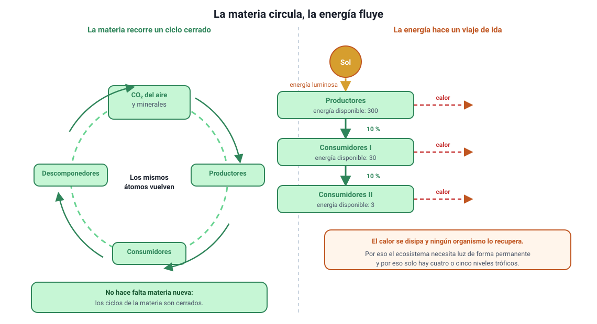
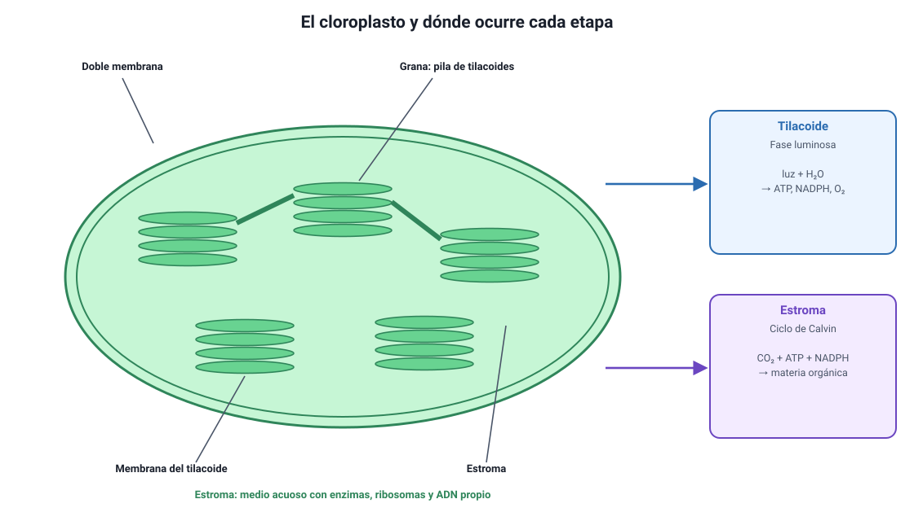
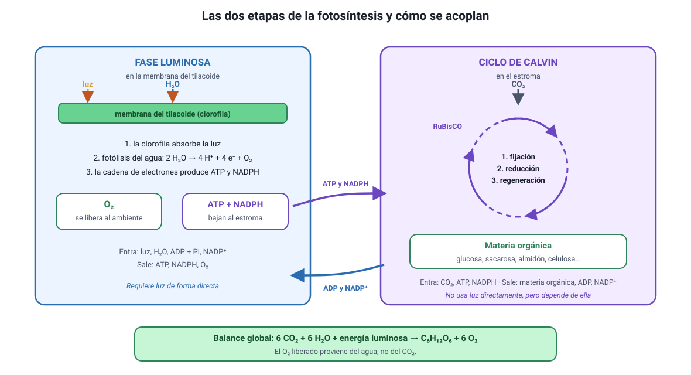
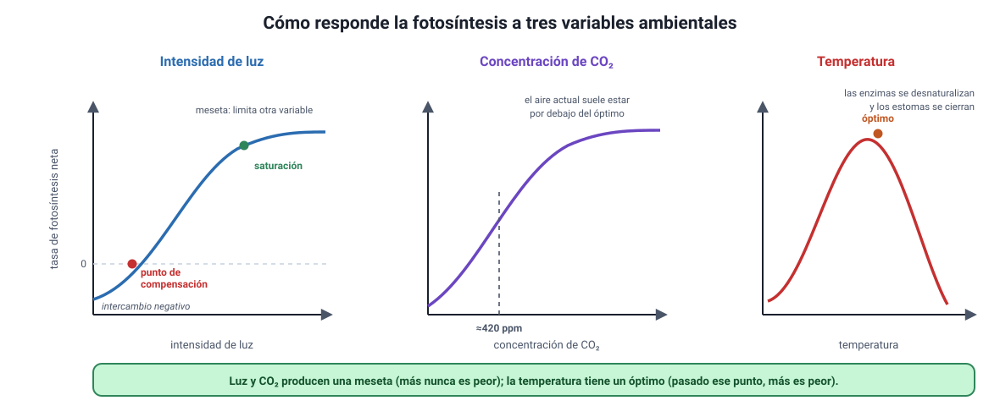
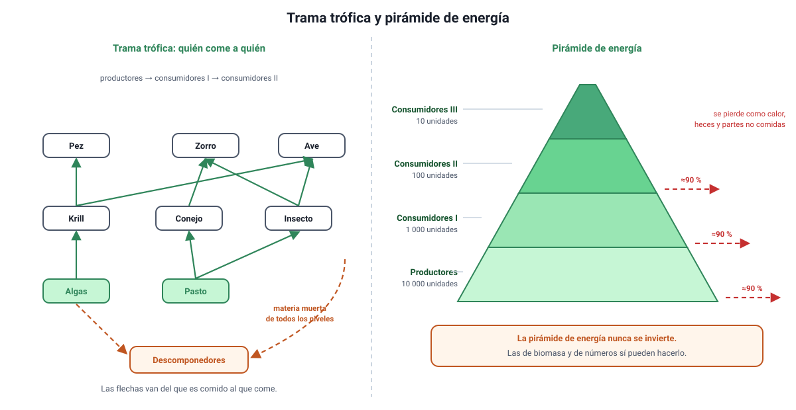
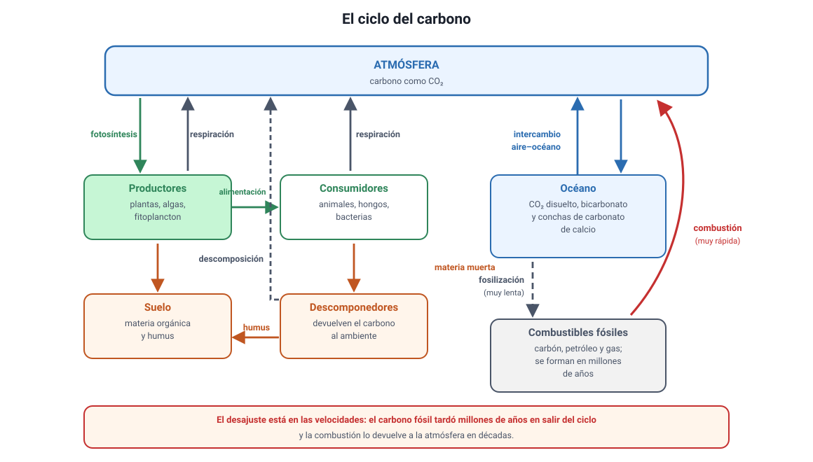

Capítulo 10: Materia y energía en el ecosistema
Área temática: Organismo y ambiente
Cada átomo de carbono de tu cuerpo estuvo antes en el aire. Entró a la biosfera por el poro de una hoja, se incorporó a una molécula orgánica dentro de un cloroplasto y llegó hasta ti a través de lo que comes. La energía que mueve ese carbono, en cambio, no vino del aire: vino del Sol, y a diferencia del carbono no vuelve. Esa asimetría —la materia circula, la energía se degrada y se pierde como calor— es la idea que ordena todo este capítulo.
Aquí vas a aprender en qué se diferencian la nutrición autótrofa y la heterótrofa; dónde ocurre la fotosíntesis, con qué reactantes y qué productos; cuáles son sus dos etapas, qué pasa en cada una y qué moléculas las conectan; qué variables ambientales la limitan y cómo se leen las curvas de luz, CO2 y temperatura; cómo se relacionan la fotosíntesis y la respiración celular en el reciclaje del carbono y del oxígeno; y cómo fluye la energía por los niveles tróficos, las cadenas, las tramas y las pirámides.
Este capítulo cubre el conocimiento 4.1 del temario DEMRE 2027, del 4.1.1 al 4.1.4, y cierra el área «Organismo y ambiente».
1. Conceptos claveIA:12
| Concepto | Definición |
|---|---|
| Ecosistema | Conjunto de organismos de un lugar junto con el ambiente físico con el que intercambian materia y energía |
| Autótrofo | Organismo que fabrica sus propias moléculas orgánicas a partir de materia inorgánica, usando una fuente externa de energía |
| Heterótrofo | Organismo que obtiene sus moléculas orgánicas consumiendo a otros organismos o su materia orgánica |
| Fotosíntesis | Proceso por el cual un organismo usa la energía de la luz para transformar CO2 y H2O en materia orgánica, liberando O2 |
| Cloroplasto | Organelo de las células fotosintéticas eucariontes donde ocurre la fotosíntesis; tiene tilacoides y estroma |
| Tilacoides | Membranas internas del cloroplasto, apiladas en granas, donde ocurre la fase luminosa |
| Estroma | Medio acuoso interno del cloroplasto, fuera de los tilacoides, donde ocurre el ciclo de Calvin |
| Clorofila | Pigmento verde de los tilacoides que absorbe la energía de la luz; refleja el verde, y por eso las hojas se ven verdes |
| Fase luminosa | Primera etapa de la fotosíntesis: con luz y agua produce ATP, NADPH y O2 |
| Fotólisis del agua | Ruptura del agua en la fase luminosa, que aporta los electrones y libera el O2 |
| Ciclo de Calvin | Segunda etapa: fija el CO2 en materia orgánica gastando el ATP y el NADPH de la fase luminosa |
| Fijación de carbono | Incorporación del carbono inorgánico del CO2 a una molécula orgánica |
| RuBisCO | Enzima del estroma que une el CO2 a una molécula orgánica; inicia el ciclo de Calvin |
| Respiración celular | Oxidación de materia orgánica con O2 para obtener ATP, liberando CO2 y H2O |
| ATP | Molécula que entrega energía utilizable a las reacciones de la célula en el momento en que ocurren |
| NADPH | Molécula que transporta electrones (poder reductor) desde la fase luminosa hasta el ciclo de Calvin |
| Factor limitante | Variable que, en una condición dada, es la que impide que un proceso vaya más rápido |
| Punto de compensación | Intensidad de luz a la que la fotosíntesis iguala exactamente a la respiración: el intercambio neto de gases es cero |
| Punto de saturación | Valor de una variable desde el cual seguir aumentándola ya no incrementa la tasa de fotosíntesis |
| Productor | Organismo autótrofo que forma el primer nivel trófico y aporta la materia orgánica del ecosistema |
| Consumidor | Heterótrofo que se alimenta de otros organismos: primario si come productores, secundario si come consumidores primarios |
| Descomponedor | Heterótrofo que degrada materia orgánica muerta y devuelve la materia inorgánica al ambiente |
| Nivel trófico | Posición de un organismo en el recorrido de la materia y la energía, según de quién obtiene su alimento |
| Cadena trófica | Secuencia lineal que indica quién come a quién, de un nivel al siguiente |
| Trama trófica | Red de cadenas tróficas interconectadas, que refleja que un organismo suele tener varias fuentes de alimento |
| Biomasa | Masa de materia orgánica presente en un nivel trófico o en un ecosistema |
| Productividad primaria | Cantidad de materia orgánica que los productores generan por unidad de superficie y de tiempo |
| Eficiencia ecológica | Fracción de la energía de un nivel trófico que queda incorporada en el nivel siguiente; en promedio, cercana al 10 % |
2. Los dos recorridos: la materia circula, la energía se degradaIA:34
Este capítulo trata de dos cosas que atraviesan el ecosistema al mismo tiempo, pero que se comportan de manera opuesta. Distinguirlas es lo primero, porque buena parte de los ítems de esta unidad se resuelve sabiendo si la pregunta habla de materia o de energía.

a. La materia circulaIA:567
Los átomos que forman a los seres vivos —carbono, hidrógeno, oxígeno, nitrógeno, fósforo— son los mismos desde que existe la vida. No se crean ni se destruyen: se reutilizan. Un átomo de carbono pasa del aire a una hoja, de la hoja a un herbívoro, del herbívoro a un descomponedor y de vuelta al aire, y puede recorrer ese trayecto muchas veces. Por eso hablamos de ciclos de la materia, que son cerrados: la Tierra no necesita recibir carbono nuevo desde el espacio.
b. La energía se degradaIA:8910
La energía, en cambio, hace un viaje de ida. Entra al ecosistema como luz solar, los productores capturan una parte y la guardan en enlaces químicos, y de ahí en adelante cada transferencia y cada reacción pierden una fracción como calor. El calor se disipa al ambiente y ningún organismo puede volver a usarlo para fabricar materia orgánica. Por eso el flujo de energía es unidireccional y por eso el ecosistema necesita un aporte permanente de luz: si el Sol se apagara, los ciclos de la materia se detendrían en pocos años.
La diferencia en una línea. La materia circula (ciclos cerrados, se recicla); la energía fluye (recorrido lineal, se degrada a calor y se pierde). Esa asimetría explica por qué hay descomponedores que devuelven la materia, pero no existe ningún organismo que «devuelva» la energía.
c. Por qué esto importa para la pruebaIA:111213
El temario reúne en un mismo conocimiento (el 4.1.1) la fotosíntesis, la respiración celular y el flujo de energía, y no es casualidad: son las tres piezas del mismo mecanismo.
| Proceso | Qué hace con la materia | Qué hace con la energía |
|---|---|---|
| Fotosíntesis | Incorpora carbono inorgánico (CO2) a moléculas orgánicas | Transforma energía luminosa en energía química almacenada |
| Respiración celular | Devuelve el carbono al ambiente como CO2 | Libera la energía química y la vuelve utilizable como ATP, con pérdida de calor |
| Alimentación | Traspasa moléculas orgánicas de un nivel trófico al siguiente | Traspasa energía química, con una pérdida cercana al 90 % en cada paso |
El error más frecuente de la unidad. Decir que «la energía se recicla» o que «la materia se pierde». Es exactamente al revés. Si una alternativa afirma que la energía vuelve al Sol, que los descomponedores devuelven energía a los productores o que la materia se agota en el ecosistema, es incorrecta.
3. Nutrición autótrofa y heterótrofaIA:1415
Es el conocimiento 4.1.2 del temario DEMRE 2027. La pregunta que separa a los dos tipos de nutrición es una sola: ¿de dónde saca el organismo el carbono de sus moléculas orgánicas?
a. La definición que hay que tener claraIA:161718
- Un autótrofo («que se alimenta a sí mismo») construye sus moléculas orgánicas a partir de materia inorgánica, sobre todo CO2 y agua. Necesita, además, una fuente externa de energía: la luz en los fotoautótrofos (plantas, algas, cianobacterias) o la oxidación de compuestos inorgánicos en los quimioautótrofos (algunas bacterias de fuentes hidrotermales y de suelos).
- Un heterótrofo («que se alimenta de otro») obtiene sus moléculas orgánicas ya formadas, consumiendo a otros organismos o su materia orgánica. Animales, hongos y la mayoría de las bacterias son heterótrofos.
El criterio es la fuente de carbono, no la de energía. Todos los organismos, autótrofos incluidos, necesitan energía. Lo que define a un autótrofo es que fija carbono inorgánico; lo que define a un heterótrofo es que lo recibe ya incorporado a moléculas orgánicas.
b. Lo que ambos compartenIA:192021
Un malentendido habitual es creer que las plantas «hacen fotosíntesis en lugar de respirar». No es así:
- Todos los organismos con metabolismo aerobio hacen respiración celular, plantas incluidas, de día y de noche. La respiración es cómo se obtiene el ATP; la fotosíntesis es cómo se fabrica el alimento.
- Los autótrofos, por lo tanto, hacen las dos cosas: fotosintetizan y respiran. Los heterótrofos solo respiran.
| Autótrofo (por ejemplo, una planta) | Heterótrofo (por ejemplo, un animal) | |
|---|---|---|
| Fuente de carbono | CO2 del ambiente | Moléculas orgánicas de su alimento |
| Fuente de energía | Luz solar | Enlaces químicos de su alimento |
| ¿Hace fotosíntesis? | Sí | No |
| ¿Hace respiración celular? | Sí | Sí |
| Nivel trófico | Productor | Consumidor o descomponedor |
c. Los casos que la PAES usa para complicar la clasificaciónIA:222324
La prueba rara vez pregunta la definición en abstracto: suele presentar un organismo raro y pedir clasificarlo.
- Plantas parásitas o sin clorofila. Existen plantas que perdieron la capacidad de fotosintetizar y toman la materia orgánica de otra planta. Son plantas, pero su nutrición es heterótrofa.
- Plantas «carnívoras». Fotosintetizan normalmente: son autótrofas. Capturan insectos para obtener nitrógeno y fósforo, que son nutrientes minerales, no carbono ni energía.
- Simbiosis con algas. Corales, algunos moluscos y ciertos animales albergan algas en sus tejidos y reciben de ellas productos de la fotosíntesis. El animal sigue siendo heterótrofo: no fija el carbono, lo recibe de otro organismo, aunque ese organismo viva dentro de sus células.
- Hongos. No son plantas ni hacen fotosíntesis: son heterótrofos, y muchos actúan como descomponedores.
Cómo se pregunta esto. La prueba oficial PAES de Invierno 2027 planteó el caso de una salamandra que aloja algas unicelulares en sus células y pidió inferir de qué tipo es la nutrición de cada uno. La clave estaba en recordar que quien fija el CO2 es el alga —autótrofa— y que el animal, aunque reciba los productos de esa fotosíntesis sin comerse nada, sigue siendo heterótrofo. Ante un caso extraño, no busques la etiqueta del grupo (planta, animal, hongo): pregúntate quién fija el carbono.
4. La fotosíntesis: lugar, reactantes y productosIA:2526
Es el conocimiento 4.1.3 del temario DEMRE 2027, en su parte de estructura y balance global. Las etapas vienen en la sección 5.
a. Dónde ocurreIA:272829
En las células eucariontes fotosintéticas, la fotosíntesis ocurre dentro del cloroplasto, un organelo con doble membrana que se estudió en el capítulo 4. Su interior tiene dos compartimientos, y cada etapa de la fotosíntesis ocurre en uno distinto:

| Compartimiento | Qué es | Qué ocurre ahí |
|---|---|---|
| Tilacoides | Sacos de membrana apilados en granas, con clorofila y otros pigmentos | Fase luminosa: captura de luz, fotólisis del agua, síntesis de ATP y NADPH, liberación de O2 |
| Estroma | Medio acuoso que rodea a los tilacoides, con enzimas y ADN propio | Ciclo de Calvin: fijación del CO2 y síntesis de materia orgánica |
Un ítem que se repite. «¿En qué estructura del cloroplasto hay que buscar tal actividad?» Si lo que se mide tiene que ver con luz, pigmentos u oxígeno, la respuesta es el tilacoide. Si tiene que ver con fijación de CO2, RuBisCO o síntesis de azúcares, es el estroma. La prueba oficial de Invierno 2027 preguntó las dos cosas en ítems distintos.
En los organismos procariontes fotosintéticos, como las cianobacterias, no hay cloroplastos: los pigmentos están en repliegues de la membrana plasmática. El proceso es el mismo; cambia solo dónde está montada la maquinaria.
b. La ecuación química globalIA:303132
El balance completo de la fotosíntesis se resume así:
6 CO2 + 6 H2O + energía luminosa → C6H12O6 + 6 O2
Conviene leerla con calma, porque cada término responde a una pregunta típica:
| Término | Qué es | De dónde viene o adónde va |
|---|---|---|
| CO2 | Reactante; aporta el carbono | Entra desde el aire por los estomas de la hoja |
| H2O | Reactante; aporta los electrones y el hidrógeno | Sube desde la raíz por el xilema |
| Energía luminosa | No es materia: es el aporte energético | La absorbe la clorofila de los tilacoides |
| C6H12O6 | Producto; la materia orgánica fabricada | Se usa, se transporta como sacarosa o se guarda como almidón |
| O2 | Producto; se libera al ambiente | Sale por los estomas |
El oxígeno liberado viene del agua, no del CO2. Se demostró marcando el agua con oxígeno-18: el isótopo apareció en el O2 liberado. La fotosíntesis rompe el agua (fotólisis) para obtener electrones, y el oxígeno queda como residuo de esa ruptura. Es uno de los datos que más se pregunta y uno de los que más se responde mal.
c. Qué significa «fijar» carbonoIA:333435
Se llama fijación de carbono a incorporar el carbono que estaba en una molécula inorgánica —el CO2 del aire— a una molécula orgánica. Es el paso que introduce materia al mundo vivo: todo el carbono de tu cuerpo, del de un ballenato y del de un hongo pasó alguna vez por una reacción de fijación dentro de un autótrofo.
Por eso la fotosíntesis no es solo «cómo se alimentan las plantas». Es la puerta de entrada de la materia y de la energía a casi todos los ecosistemas del planeta.
5. Las etapas de la fotosíntesisIA:3637
Sigue el conocimiento 4.1.3. La fotosíntesis tiene dos etapas que ocurren en compartimientos distintos y que están acopladas: la primera fabrica lo que la segunda gasta.

a. Fase luminosa (en la membrana del tilacoide)IA:383940
Necesita luz de manera directa. Ocurre en tres pasos encadenados:
- Captura de la luz. Los pigmentos, sobre todo la clorofila, absorben fotones. La energía absorbida excita electrones de la clorofila, que quedan con más energía de la que tenían.
- Fotólisis del agua. La clorofila que cedió electrones debe reponerlos, y los toma del agua, que se rompe: 2 H2O → 4 H+ + 4 e− + O2. Aquí se produce todo el oxígeno que libera la fotosíntesis.
- Síntesis de ATP y NADPH. Los electrones excitados recorren una cadena de transporte en la membrana del tilacoide. Ese recorrido bombea H+ hacia el interior del tilacoide y el gradiente resultante impulsa la síntesis de ATP. Al final de la cadena, los electrones se entregan al NADP+, que se reduce a NADPH.
| Fase luminosa | |
|---|---|
| Dónde | Membrana de los tilacoides |
| Entra | Luz, H2O, ADP + Pi, NADP+ |
| Sale | ATP, NADPH, O2 |
b. Ciclo de Calvin (en el estroma)IA:414243
No necesita luz de forma directa, pero sí depende de ella, porque consume el ATP y el NADPH que solo se fabrican con luz. Sus tres momentos son:
- Fijación. La enzima RuBisCO une el CO2 a una molécula de cinco carbonos que ya estaba en el estroma. El producto se parte de inmediato en dos moléculas de tres carbonos.
- Reducción. Esas moléculas reciben energía del ATP y electrones del NADPH, y se transforman en un azúcar de tres carbonos. Parte de ese azúcar sale del ciclo: es la ganancia neta, con la que la célula fabrica glucosa, sacarosa, almidón, celulosa, aminoácidos y lípidos.
- Regeneración. El resto del azúcar se reordena, gastando más ATP, para reponer la molécula de cinco carbonos con la que empezó el ciclo. Así el ciclo puede repetirse.
| Ciclo de Calvin | |
|---|---|
| Dónde | Estroma del cloroplasto |
| Entra | CO2, ATP, NADPH |
| Sale | Materia orgánica, ADP + Pi, NADP+ |
Cómo se acoplan. La fase luminosa entrega ATP y NADPH al ciclo de Calvin; el ciclo de Calvin devuelve ADP y NADP+ a la fase luminosa. Son dos etapas que se alimentan mutuamente, y esa es la razón de que ninguna funcione sola por mucho tiempo.
«Fase oscura» es un nombre engañoso. Al ciclo de Calvin se le llamó así porque no requiere luz directamente, no porque ocurra de noche. En la práctica funciona de día, mientras la fase luminosa le está entregando ATP y NADPH; al oscurecer se detiene en pocos minutos. Si una alternativa dice que el ciclo de Calvin ocurre durante la noche, es incorrecta.
c. La RuBisCO, la enzima más abundante de la biosferaIA:444546
Vale la pena conocerla porque aparece con frecuencia en los ítems:
- Es la enzima que fija el CO2, y está en el estroma.
- Se estima que es la proteína más abundante del planeta, porque las plantas necesitan enormes cantidades de ella.
- Es lenta y poco selectiva: también puede unir O2 en lugar de CO2, en un proceso llamado fotorrespiración, que no produce azúcar y desperdicia energía. Ese problema se agrava cuando hace calor y la planta cierra los estomas, porque adentro baja el CO2 y sube el O2.
Por eso mejorar la RuBisCO es un objetivo de investigación agrícola: la prueba oficial de Invierno 2027 incluyó un experimento con plantas de tabaco transgénicas que expresaban distintos niveles de esta enzima, cultivadas a distintas concentraciones de CO2.
6. Variables ambientales que afectan la fotosíntesisIA:4748
Es el conocimiento 4.1.4 del temario DEMRE 2027 y, en la práctica, la sección más rentable del capítulo: casi siempre se pregunta con un gráfico o con un diseño experimental, que son las habilidades científicas que más pesan en la prueba.

a. La idea que ordena todo: el factor limitanteIA:495051
En un momento dado, la velocidad de la fotosíntesis está determinada por la variable que está más escasa, no por el promedio de todas. Esa variable es el factor limitante: aumentarla acelera el proceso, mientras que aumentar cualquier otra no cambia nada.
Es la misma lógica de una fila de cajas en el supermercado: si hay una sola caja abierta, poner más carros no hace avanzar la fila más rápido; hay que abrir otra caja.
Cómo se reconoce el factor limitante en un gráfico. Mientras la curva sube, la variable del eje horizontal es el factor limitante. Cuando la curva se aplana (meseta), esa variable dejó de limitar y el proceso pasó a estar limitado por otra.
b. Intensidad de luzIA:525354
La curva de luz tiene tres tramos y dos puntos con nombre:
- Tramo inicial ascendente. A poca luz, cada aumento de intensidad aumenta la fotosíntesis casi en proporción directa: la luz es el factor limitante.
- Punto de compensación. Es la intensidad a la que la fotosíntesis iguala exactamente a la respiración. La planta consume tanto O2 como produce y libera tanto CO2 como fija, de modo que el intercambio neto de gases es cero. Por debajo de ese punto la planta pierde materia orgánica; por encima, la acumula.
- Punto de saturación y meseta. Desde cierta intensidad, más luz ya no aumenta la tasa: la maquinaria trabaja al máximo y el límite pasa a estar en el CO2, en la temperatura o en la cantidad de enzimas.
Con luz muy intensa, además, puede haber fotoinhibición: un exceso de energía daña el aparato fotosintético y la tasa baja.
El punto de compensación no es «cero fotosíntesis». En ese punto la planta sí está fotosintetizando; lo que ocurre es que produce exactamente lo mismo que gasta respirando. Si un gráfico muestra intercambio neto de O2 igual a cero, la respuesta no es «la planta no fotosintetiza», sino «fotosíntesis y respiración se igualan».
c. Concentración de CO2IA:555657
La curva tiene la misma forma que la de la luz: sube y luego se satura. El CO2 atmosférico ronda las 420 ppm, un valor que para muchas plantas está por debajo del óptimo; por eso en invernaderos se enriquece el aire con CO2 y por eso las plantas acuáticas suelen estar más limitadas todavía, ya que el CO2 difunde unas diez mil veces más lento en agua que en aire.
Hay un detalle que la prueba usa: la entrada de CO2 depende de los estomas. Si hace mucho calor o falta agua, la planta los cierra para no deshidratarse, y al cerrarlos también corta el suministro de CO2. Así, una sequía baja la fotosíntesis aunque haya luz de sobra.
d. TemperaturaIA:585960
Aquí la curva es distinta: tiene forma de campana, con un óptimo.
| Tramo | Qué ocurre |
|---|---|
| Temperaturas bajas | Las enzimas trabajan lento; la tasa es baja pero sube al calentar |
| Óptimo | Máxima actividad enzimática; el valor depende de la especie y del ambiente en que vive |
| Temperaturas altas | Las enzimas se desnaturalizan y los estomas se cierran: la tasa cae, y el daño puede ser irreversible |
La diferencia de forma no es un detalle: la luz y el CO2 producen mesetas (más nunca es peor, salvo fotoinhibición extrema), mientras que la temperatura produce un óptimo (más sí es peor pasado cierto punto).
e. Otras variablesIA:616263
- Agua. Es reactante de la fotosíntesis, pero su efecto principal es indirecto: la falta de agua cierra los estomas y corta el CO2.
- Nutrientes minerales. El nitrógeno y el magnesio forman parte de la clorofila y de las enzimas; su carencia reduce la capacidad fotosintética.
- Cantidad de enzima. Con luz y CO2 abundantes, el límite puede estar en cuánta RuBisCO tiene la planta.
f. Cómo diseñar y leer un experimento de esta secciónIA:646566
La forma clásica de medir fotosíntesis en el colegio es contar burbujas de O2 que desprende una planta acuática, o seguir el cambio de CO2 en una cámara cerrada. Para que el resultado sea interpretable:
- Se manipula una sola variable (por ejemplo, la distancia a la lámpara) y se mantienen constantes las demás (temperatura del agua, concentración de CO2, misma planta, mismo tiempo de medición).
- Se incluye un control, como un montaje en oscuridad o sin la planta.
- Se repite cada condición para poder promediar.
- Cuidado con un detalle real: acercar una lámpara incandescente aumenta la luz y la temperatura. Si no se interpone un filtro de agua, quedan dos variables cambiando a la vez y el experimento no prueba nada.
La pregunta típica. «La curva se aplanó al aumentar la luz. ¿Qué convendría hacer para aumentar la tasa?» La respuesta correcta nunca es «subir más la luz»: hay que actuar sobre otra variable, porque la luz ya dejó de ser el factor limitante.
7. Respiración celular: el otro lado del balanceIA:6768
Es la segunda mitad del conocimiento 4.1.1. La respiración celular no es «lo contrario» de la fotosíntesis en un sentido trivial, pero sí es el proceso que cierra el ciclo del carbono y del oxígeno.
a. Qué es y dónde ocurreIA:697071
La respiración celular aerobia oxida moléculas orgánicas usando O2 para obtener ATP, la moneda energética de la célula. Ocurre en el citoplasma (glucólisis) y en la mitocondria (ciclo de Krebs y cadena transportadora de electrones), y la hacen todas las células con metabolismo aerobio: las de un animal, las de un hongo y también las de una planta.
C6H12O6 + 6 O2 → 6 CO2 + 6 H2O + energía (ATP + calor)
b. La comparación que hay que saberIA:727374
| Fotosíntesis | Respiración celular | |
|---|---|---|
| Quién la hace | Solo los organismos fotosintéticos | Todos los organismos aerobios, plantas incluidas |
| Dónde | Cloroplasto | Citoplasma y mitocondria |
| Reactantes | CO2 y H2O | Materia orgánica y O2 |
| Productos | Materia orgánica y O2 | CO2, H2O y ATP |
| Energía | Almacena energía luminosa como energía química | Libera energía química y la convierte en ATP y calor |
| Cuándo | Solo con luz | De día y de noche, sin interrupción |
No es una reacción reversible. Las ecuaciones globales parecen una el revés de la otra, pero ocurren en organelos distintos, con enzimas distintas y por rutas distintas. Y sobre todo: la fotosíntesis necesita un aporte externo de energía (la luz), mientras que la respiración libera energía. Si fueran realmente reversibles, no haría falta el Sol.
c. El reciclaje del carbono y del oxígenoIA:757677
Puestos uno junto al otro, los dos procesos forman un circuito:
- El carbono pasa de CO2 a materia orgánica en la fotosíntesis y vuelve a CO2 en la respiración y en la descomposición.
- El oxígeno se libera como O2 en la fotosíntesis y se consume en la respiración, donde termina formando agua.
Ese circuito explica por qué la atmósfera actual contiene un 21 % de oxígeno: es un producto acumulado por la fotosíntesis a lo largo de miles de millones de años, desde las primeras cianobacterias.
d. Balance en la planta: lo que se mide de día y de nocheIA:787980
Una planta hace las dos cosas a la vez, y lo que un instrumento registra es el balance neto:
| Condición | Fotosíntesis | Respiración | Intercambio neto medido |
|---|---|---|---|
| Oscuridad | No ocurre | Ocurre | Consume O2 y libera CO2, igual que un animal |
| Luz tenue (punto de compensación) | Igual a la respiración | Ocurre | Cero: no se detecta intercambio |
| Luz intensa | Mayor que la respiración | Ocurre | Libera O2 y consume CO2 |
«De noche las plantas quitan oxígeno»: verdadero a medias. De noche una planta efectivamente consume O2 y libera CO2, porque solo respira. Pero durante el día produce mucho más O2 del que consume, de modo que su balance diario es netamente positivo. La afirmación se vuelve falsa cuando se la usa para concluir que las plantas «gastan» oxígeno.
e. Productividad primaria bruta y netaIA:818283
De aquí sale una distinción que después se usa en las pirámides:
- Productividad primaria bruta (PPB): toda la materia orgánica que los productores fabrican por fotosíntesis en un tiempo y una superficie dados.
- Productividad primaria neta (PPN): lo que queda después de descontar lo que los propios productores gastan en su respiración. Es la materia realmente disponible para los consumidores.
PPN = PPB − respiración de los productores
Si un ítem entrega los tres valores y pregunta cuánta materia queda para los herbívoros, la respuesta es la neta, nunca la bruta.
8. Flujo de energía: niveles tróficos, cadenas, tramas y pirámidesIA:8485
Cierra el conocimiento 4.1.1. Ya sabemos cómo entra la energía al ecosistema; ahora veremos qué le pasa cuando recorre a los organismos.
a. Los niveles tróficosIA:868788
Un nivel trófico es la posición que ocupa un organismo según de dónde obtiene su materia y su energía.
| Nivel | Quiénes | Qué hacen |
|---|---|---|
| Productores | Plantas, algas, cianobacterias | Fijan CO2 y fabrican la materia orgánica del ecosistema |
| Consumidores primarios | Herbívoros | Comen productores |
| Consumidores secundarios | Carnívoros que comen herbívoros | Comen consumidores primarios |
| Consumidores terciarios | Depredadores de carnívoros | Comen consumidores secundarios |
| Descomponedores | Hongos y muchas bacterias | Degradan materia orgánica muerta de todos los niveles y liberan materia inorgánica |
Los descomponedores merecen un párrafo aparte: sin ellos la materia quedaría atrapada en los cuerpos muertos y el ciclo se detendría. Son los que devuelven el carbono, el nitrógeno y el fósforo al ambiente para que los productores puedan volver a usarlos.
b. Cadenas y tramas tróficasIA:899091
Una cadena trófica es una secuencia lineal: alga → krill → pez → lobo marino. Es útil para explicar, pero simplifica demasiado.
Una trama trófica es la red real: la mayoría de los organismos comen de varias fuentes y son comidos por varios depredadores. Un omnívoro ocupa más de un nivel a la vez.

Las flechas indican hacia dónde va la materia y la energía, es decir, apuntan del que es comido al que come. Una flecha de la lechuga al conejo significa «el conejo come lechuga». Invertir la lectura de las flechas es uno de los errores más frecuentes en los ítems con trama trófica.
Una consecuencia práctica de las tramas es que son más estables que las cadenas: si desaparece una presa, un depredador con varias fuentes de alimento puede cambiar de dieta, mientras que en una cadena lineal el nivel superior colapsa.
c. Por qué las pirámides se estrechanIA:929394
Al pasar de un nivel al siguiente, solo alrededor del 10 % de la energía queda incorporada en el nivel de arriba. Esa fracción se llama eficiencia ecológica y es un promedio, no una ley exacta: varía aproximadamente entre el 5 % y el 20 % según el ecosistema.
El 90 % restante no desaparece: se va en tres cosas.
- Respiración celular. La mayor parte de lo que un organismo come lo quema para vivir, y esa energía termina como calor.
- Materia no asimilada. Huesos, pelos, celulosa y todo lo que se elimina en las heces pasa a los descomponedores, no al depredador.
- Partes no consumidas. Nadie se come el organismo entero.
Por eso hay pocos niveles tróficos. Con un 10 % de eficiencia, de 10 000 unidades de energía en los productores quedan 1000 en los herbívoros, 100 en los carnívoros y 10 en el nivel siguiente. Alrededor del cuarto o quinto nivel ya no queda energía suficiente para sostener una población, y la cadena se corta. También es la razón por la que una dieta basada en vegetales alimenta a más personas por hectárea que una basada en carne.
d. Los tres tipos de pirámideIA:959697
| Pirámide | Qué representa | ¿Puede aparecer invertida? |
|---|---|---|
| De energía | Energía que fluye por cada nivel en un tiempo dado | Nunca. Lo impide la degradación de la energía |
| De biomasa | Masa de materia orgánica presente en cada nivel | Sí, si el nivel inferior se renueva muy rápido |
| De números | Cantidad de individuos por nivel | Sí, por ejemplo un árbol que sostiene miles de insectos |
El caso clásico de pirámide de biomasa invertida es el océano: en un momento cualquiera, la masa de fitoplancton es menor que la del zooplancton que se lo come, porque el fitoplancton se reproduce en horas y se consume casi por completo. Medida como energía por unidad de tiempo, en cambio, la pirámide vuelve a tener la base ancha.
Una regla segura. Si un ítem muestra una pirámide invertida y pregunta de qué tipo puede ser, la respuesta nunca es «de energía». Y si pregunta por qué una de biomasa está invertida, la razón siempre tiene que ver con la velocidad de renovación del nivel inferior, no con que haya más energía arriba.
e. Bioacumulación: lo que sí se concentra hacia arribaIA:9899100
Hay algo que aumenta al subir de nivel: ciertos contaminantes que el organismo no puede degradar ni eliminar, como el mercurio o algunos pesticidas. Como un depredador consume mucha biomasa del nivel inferior a lo largo de su vida, acumula el contaminante de todas sus presas. Por eso las recomendaciones sanitarias sobre consumo de mercurio apuntan a los peces depredadores grandes y de vida larga, y no a los pequeños.
9. El ciclo del carbono y el ecosistema chilenoIA:101102
Esta sección junta lo anterior en la escala del planeta y lo aterriza en Chile. Sigue dentro del conocimiento 4.1.1, en su parte de reciclaje de carbono y oxígeno.

a. Los reservorios y los flujosIA:103104105
El carbono está guardado en unos pocos reservorios y se mueve entre ellos por unos pocos procesos:
| Reservorio | Forma en que está el carbono |
|---|---|
| Atmósfera | CO2 |
| Seres vivos | Moléculas orgánicas |
| Suelo | Materia orgánica en descomposición y humus |
| Océano | CO2 disuelto, bicarbonato y conchas de carbonato de calcio |
| Rocas y combustibles fósiles | Caliza, carbón, petróleo y gas |
| Proceso | Hacia dónde mueve el carbono |
|---|---|
| Fotosíntesis | Atmósfera u océano → seres vivos |
| Respiración celular | Seres vivos → atmósfera u océano |
| Descomposición | Materia muerta → suelo y atmósfera |
| Sedimentación y fosilización | Seres vivos → rocas y combustibles fósiles (muy lento) |
| Combustión | Combustibles fósiles y biomasa → atmósfera (muy rápido) |
Dónde se rompe el equilibrio. Formar un combustible fósil toma millones de años; quemarlo toma segundos. La combustión devuelve a la atmósfera, en pocas décadas, carbono que había quedado fuera del ciclo durante eras geológicas. Ese desajuste entre la velocidad de entrada y la de salida es la raíz del aumento del CO2 atmosférico.
b. Sumideros y fuentesIA:106107108
Un sumidero de carbono es un sistema que capta más CO2 del que emite; una fuente, uno que emite más del que capta. Un bosque en crecimiento es un sumidero, porque acumula carbono en su madera y en su suelo. Un bosque quemado es, en cambio, una fuente: libera de golpe el carbono que había acumulado durante décadas.
En Chile esto tiene una dimensión concreta. El país cuenta con alrededor de 14 millones de hectáreas de bosque nativo, además de plantaciones forestales, y su rol como sumidero forma parte de la Estrategia Nacional de Bosques y Cambio Climático. Los incendios forestales y la deforestación operan en la dirección contraria.
El océano es el otro gran sumidero: el fitoplancton fija enormes cantidades de carbono, y el sistema de la corriente de Humboldt, frente a la costa chilena, es uno de los más productivos del mundo gracias a la surgencia, que trae nutrientes desde el fondo a la zona iluminada. Esa productividad primaria es la base de la pesquería nacional. La contrapartida es que, al disolverse, el CO2 forma ácido carbónico y acidifica el agua, lo que dificulta a los organismos con conchas fabricar su carbonato de calcio.
c. Cómo conecta todo el capítuloIA:109110111
Vale la pena ver el recorrido completo en una sola frase: la luz entra al ecosistema, la fotosíntesis la guarda en materia orgánica fijando carbono del aire, la respiración de todos los organismos libera esa energía como ATP y calor y devuelve el carbono al aire, los niveles tróficos trasladan lo que queda perdiendo un 90 % en cada paso, y los descomponedores cierran el circuito de la materia. La energía, en cambio, no cierra ningún circuito: ya se fue como calor.
d. Lo que conviene llevar de este capítuloIA:112113114
- La materia circula; la energía fluye y se degrada. Ante cualquier alternativa que hable de reciclar energía, descártala.
- Autótrofo = fija carbono inorgánico. No importa si es planta, alga o bacteria, ni si vive dentro de otro organismo.
- Tilacoide o estroma. Luz, pigmentos y O2 → tilacoide. CO2, RuBisCO y azúcares → estroma.
- El O2 viene del agua, no del CO2.
- Las dos etapas están acopladas: ATP y NADPH bajan al estroma; ADP y NADP+ vuelven al tilacoide.
- Factor limitante: mientras la curva sube, esa variable limita; en la meseta, limita otra. Luz y CO2 dan mesetas; la temperatura da un óptimo.
- Punto de compensación: intercambio neto cero, no fotosíntesis cero.
- Las plantas también respiran, de día y de noche.
- PPN = PPB − respiración de los productores, y es lo que llega a los herbívoros.
- Un 10 % pasa al nivel siguiente; el resto se va en respiración, heces y partes no consumidas. La pirámide de energía nunca se invierte.
Ejemplos PAES resueltos
Cuatro ítems al estilo de la prueba, resueltos paso a paso. Cúbrelos primero y después compara.
Ejemplo 1 (Procesar y analizar la evidencia). Se mide el intercambio neto de O2 de una planta acuática a distintas intensidades de luz, a temperatura constante:
| Intensidad de luz (unidades arbitrarias) | Intercambio neto de O2 (mg/h) |
|---|---|
| 0 | −4 |
| 20 | −2 |
| 40 | 0 |
| 80 | +6 |
| 160 | +12 |
| 320 | +12 |
¿Cuál de las siguientes afirmaciones se desprende correctamente de estos datos?
A) A 40 unidades de luz la planta no realiza fotosíntesis. B) A 40 unidades de luz la fotosíntesis iguala a la respiración. C) A 320 unidades de luz la planta dejó de fotosintetizar. D) A 0 unidades de luz la planta no realiza ningún proceso metabólico.
Desarrollo. Conviene leer la tabla de arriba hacia abajo y preguntarse qué significa cada signo.
- A 0 unidades el valor es −4: la planta consume O2. Sin luz no hay fotosíntesis, pero sí respiración celular, así que D es falsa: la planta está metabolizando.
- A 40 unidades el valor es exactamente 0. Eso no significa que no ocurra nada: significa que la planta produce tanto O2 como consume, es decir, que la fotosíntesis iguala a la respiración. Ese es el punto de compensación, y descarta A.
- Entre 80 y 160 el valor sube: la luz sigue siendo el factor limitante.
- De 160 a 320 el valor se mantiene en +12: la curva llegó a su meseta. La planta sigue fotosintetizando a tasa máxima, solo que ahora la limita otra variable, probablemente el CO2. Por eso C es falsa.
Clave: B.
Lo que evalúa. Que distingas un intercambio neto igual a cero de una ausencia de proceso. Es la confusión que más se explota en esta unidad.
Ejemplo 2 (Planificar y conducir una investigación). Un grupo quiere determinar si el aumento de la concentración de CO2 incrementa el crecimiento de una especie vegetal. Dispone de una cámara de cultivo con control de CO2, luz y temperatura, y de 40 plantines de la misma edad y especie.
¿Cuál de los siguientes diseños permite responder mejor la pregunta?
A) Cultivar los 40 plantines a una concentración elevada de CO2 y medir su masa final. B) Cultivar 20 plantines a concentración normal de CO2 y 20 a concentración elevada, con la misma luz y temperatura, y comparar la masa ganada. C) Cultivar 20 plantines a concentración elevada de CO2 y 30 °C, y 20 a concentración normal y 20 °C, y comparar la masa ganada. D) Cultivar los 40 plantines a concentración normal de CO2 y registrar su masa cada semana.
Desarrollo. El diseño tiene que cumplir tres cosas.
- Dos condiciones que difieran en la variable independiente. A y D tienen una sola condición, así que no hay con qué comparar: quedan descartadas.
- Todo lo demás constante. C cambia el CO2 y la temperatura a la vez. Si al final hay diferencia, no se podría saber cuál de las dos la causó: es una variable confundida.
- Un número suficiente de réplicas. Veinte plantines por condición permiten promediar y amortiguar las diferencias individuales.
Solo B cumple las tres. La masa ganada, además, es una medida adecuada de crecimiento y refleja la materia orgánica acumulada.
Clave: B.
Lo que evalúa. Reconocer un control válido y detectar variables confundidas. Fíjate en que la alternativa incorrecta más tentadora, C, sí tiene dos grupos: lo que falla es que cambia dos cosas a la vez.
Ejemplo 3 (Evaluar). Un estudiante concluye: «Como las plantas producen oxígeno, no tiene sentido decir que también lo consumen; por eso conviene sacar las plantas del dormitorio durante la noche».
¿Cuál es la evaluación más adecuada de ese razonamiento?
A) Es correcto: durante la noche las plantas consumen todo el oxígeno del aire de la habitación. B) Es incorrecto: las plantas no realizan respiración celular en ningún momento. C) Es incorrecto: las plantas respiran siempre, pero de día producen mucho más O2 del que consumen. D) Es correcto: la fotosíntesis y la respiración celular no pueden ocurrir en el mismo organismo.
Desarrollo. El razonamiento mezcla un dato verdadero con una conclusión que no se sigue.
- Lo verdadero. De noche una planta solo respira, así que consume O2 y libera CO2. Hasta ahí, el estudiante acierta.
- Lo falso. La premisa de que «no tiene sentido» que consuma oxígeno es errónea: todas las células con metabolismo aerobio respiran, plantas incluidas, de día y de noche. Eso descarta B, que niega la respiración vegetal, y D, que niega que ambos procesos coexistan.
- La magnitud. El consumo nocturno de una planta de interior es pequeñísimo comparado con el volumen de aire de una pieza y con lo que respira una persona. Además, su balance diario es netamente productor de O2. Por eso A exagera hasta volverse falsa.
Clave: C.
Lo que evalúa. Distinguir entre un proceso que ocurre y un proceso que domina el balance. La alternativa correcta es la única que reconoce la parte verdadera del argumento y corrige la conclusión.
Ejemplo 4 (Procesar y analizar la evidencia). En un ecosistema se estima la energía que fluye por cada nivel trófico en un año:
| Nivel | Energía (kJ/m² por año) |
|---|---|
| Productores | 20 000 |
| Consumidores primarios | 1800 |
| Consumidores secundarios | 160 |
¿Qué afirmación describe correctamente estos datos?
A) La eficiencia de transferencia entre niveles es cercana al 10 %, y la energía faltante se perdió sobre todo como calor. B) La energía faltante entre niveles fue devuelta a los productores por los descomponedores. C) La eficiencia de transferencia aumenta a medida que se sube de nivel trófico. D) Los consumidores secundarios almacenan más energía por individuo que los productores.
Desarrollo. Primero se calculan las transferencias.
- Primer paso: 1800 ÷ 20 000 = 0,09, es decir, un 9 %.
- Segundo paso: 160 ÷ 1800 = 0,089, es decir, cerca de un 8,9 %. Ambas rondan el 10 % y son prácticamente iguales, de modo que C es falsa: la eficiencia no aumenta.
- Adónde se fue el resto. La mayor parte se consumió en la respiración celular de cada nivel y terminó como calor, y otra parte quedó en heces y en partes no consumidas, que van a los descomponedores.
- El punto clave. Los descomponedores devuelven materia, no energía: la energía ya se degradó y salió del sistema. Por eso B es incorrecta. D, por su parte, habla de energía por individuo, dato que la tabla no entrega.
Clave: A.
Lo que evalúa. Calcular una razón porcentual entre niveles y no confundir el reciclaje de la materia con el flujo unidireccional de la energía.
Evaluación formativa
Veinte preguntas sobre nutrición autótrofa y heterótrofa, fotosíntesis, variables ambientales, respiración celular y flujo de energía. Responde todas y luego revisa las explicaciones.
1. ¿Cuál es el criterio que distingue a un organismo autótrofo de uno heterótrofo?
- Si realiza o no respiración celular en sus mitocondrias.
- Si vive fijo al sustrato o puede desplazarse por el ambiente.
- Si obtiene el carbono de materia inorgánica o de materia orgánica.
- Si necesita o no energía para mantener su metabolismo.
Respuesta correcta: C
Un autótrofo fija carbono inorgánico, sobre todo CO2; un heterótrofo lo recibe ya incorporado a moléculas orgánicas. La respiración celular la hacen ambos, todos los organismos necesitan energía y la movilidad no tiene relación con el tipo de nutrición.
2. Un animal marino aloja algas unicelulares dentro de sus células y recibe de ellas productos de la fotosíntesis. ¿Cómo se clasifica la nutrición de ese animal?
- Autótrofa, porque la fotosíntesis ocurre dentro de su cuerpo.
- Heterótrofa, porque no fija el carbono: lo recibe de otro organismo.
- Autótrofa, porque no necesita capturar presas para alimentarse.
- Quimioautótrofa, porque obtiene energía de compuestos inorgánicos.
Respuesta correcta: B
El criterio es quién realiza la fijación del carbono, y aquí la hace el alga. El animal recibe materia orgánica ya formada, de modo que su nutrición es heterótrofa aunque no tenga que salir a buscar alimento. La prueba oficial 2027 planteó un caso así con una salamandra.
3. ¿En qué estructura del cloroplasto ocurre la fase luminosa de la fotosíntesis?
- En la membrana de los tilacoides.
- En el estroma que rodea a los tilacoides.
- En el espacio entre las dos membranas externas.
- En la membrana externa del cloroplasto.
Respuesta correcta: A
Los pigmentos y la cadena de transporte de electrones están montados en la membrana del tilacoide, así que ahí ocurre la captura de luz, la fotólisis del agua y la síntesis de ATP y NADPH. En el estroma ocurre el ciclo de Calvin.
4. El oxígeno que libera una planta durante la fotosíntesis proviene de
- la glucosa que se sintetiza en el ciclo de Calvin.
- el dióxido de carbono que entra por los estomas.
- el oxígeno atmosférico que la hoja almacena de día.
- la ruptura de las moléculas de agua en la fase luminosa.
Respuesta correcta: D
La fotólisis rompe el agua para reponer los electrones que cedió la clorofila, y el O2 queda como residuo de esa ruptura. Se demostró marcando el agua con oxígeno-18, que apareció en el O2 liberado. El carbono y el oxígeno del CO2 terminan en la materia orgánica.
5. ¿Qué moléculas conectan la fase luminosa con el ciclo de Calvin?
- La glucosa y el almidón que se fabrican en el estroma.
- El ATP y el NADPH producidos en la fase luminosa.
- El O2 liberado y el CO2 que entra por los estomas.
- El agua que sube desde la raíz por el xilema.
Respuesta correcta: B
La fase luminosa entrega ATP y NADPH, y el ciclo de Calvin los gasta para fijar y reducir el CO2; a cambio devuelve ADP y NADP+. Ese intercambio es lo que acopla las dos etapas y la razón de que el ciclo se detenga poco después de que falta la luz.
6. La enzima RuBisCO cumple en el ciclo de Calvin la función de
- romper el agua para liberar electrones y oxígeno.
- transportar electrones a lo largo de la membrana del tilacoide.
- unir el CO2 a una molécula orgánica del estroma.
- sintetizar el ATP que necesita la fase luminosa.
Respuesta correcta: C
La RuBisCO cataliza la fijación del carbono, es decir, el primer paso del ciclo. Está en el estroma y se considera la proteína más abundante de la biosfera. La fotólisis y el transporte de electrones ocurren en el tilacoide.
7. Se afirma que el ciclo de Calvin es la «fase oscura» y por lo tanto ocurre de noche. ¿Cuál es la precisión correcta?
- Funciona de día, porque depende del ATP y del NADPH que produce la luz.
- Es correcta: el ciclo de Calvin solo puede funcionar en ausencia de luz.
- Funciona de noche, porque la luz destruye la enzima RuBisCO.
- Funciona indistintamente, porque no necesita ninguna otra etapa.
Respuesta correcta: A
Se llamó «fase oscura» porque no usa la luz de forma directa, no porque ocurra de noche. Como consume el ATP y el NADPH de la fase luminosa, al oscurecer se detiene en pocos minutos. La luz no destruye la RuBisCO.
8. En un gráfico de tasa de fotosíntesis frente a intensidad de luz, la curva deja de subir y se mantiene constante. ¿Qué se concluye de ese tramo?
- Que la planta dejó de realizar fotosíntesis por exceso de luz.
- Que la respiración celular superó a la fotosíntesis de la planta.
- Que la intensidad de luz sigue siendo el factor limitante del proceso.
- Que otra variable, como el CO2 o la temperatura, pasó a limitar el proceso.
Respuesta correcta: D
Mientras la curva sube, la variable del eje horizontal limita el proceso; cuando se aplana, deja de limitarlo y el límite pasa a estar en otra parte. La planta sigue fotosintetizando, y a tasa máxima, de modo que no hay ni cese ni predominio de la respiración.
9. El punto de compensación lumínica de una planta corresponde a la intensidad de luz a la cual
- la planta alcanza su tasa máxima de fotosíntesis.
- la fotosíntesis y la respiración ocurren a igual velocidad.
- la planta deja por completo de realizar fotosíntesis.
- las enzimas del cloroplasto comienzan a desnaturalizarse.
Respuesta correcta: B
En ese punto la planta produce tanto O2 como consume y fija tanto CO2 como libera, de modo que el intercambio neto medido es cero. No es ausencia de fotosíntesis ni el máximo de la curva, que corresponde al punto de saturación.
10. ¿Por qué la curva de la fotosíntesis frente a la temperatura tiene forma de campana y no una meseta?
- Porque a altas temperaturas aumenta la cantidad de clorofila disponible.
- Porque la temperatura no influye en la velocidad de las reacciones.
- Porque pasado el óptimo las enzimas se desnaturalizan y la tasa cae.
- Porque a altas temperaturas el CO2 del aire deja de existir.
Respuesta correcta: C
Subir la temperatura acelera las reacciones hasta un óptimo; más allá, las enzimas pierden su estructura y la planta además cierra los estomas, con lo que la tasa disminuye. Con luz y CO2, en cambio, el exceso simplemente deja de aportar y la curva se aplana.
11. Durante una sequía, una planta bien iluminada disminuye su tasa de fotosíntesis. ¿Cuál es la explicación más adecuada?
- Cierra sus estomas para no perder agua y con ello reduce la entrada de CO2.
- Deja de sintetizar clorofila porque el agua es un pigmento fotosintético.
- Pierde la capacidad de realizar respiración celular en sus mitocondrias.
- Transforma sus cloroplastos en mitocondrias para ahorrar energía.
Respuesta correcta: A
El agua es reactante de la fotosíntesis, pero su efecto principal es indirecto: al cerrar los estomas la planta evita deshidratarse y, al mismo tiempo, corta el suministro de CO2, que pasa a ser el factor limitante. Los organelos no se transforman unos en otros.
12. ¿Cuál de las siguientes afirmaciones sobre la respiración celular en las plantas es correcta?
- Las plantas no respiran, porque obtienen energía de la fotosíntesis.
- Las plantas respiran solo cuando no hay luz disponible.
- Las plantas respiran únicamente en las raíces, que no fotosintetizan.
- Las plantas respiran en todas sus células, de día y de noche.
Respuesta correcta: D
La respiración celular es el modo en que cualquier célula aerobia obtiene ATP, y no se interrumpe. La fotosíntesis fabrica alimento; la respiración lo usa. De día ambas ocurren a la vez, y por eso lo que se mide desde fuera es el balance neto.
13. En un ecosistema, la productividad primaria bruta es de 9000 kJ/m² por año y la respiración de los productores consume 3500 kJ/m² por año. ¿Cuánta energía queda disponible para los consumidores primarios?
- 9000 kJ/m² por año, porque es toda la energía fijada.
- 5500 kJ/m² por año, que corresponde a la productividad neta.
- 12 500 kJ/m² por año, sumando ambos valores entregados.
- 3500 kJ/m² por año, que es lo que gastan los productores.
Respuesta correcta: B
La productividad primaria neta es la bruta menos lo que los propios productores consumen respirando: 9000 − 3500 = 5500 kJ/m² por año. Esa es la materia y la energía realmente disponibles para el nivel siguiente.
14. En una trama trófica, una flecha va desde el pasto hasta el conejo. ¿Qué representa esa flecha?
- Que el pasto y el conejo compiten por los mismos recursos.
- Que el conejo aporta materia orgánica al pasto al desplazarse.
- Que la materia y la energía pasan del pasto al conejo cuando este lo come.
- Que el pasto depende del conejo para completar su ciclo de vida.
Respuesta correcta: C
Las flechas de una trama trófica indican el sentido en que se transfieren la materia y la energía, es decir, van del organismo que es comido al que come. Leerlas al revés es uno de los errores más frecuentes en estos ítems.
15. ¿Por qué las cadenas tróficas rara vez tienen más de cuatro o cinco niveles?
- Porque en cada paso se pierde cerca del 90 % de la energía disponible.
- Porque los descomponedores impiden que existan niveles superiores.
- Porque la materia se agota después de recorrer cuatro niveles tróficos.
- Porque los depredadores grandes no pueden reproducirse en cautiverio.
Respuesta correcta: A
Con una eficiencia cercana al 10 %, la energía disponible cae un orden de magnitud por nivel, y hacia el quinto ya no alcanza para sostener una población. La materia no se agota, porque se recicla; lo que se agota es la energía útil.
16. Una pirámide de biomasa de un ecosistema marino aparece invertida: el zooplancton tiene más biomasa que el fitoplancton. ¿Cómo se explica?
- El zooplancton realiza fotosíntesis y por eso acumula más materia.
- La energía fluye desde el zooplancton hacia el fitoplancton.
- El fitoplancton pertenece a un nivel trófico superior al del zooplancton.
- El fitoplancton se renueva muy rápido y se consume casi por completo.
Respuesta correcta: D
La pirámide de biomasa es una fotografía de un instante. Si el nivel inferior se reproduce en horas y es consumido casi en su totalidad, su masa presente en cualquier momento es pequeña aunque su producción anual sea enorme. Medida como energía por unidad de tiempo, la pirámide vuelve a tener la base ancha.
17. ¿Cuál es el papel de los descomponedores en el ecosistema?
- Devolver a los productores la energía perdida en los niveles superiores.
- Degradar la materia orgánica muerta y liberar materia inorgánica al ambiente.
- Fijar el carbono del aire y formar el primer nivel trófico del sistema.
- Impedir que los consumidores accedan a la materia de los productores.
Respuesta correcta: B
Los descomponedores cierran el ciclo de la materia: liberan nutrientes que los productores vuelven a usar. Lo que no devuelven es energía, que ya se degradó como calor. Fijar carbono es tarea de los autótrofos.
18. ¿Cuál de las siguientes afirmaciones describe correctamente el recorrido de la materia y de la energía en un ecosistema?
- Ambas circulan en ciclos cerrados gracias a los descomponedores.
- Ambas siguen un recorrido lineal desde el Sol hasta el último nivel.
- La materia circula en ciclos y la energía fluye en un solo sentido.
- La energía circula en ciclos y la materia se pierde como calor.
Respuesta correcta: C
Los átomos se reutilizan indefinidamente, mientras que la energía entra como luz, se degrada en cada transferencia y sale como calor sin poder recuperarse. Esa asimetría explica por qué el ecosistema necesita un aporte permanente de luz solar.
19. ¿Qué proceso devuelve a la atmósfera, en pocos segundos, carbono que había quedado fuera del ciclo durante millones de años?
- La combustión de carbón, petróleo y gas natural.
- La respiración celular de los organismos aerobios.
- La fotosíntesis de los bosques y del fitoplancton.
- La sedimentación de conchas en el fondo marino.
Respuesta correcta: A
El carbono de los combustibles fósiles salió del ciclo hace millones de años por sedimentación y fosilización, procesos lentísimos. La combustión lo devuelve de golpe, y ese desajuste entre velocidades es la raíz del aumento del CO2 atmosférico. La respiración devuelve carbono de ciclo reciente.
20. Se quiere medir el efecto de la intensidad de luz sobre la fotosíntesis de una planta acuática contando burbujas de O2. ¿Qué precaución es más importante?
- Usar una planta distinta en cada distancia para evitar el cansancio.
- Cambiar la temperatura del agua junto con la distancia a la lámpara.
- Contar las burbujas durante tiempos distintos en cada condición.
- Evitar que al acercar la lámpara también aumente la temperatura del agua.
Respuesta correcta: D
Una lámpara incandescente calienta, así que acercarla cambia la luz y la temperatura a la vez y el resultado deja de ser atribuible. Se resuelve interponiendo un filtro de agua o usando una fuente fría. Cambiar de planta o de tiempo de medición entre condiciones introduce todavía más variabilidad.
Fuentes del capítulo
Consultadas el 24 de septiembre de 2026. El texto es de redacción propia y los seis diagramas son originales.
Documentos oficiales
- DEMRE (2026). Temario Regular – Pruebas Electivas – Ciencias. Admisión 2027, área «Organismo y ambiente», conocimientos 4.1.1 (fotosíntesis y respiración celular en el flujo de energía y el reciclaje de carbono y oxígeno), 4.1.2 (nutrición autótrofa y heterótrofa), 4.1.3 (etapas de la fotosíntesis) y 4.1.4 (variables ambientales que afectan la fotosíntesis).
- DEMRE (2026). Prueba oficial PAES de Invierno, Ciencias – Biología, Admisión 2027, y su clavijero: ítems sobre la salamandra que aloja algas en sus células, el rendimiento del trigo y los factores ambientales que afectan la fotosíntesis, la estructura del cloroplasto donde evaluar la producción de O2, la fijación de carbono en plantas acuáticas limitadas por CO2, la actividad enzimática de fijación de CO2 en el estroma y el experimento con plantas de tabaco transgénicas que expresan distintos niveles de RuBisCO. Se usaron para calibrar el enfoque y la dificultad, sin reproducirlos.
- Ministerio de Educación de Chile. Bases Curriculares de Ciencias Naturales y de Biología, unidades sobre fotosíntesis, flujo de energía y materia en los ecosistemas.
Fotosíntesis y sus variables
- Portal Académico CCH, Universidad Nacional Autónoma de México. Fotosíntesis: fases luminosa y oscura. portalacademico.cch.unam.mx
- Facultad de Ciencias Agrarias, Universidad Nacional del Nordeste. Fotosíntesis, material de Morfología de Plantas Vasculares. biologia.edu.ar
- Rodríguez, L. y otros (2023). «Curvas de respuesta fotosintética a la luz: elucidando la capacidad fotosintética de plantas de cacao aclimatadas a luz solar plena». Revista Mexicana de Ciencias Agrícolas. Punto de compensación y punto de saturación lumínica. scielo.org.mx
- Universidad de Córdoba (España). Influencia del ambiente sobre la fotosíntesis, apuntes de Fisiología Molecular de Plantas: tramos de la curva de luz y factores limitantes.
Flujo de energía y niveles tróficos
- Khan Academy en español. Flujo de energía y productividad primaria: productividad primaria bruta y neta, eficiencia de transferencia entre niveles tróficos. es.khanacademy.org
- Facultad de Agronomía, Universidad de Buenos Aires. Ecología de los ecosistemas: eficiencia ecológica y pirámides. agro.uba.ar
Ciclo del carbono y contexto chileno
- CONAF. Estrategia Nacional de Bosques y Cambio Climático y línea base de emisiones de carbono forestal: superficie de bosque nativo y plantaciones, y rol del bosque como sumidero. conaf.cl
- CONAF. Los bosques, clave en la captura de carbono, revista Chile Forestal. conaf.cl
Preguntas de práctica (IA)
Estas 114 preguntas fueron creadas con inteligencia artificial a partir de los contenidos de esta sección; no son del libro. Los números verdes junto a cada título llevan a sus preguntas, y el botón «↩ Ver tema» de cada pregunta te devuelve a la materia que la explica.
Tema: 1. Conceptos clave
1.↩ Ver tema Un estudiante lee que el ecosistema necesita un aporte permanente de luz, pero que no necesita recibir carbono nuevo desde el espacio. ¿Qué pregunta investigable plantea ese contraste? Observar y plantear preguntas Organismo y ambiente
- ¿Por qué la energía debe reponerse y la materia, en cambio, se recicla?
- ¿A qué distancia del Sol se encuentra la Tierra en cada estación del año?
- ¿Cuántos elementos químicos distintos se han descrito hasta hoy?
- ¿Qué instrumento se usa para medir la intensidad de la luz solar?
Respuesta correcta: A
Habilidad evaluada. Esta pregunta evalúa la habilidad de observar y plantear preguntas: convertir un contraste entre dos afirmaciones en una pregunta sobre su causa común.
Concepto del libro. Según «Conceptos clave», la materia circula en ciclos cerrados mientras la energía entra como luz, se degrada en cada transferencia y sale del sistema como calor.
Desarrollo. Lo llamativo es que dos cosas que recorren el mismo ecosistema se comporten de manera opuesta, de modo que la pregunta pertinente busca la razón de esa asimetría. Las demás opciones piden datos astronómicos, químicos o instrumentales que no abordan el contraste planteado.
Por qué fallan las otras alternativas.
- B) (variable equivocada) Es un dato astronómico que no explica el comportamiento de materia y energía.
- C) (sobre-alcance) Convierte la observación en un recuento químico sin relación con ella.
- D) (verdadero pero irrelevante) Se refiere a la técnica de medición y no al contraste observado.
Qué hay que saber y saber hacer. Hay que saber formular una pregunta a partir de una asimetría. Dato para la PAES: cuando dos elementos de un sistema se comportan distinto, la pregunta útil es qué los diferencia.
Pregunta creada con IA a partir del contenido de esta sección.
2.↩ Ver tema Para un glosario escolar se necesita definir «productividad primaria neta». ¿Cuál es la definición correcta? Comunicar Organismo y ambiente
- Toda la materia orgánica que fabrican los productores antes de descontar nada.
- La materia orgánica que fabrican los productores menos la que gastan respirando.
- La cantidad total de energía solar que llega a la superficie del ecosistema.
- La masa de materia orgánica acumulada en todos los niveles tróficos juntos.
Respuesta correcta: B
Habilidad evaluada. Esta pregunta evalúa la habilidad de comunicar: escoger una definición precisa para un término técnico.
Concepto del libro. Según «Conceptos clave», la productividad primaria es la materia orgánica que los productores generan por unidad de superficie y tiempo, y la neta es la que queda tras descontar la respiración de esos mismos productores.
Desarrollo. La definición correcta nombra el descuento, que es justamente lo que distingue a la neta de la bruta. La primera opción define la productividad bruta; la tercera se refiere a la radiación incidente, que no es materia orgánica; y la cuarta describe la biomasa total del ecosistema, otro concepto distinto.
Por qué fallan las otras alternativas.
- A) (atribución cruzada) Esa es la definición de productividad primaria bruta.
- C) (variable equivocada) La radiación incidente no es materia orgánica producida.
- D) (atribución cruzada) Describe la biomasa total, no la producción por unidad de tiempo.
Qué hay que saber y saber hacer. Hay que saber que «neta» siempre implica una resta. Dato para la PAES: cuando se pregunta cuánto queda disponible para los herbívoros, la respuesta es la productividad neta, nunca la bruta.
Pregunta creada con IA a partir del contenido de esta sección.
Tema: 2. Los dos recorridos: la materia circula, la energía se degrada
3.↩ Ver tema Un estudiante sostiene que «si los descomponedores devuelven la materia al ambiente, también devuelven la energía, y por eso el ecosistema podría funcionar sin el Sol». ¿Cuál es la objeción correcta? Evaluar Organismo y ambiente
- Es correcta: un ecosistema con descomponedores no necesita luz solar.
- Es incorrecta, porque los descomponedores no intervienen en el ciclo de la materia.
- Es incorrecta, porque los descomponedores producen su propia energía luminosa.
- Es incorrecta: la energía se degrada a calor en cada paso y no puede reutilizarse.
Respuesta correcta: D
Habilidad evaluada. Esta pregunta evalúa la habilidad de evaluar: detectar el paso inválido de un razonamiento que extiende una propiedad a un caso que no la tiene.
Concepto del libro. Según «Los dos recorridos», la materia circula en ciclos cerrados mientras la energía entra como luz, se degrada en cada transferencia y sale del sistema como calor.
Desarrollo. La premisa sobre la materia es verdadera, pero la conclusión no se sigue: lo que los descomponedores devuelven son átomos y moléculas inorgánicas, no energía utilizable. El calor disipado no puede volver a formar enlaces químicos, así que sin un aporte continuo de luz los ciclos de la materia terminarían por detenerse.
Por qué fallan las otras alternativas.
- A) (sobre-alcance) Sin aporte externo de energía los ciclos de la materia se detendrían.
- B) (relación inversa o inexistente) Los descomponedores son precisamente quienes cierran el ciclo de la materia.
- C) (relación inversa o inexistente) Ningún descomponedor produce luz ni aporta energía al sistema.
Qué hay que saber y saber hacer. Hay que saber que una propiedad de la materia no se traslada automáticamente a la energía. Dato para la PAES: cualquier alternativa que hable de reciclar energía es incorrecta.
Pregunta creada con IA a partir del contenido de esta sección.
4.↩ Ver tema Se quiere comprobar que en un terrario cerrado la materia circula mientras la energía debe reponerse. ¿Qué par de mediciones conviene registrar durante varios meses? Planificar y conducir una investigación Organismo y ambiente
- El número de hojas de las plantas y el color del vidrio del terrario.
- La altura de las plantas y la cantidad de agua usada al armarlo.
- La masa total del terrario y la energía luminosa que recibe desde fuera.
- La temperatura exterior y la hora a la que se observa el terrario.
Respuesta correcta: C
Habilidad evaluada. Esta pregunta evalúa la habilidad de planificar y conducir una investigación: escoger las variables que permiten poner a prueba dos afirmaciones distintas de una misma hipótesis.
Concepto del libro. Según «Los dos recorridos», la materia recorre ciclos cerrados, de modo que su cantidad total se conserva, mientras la energía entra como luz y sale como calor, por lo que debe reponerse de forma continua.
Desarrollo. Registrar la masa total permite comprobar que no hay pérdida neta de materia aunque los organismos se transformen. Registrar la energía luminosa que entra muestra que ese aporte no se detiene y que el sistema depende de él. Las demás opciones miden rasgos que no informan sobre ninguna de las dos afirmaciones.
Por qué fallan las otras alternativas.
- A) (variable equivocada) El número de hojas y el color del vidrio no miden materia ni energía.
- B) (condición incompleta) El agua inicial es un dato de montaje, no un registro a lo largo del tiempo.
- D) (variable equivocada) La temperatura exterior y la hora no permiten evaluar la hipótesis.
Qué hay que saber y saber hacer. Hay que saber elegir una medición por cada afirmación que se quiere poner a prueba. Dato para la PAES: si la hipótesis tiene dos partes, el diseño necesita al menos dos variables.
Pregunta creada con IA a partir del contenido de esta sección.
Tema: a. La materia circula
5.↩ Ver tema Un estudiante advierte que el planeta no recibe carbono nuevo desde el espacio y que, sin embargo, la vida lleva miles de millones de años formando moléculas orgánicas. ¿Qué pregunta investigable plantea esa observación? Observar y plantear preguntas Organismo y ambiente
- ¿Qué procesos devuelven al ambiente el carbono incorporado a los seres vivos?
- ¿Cuántos kilogramos de carbono contiene un ser humano adulto promedio?
- ¿En qué año se midió por primera vez el carbono de la atmósfera terrestre?
- ¿Cuál es el color característico del carbono en su forma de grafito?
Respuesta correcta: A
Habilidad evaluada. Esta pregunta evalúa la habilidad de observar y plantear preguntas: convertir una aparente paradoja en una pregunta sobre el mecanismo que la resuelve.
Concepto del libro. Según «La materia circula», los átomos que forman a los seres vivos se reutilizan: pasan del ambiente a los organismos y vuelven al ambiente por la respiración y la descomposición.
Desarrollo. Lo llamativo de la observación es que un aporte cerrado sostenga una actividad indefinida, y eso solo puede explicarse si el carbono regresa al ambiente. Preguntar por esos procesos de retorno es continuar la observación; las demás opciones piden datos de cantidad, historia o apariencia que no resuelven la aparente contradicción.
Por qué fallan las otras alternativas.
- B) (verdadero pero irrelevante) Es un dato de composición corporal que no explica la continuidad del proceso.
- C) (variable equivocada) Traslada la pregunta a la historia de las mediciones.
- D) (verdadero pero irrelevante) Se refiere a una propiedad física del carbono, ajena al ciclo.
Qué hay que saber y saber hacer. Hay que saber formular la pregunta que apunta al mecanismo faltante. Dato para la PAES: cuando un sistema parece funcionar sin insumos nuevos, la pregunta útil es qué lo recicla.
Pregunta creada con IA a partir del contenido de esta sección.
6.↩ Ver tema En un experimento se riega una planta con agua que contiene un isótopo marcado de carbono en forma de bicarbonato. Semanas después el isótopo se detecta en el tejido de los caracoles que comieron las hojas y en el suelo bajo la maceta. ¿Qué demuestra ese resultado? Procesar y analizar la evidencia Organismo y ambiente
- Que el carbono se transforma en energía al pasar de un organismo a otro.
- Que el carbono se transfiere entre compartimientos sin desaparecer del sistema.
- Que los caracoles fabrican su propio carbono a partir de la energía del alimento.
- Que el carbono queda atrapado de forma permanente en el tejido vegetal.
Respuesta correcta: B
Habilidad evaluada. Esta pregunta evalúa la habilidad de procesar y analizar la evidencia: interpretar el seguimiento de un marcador a través de varios compartimientos.
Concepto del libro. Según «La materia circula», los átomos pasan del ambiente a los productores, de estos a los consumidores y vuelven al ambiente a través de la descomposición, sin crearse ni destruirse.
Desarrollo. El isótopo aparece sucesivamente en la planta, en el consumidor y en el suelo: es el mismo átomo cambiando de lugar. Eso es precisamente lo que muestra un ciclo de materia. La energía, en cambio, no es materia y no puede formarse a partir del carbono, de modo que el marcador no dice nada sobre ella.
Por qué fallan las otras alternativas.
- A) (relación inversa o inexistente) La materia no se convierte en energía en estos procesos biológicos.
- C) (sobre-alcance) Ningún animal fabrica átomos: los incorpora desde su alimento.
- D) (condición incompleta) El hallazgo en el suelo muestra justamente que el carbono no queda atrapado.
Qué hay que saber y saber hacer. Hay que saber leer un experimento de marcaje isotópico. Dato para la PAES: si un marcador aparece en varios compartimientos, la conclusión correcta es de transferencia, no de transformación en energía.
Pregunta creada con IA a partir del contenido de esta sección.
7.↩ Ver tema Se quiere explicar en una frase por qué los ciclos de la materia se llaman «cerrados». ¿Cuál es la formulación adecuada? Comunicar Organismo y ambiente
- Porque ningún organismo puede intervenir en ellos una vez iniciados.
- Porque ocurren únicamente dentro de los cuerpos de los seres vivos.
- Porque se detienen por completo cuando muere el último organismo.
- Porque los mismos átomos se reutilizan y el sistema no requiere materia nueva.
Respuesta correcta: D
Habilidad evaluada. Esta pregunta evalúa la habilidad de comunicar: expresar con precisión el sentido de un término técnico.
Concepto del libro. Según «La materia circula», los ciclos de la materia son cerrados porque los átomos pasan de un compartimiento a otro y regresan, de modo que la Tierra no necesita recibir materia desde fuera.
Desarrollo. «Cerrado» se refiere a que no hay entrada ni salida neta de materia del sistema, no a que sea inaccesible o exclusivo de los seres vivos. De hecho, buena parte del ciclo transcurre en la atmósfera, el suelo y el océano, es decir, fuera de los organismos.
Por qué fallan las otras alternativas.
- A) (relación inversa o inexistente) Los organismos son justamente los que mueven la materia por el ciclo.
- B) (sub-alcance) Gran parte del ciclo ocurre en la atmósfera, el suelo y el océano.
- C) (condición incompleta) Los procesos geoquímicos del ciclo continúan más allá de los seres vivos.
Qué hay que saber y saber hacer. Hay que saber que un término técnico puede no coincidir con su sentido coloquial. Dato para la PAES: «cerrado» habla del balance de entradas y salidas, no de accesibilidad.
Pregunta creada con IA a partir del contenido de esta sección.
Tema: b. La energía se degrada
8.↩ Ver tema En un ecosistema entran 1 000 000 de unidades de energía solar por metro cuadrado y por año, y los productores incorporan a materia orgánica 12 000 de esas unidades. ¿Qué porcentaje de la energía incidente queda incorporado y adónde va el resto? Procesar y analizar la evidencia Organismo y ambiente
- Un 1,2 %; el resto se refleja, atraviesa el sistema o se disipa como calor.
- Un 12 %; el resto queda almacenado en el suelo del ecosistema.
- Un 1,2 %; el resto es devuelto al Sol por la superficie de las hojas.
- Un 88 %; el resto se transfiere directamente a los consumidores.
Respuesta correcta: A
Habilidad evaluada. Esta pregunta evalúa la habilidad de procesar y analizar la evidencia: calcular un porcentaje y explicar el destino de la fracción restante.
Concepto del libro. Según «La energía se degrada», la energía entra como luz, los productores capturan solo una fracción pequeña y todo lo demás se pierde por reflexión, transmisión o disipación como calor.
Desarrollo. El cociente 12 000 dividido por 1 000 000 es 0,012, es decir, un 1,2 %. El 98,8 % restante no se almacena: parte se refleja, parte atraviesa la vegetación y parte calienta el aire, el suelo y el agua. Nada de esa energía «vuelve al Sol» ni pasa directamente a los consumidores.
Por qué fallan las otras alternativas.
- B) (error de cálculo típico) Corre la coma decimal: 12 000 de 1 000 000 es 1,2 %, no 12 %.
- C) (relación inversa o inexistente) La energía no regresa al Sol: se disipa en el ambiente terrestre.
- D) (error de cálculo típico) Invierte la fracción y además omite las pérdidas del sistema.
Qué hay que saber y saber hacer. Hay que saber calcular un porcentaje pequeño y describir correctamente adónde va lo que no se fija. Dato para la PAES: los rendimientos de captura de energía solar son de unos pocos puntos porcentuales, no de decenas.
Pregunta creada con IA a partir del contenido de esta sección.
9.↩ Ver tema Se propone construir un ecosistema cerrado, aislado de toda fuente de luz, que se mantenga indefinidamente gracias al reciclaje de sus nutrientes. ¿Cuál es la evaluación correcta de esa propuesta? Evaluar Organismo y ambiente
- Es viable, porque los descomponedores devuelven al sistema todo lo necesario.
- Es viable, porque la energía térmica del ambiente reemplaza a la luz solar.
- Es inviable, porque en un sistema cerrado la materia se agota rápidamente.
- Es inviable: sin aporte de energía el sistema se detiene aunque recicle.
Respuesta correcta: D
Habilidad evaluada. Esta pregunta evalúa la habilidad de evaluar: juzgar la viabilidad de un diseño a partir de un principio general.
Concepto del libro. Según «La energía se degrada», el flujo de energía es unidireccional: entra como luz, se degrada en cada transferencia y sale como calor, de modo que el ecosistema necesita un aporte permanente.
Desarrollo. El reciclaje de nutrientes resuelve el problema de la materia, pero no el de la energía. Sin una fuente que reponga la energía química de los productores, no habría materia orgánica nueva y el sistema se apagaría. El calor ambiental no sirve, porque ningún organismo puede usarlo para fabricar enlaces químicos.
Por qué fallan las otras alternativas.
- A) (sub-alcance) Los descomponedores devuelven materia, no energía utilizable.
- B) (relación inversa o inexistente) El calor disipado no puede usarse para formar materia orgánica.
- C) (atribución cruzada) La materia sí se recicla; lo que falta en el diseño es la energía.
Qué hay que saber y saber hacer. Hay que saber que la materia y la energía imponen restricciones distintas a un diseño. Dato para la PAES: un sistema puede ser cerrado para la materia, pero nunca para la energía.
Pregunta creada con IA a partir del contenido de esta sección.
10.↩ Ver tema Se quiere comprobar experimentalmente que un ecosistema en miniatura depende de la luz. Se dispone de varios frascos cerrados con agua, plantas acuáticas y pequeños invertebrados. ¿Cuál es el diseño más adecuado? Planificar y conducir una investigación Organismo y ambiente
- Mantener todos los frascos en oscuridad y registrar cuánto tarda el sistema en agotarse.
- Mantener la mitad de los frascos con luz y la otra mitad en oscuridad.
- Mantener todos los frascos con luz y medir la cantidad de nutrientes al cabo de un mes.
- Mantener la mitad de los frascos con luz a 25 °C y la otra mitad en oscuridad a 10 °C.
Respuesta correcta: B
Habilidad evaluada. Esta pregunta evalúa la habilidad de planificar y conducir una investigación: diseñar una comparación con control y una sola variable manipulada.
Concepto del libro. Según «La energía se degrada», la luz es la entrada de energía del ecosistema, de modo que su presencia o ausencia debería determinar si el sistema se sostiene.
Desarrollo. Para atribuir un resultado a la luz hacen falta dos grupos que difieran solo en ella. Las opciones con una sola condición no permiten comparar, y la que además cambia la temperatura introduce una variable confundida: si los frascos oscuros fallaran, no se sabría si fue por la falta de luz o por el frío.
Por qué fallan las otras alternativas.
- A) (condición incompleta) Sin grupo con luz no hay comparación posible.
- C) (variable equivocada) No manipula la luz, que es la variable en cuestión.
- D) (condición incompleta) Cambia luz y temperatura a la vez, con lo que el efecto no se puede atribuir.
Qué hay que saber y saber hacer. Hay que saber que un diseño válido manipula una variable y mantiene el resto constante. Dato para la PAES: desconfía de la alternativa que sí tiene dos grupos pero les cambia dos cosas a la vez.
Pregunta creada con IA a partir del contenido de esta sección.
Tema: c. Por qué esto importa para la prueba
11.↩ Ver tema Se analiza un mismo ecosistema desde dos puntos de vista: el de la materia y el de la energía. ¿Cuál de las siguientes afirmaciones combina correctamente ambos? Procesar y analizar la evidencia Organismo y ambiente
- El carbono y la energía recorren ciclos cerrados sostenidos por los descomponedores.
- El carbono vuelve al ambiente y la energía se disipa como calor sin retornar.
- El carbono se pierde en cada nivel y la energía se acumula en el nivel superior.
- El carbono y la energía se pierden por igual en cada transferencia trófica.
Respuesta correcta: B
Habilidad evaluada. Esta pregunta evalúa la habilidad de procesar y analizar la evidencia: integrar dos descripciones del mismo sistema sin confundirlas.
Concepto del libro. Según «Por qué esto importa para la prueba», la fotosíntesis, la respiración celular y la alimentación mueven simultáneamente materia y energía, pero con destinos distintos: la materia regresa al ambiente y la energía se degrada.
Desarrollo. La afirmación correcta mantiene separados los dos recorridos: el carbono vuelve al aire por la respiración y la descomposición, mientras la energía se transforma en calor que sale del sistema. Las demás opciones o atribuyen a la energía un ciclo que no tiene, o hacen desaparecer materia que en realidad se conserva.
Por qué fallan las otras alternativas.
- A) (atribución cruzada) Atribuye a la energía el comportamiento cíclico propio de la materia.
- C) (relación inversa o inexistente) La energía disminuye al subir de nivel; no se acumula arriba.
- D) (sobre-alcance) El carbono no se pierde: se transfiere y regresa al ambiente.
Qué hay que saber y saber hacer. Hay que saber describir los dos recorridos en una sola frase sin mezclarlos. Dato para la PAES: en una alternativa que hable de ambos, revisa por separado lo que dice de cada uno.
Pregunta creada con IA a partir del contenido de esta sección.
12.↩ Ver tema Un texto escolar afirma: «La fotosíntesis y la respiración celular son procesos opuestos, así que una anula a la otra y su efecto global sobre el ecosistema es nulo». ¿Cuál es la evaluación adecuada? Evaluar Organismo y ambiente
- Es correcta, porque las ecuaciones globales de ambos procesos son inversas.
- Es incorrecta, porque la respiración celular no libera dióxido de carbono.
- Es incorrecta: la fotosíntesis necesita un aporte externo de energía.
- Es incorrecta, porque ambos procesos ocurren en el mismo organelo de la célula.
Respuesta correcta: C
Habilidad evaluada. Esta pregunta evalúa la habilidad de evaluar: identificar el supuesto oculto que invalida una conclusión aparentemente razonable.
Concepto del libro. Según «Por qué esto importa para la prueba», la fotosíntesis almacena energía luminosa como energía química y la respiración la libera, con pérdida de calor; no son reacciones reversibles entre sí.
Desarrollo. Es cierto que las ecuaciones globales se parecen invertidas en cuanto a materia. Lo que la afirmación omite es la energía: la fotosíntesis solo funciona con un aporte de luz, y la energía que la respiración libera termina en gran parte como calor que abandona el sistema. Por eso el efecto global no es nulo: hay un flujo neto de energía desde el Sol hacia el ambiente.
Por qué fallan las otras alternativas.
- A) (sub-alcance) Considera solo la materia e ignora el flujo de energía que atraviesa el sistema.
- B) (relación inversa o inexistente) La respiración celular sí libera CO₂: es uno de sus productos.
- D) (atribución cruzada) Ocurren en organelos distintos: cloroplasto y mitocondria.
Qué hay que saber y saber hacer. Hay que saber evaluar una afirmación en las dos dimensiones, materia y energía. Dato para la PAES: dos procesos pueden equilibrarse en materia y aun así no equilibrarse en energía.
Pregunta creada con IA a partir del contenido de esta sección.
13.↩ Ver tema Se necesita un título breve para un esquema que muestra un ciclo cerrado de átomos junto a una flecha que va del Sol al calor. ¿Cuál es el más adecuado? Comunicar Organismo y ambiente
- La materia circula y la energía fluye siempre en un solo sentido.
- La energía se recicla y la materia se pierde en cada nivel trófico.
- La materia y la energía recorren el ecosistema del mismo modo.
- El Sol aporta al ecosistema toda la materia que los seres vivos necesitan.
Respuesta correcta: A
Habilidad evaluada. Esta pregunta evalúa la habilidad de comunicar: elegir un título que exprese con exactitud lo que una representación muestra.
Concepto del libro. Según «Por qué esto importa para la prueba», la materia recorre ciclos cerrados mientras la energía entra como luz y sale como calor, sin retorno.
Desarrollo. El esquema descrito tiene dos elementos: un circuito cerrado y una flecha que no vuelve. El título correcto nombra ambos y les asigna el protagonista adecuado. Las demás opciones invierten los papeles, los igualan o convierten al Sol en fuente de materia, lo que ninguna representación de este tipo muestra.
Por qué fallan las otras alternativas.
- B) (relación inversa o inexistente) Invierte ambos comportamientos: la energía no se recicla y la materia no se pierde.
- C) (sobre-alcance) El esquema muestra justamente que los recorridos son distintos.
- D) (atribución cruzada) El Sol aporta energía, no materia, al ecosistema.
Qué hay que saber y saber hacer. Hay que saber que un buen título debe corresponder a cada elemento de la figura. Dato para la PAES: si la figura muestra dos comportamientos distintos, el título no puede unificarlos.
Pregunta creada con IA a partir del contenido de esta sección.
Tema: 3. Nutrición autótrofa y heterótrofa
14.↩ Ver tema Se dispone de dos cultivos de un mismo microorganismo y de dos medios: uno con sales minerales y CO₂ como única fuente de carbono, y otro con glucosa. ¿Cómo conviene usarlos para clasificar su nutrición? Planificar y conducir una investigación Organismo y ambiente
- Sembrar ambos cultivos en el medio con glucosa y comparar su velocidad de crecimiento.
- Sembrar un cultivo en cada medio, en iguales condiciones, y registrar en cuál crece.
- Sembrar ambos cultivos en el medio mineral y medir el pH final de cada uno.
- Sembrar un cultivo en cada medio y mantenerlos a temperaturas diferentes.
Respuesta correcta: B
Habilidad evaluada. Esta pregunta evalúa la habilidad de planificar y conducir una investigación: diseñar una prueba con dos condiciones que discriminen entre dos hipótesis.
Concepto del libro. Según «Nutrición autótrofa y heterótrofa», un autótrofo puede crecer con carbono inorgánico como única fuente, mientras un heterótrofo necesita materia orgánica preexistente.
Desarrollo. Los dos medios representan justamente las dos hipótesis: crecer sin materia orgánica indica autotrofía y necesitar glucosa indica heterotrofía. Sembrar ambos cultivos en un solo medio no distingue nada, y usar temperaturas distintas añade una variable que confundiría el resultado.
Por qué fallan las otras alternativas.
- A) (condición incompleta) En el medio con glucosa crecerían ambos tipos: no discrimina.
- C) (variable equivocada) El pH final no informa sobre la fuente de carbono utilizada.
- D) (condición incompleta) La diferencia de temperatura impide atribuir el resultado al medio.
Qué hay que saber y saber hacer. Hay que saber construir condiciones que correspondan a cada hipótesis. Dato para la PAES: el medio mínimo sin materia orgánica es la prueba clásica de autotrofía.
Pregunta creada con IA a partir del contenido de esta sección.
15.↩ Ver tema Se pide completar la fila de una tabla comparativa correspondiente a la «fuente de carbono» de un heterótrofo. ¿Cuál es el contenido correcto? Comunicar Organismo y ambiente
- Las moléculas orgánicas presentes en su alimento.
- El CO₂ que toma del aire o del agua de su entorno.
- La luz solar que captan los pigmentos de sus células.
- Los minerales del suelo que absorbe por sus raíces.
Respuesta correcta: A
Habilidad evaluada. Esta pregunta evalúa la habilidad de comunicar: completar una tabla con el dato exacto que corresponde a cada categoría.
Concepto del libro. Según «Nutrición autótrofa y heterótrofa», el heterótrofo obtiene el carbono ya incorporado a moléculas orgánicas, mientras el autótrofo lo toma del CO₂.
Desarrollo. La celda pide la fuente de carbono, no la de energía ni la de nutrientes minerales. Para un heterótrofo esa fuente son las moléculas orgánicas de su alimento. El CO₂ corresponde a los autótrofos, la luz es una fuente de energía y los minerales del suelo son nutrientes que no aportan el carbono estructural.
Por qué fallan las otras alternativas.
- B) (atribución cruzada) Es la fuente de carbono de un autótrofo, no de un heterótrofo.
- C) (variable equivocada) La luz es una fuente de energía y no aporta átomos de carbono.
- D) (variable equivocada) Los minerales son nutrientes, pero no la fuente del carbono orgánico.
Qué hay que saber y saber hacer. Hay que saber distinguir fuente de carbono, fuente de energía y nutrientes minerales. Dato para la PAES: muchas alternativas incorrectas son verdaderas, pero responden a otra fila de la tabla.
Pregunta creada con IA a partir del contenido de esta sección.
Tema: a. La definición que hay que tener clara
16.↩ Ver tema Una bacteria vive en una fuente hidrotermal oceánica, a oscuridad total, y construye sus moléculas orgánicas a partir de CO₂ usando la energía que libera al oxidar sulfuro de hidrógeno. ¿Cómo se clasifica su nutrición? Procesar y analizar la evidencia Organismo y ambiente
- Heterótrofa, porque vive en ausencia total de luz solar.
- Autótrofa quimiosintética, porque fija CO₂ con energía química.
- Autótrofa fotosintética, porque produce su propia materia orgánica.
- Heterótrofa, porque obtiene su energía de un compuesto del ambiente.
Respuesta correcta: B
Habilidad evaluada. Esta pregunta evalúa la habilidad de procesar y analizar la evidencia: clasificar un caso aplicando por separado los criterios de carbono y de energía.
Concepto del libro. Según «La definición que hay que tener clara», los quimioautótrofos fijan carbono inorgánico usando la energía liberada por la oxidación de compuestos inorgánicos, sin necesidad de luz.
Desarrollo. El organismo fija CO₂, de modo que es autótrofo por definición. Su fuente de energía no es la luz sino la oxidación del sulfuro de hidrógeno, lo que lo hace quimioautótrofo. La ausencia de luz no lo convierte en heterótrofo: ese criterio se refiere a la energía, no al carbono.
Por qué fallan las otras alternativas.
- A) (variable equivocada) La ausencia de luz se refiere a la energía, no a la fuente de carbono.
- C) (condición incompleta) No hay fotosíntesis: la energía proviene de una oxidación química.
- D) (relación inversa o inexistente) Obtener energía de un compuesto inorgánico es propio de los quimioautótrofos.
Qué hay que saber y saber hacer. Hay que saber separar el criterio de carbono del de energía. Dato para la PAES: «sin luz» nunca implica por sí solo «heterótrofo».
Pregunta creada con IA a partir del contenido de esta sección.
17.↩ Ver tema Un estudiante afirma que «los autótrofos no necesitan energía, porque se fabrican su propio alimento». ¿Cuál es la corrección pertinente? Evaluar Organismo y ambiente
- Es correcta: fabricar alimento propio hace innecesaria toda fuente de energía.
- Es incorrecta, porque los autótrofos obtienen su energía del alimento de otros.
- Es incorrecta, porque los autótrofos no fabrican sus propias moléculas orgánicas.
- Es incorrecta: todo organismo necesita energía, incluido el autótrofo.
Respuesta correcta: D
Habilidad evaluada. Esta pregunta evalúa la habilidad de evaluar: corregir una afirmación que confunde dos criterios distintos.
Concepto del libro. Según «La definición que hay que tener clara», lo que define a un autótrofo es fijar carbono inorgánico, y para hacerlo necesita una fuente externa de energía: la luz en los fotoautótrofos o una oxidación en los quimioautótrofos.
Desarrollo. La afirmación confunde autonomía en el carbono con independencia energética. Fabricar materia orgánica cuesta energía, y de hecho esa es la razón por la que la fotosíntesis requiere luz. Además, los autótrofos también respiran para obtener ATP, igual que cualquier célula aerobia.
Por qué fallan las otras alternativas.
- A) (relación inversa o inexistente) Fabricar materia orgánica requiere justamente un aporte de energía.
- B) (atribución cruzada) Obtener energía del alimento de otros es propio de los heterótrofos.
- C) (relación inversa o inexistente) Fabricar sus propias moléculas orgánicas es precisamente lo que hacen.
Qué hay que saber y saber hacer. Hay que saber que la autonomía de un autótrofo se refiere solo al carbono. Dato para la PAES: ninguna alternativa que niegue la necesidad de energía puede ser correcta.
Pregunta creada con IA a partir del contenido de esta sección.
18.↩ Ver tema Se quiere determinar si un microorganismo recién aislado es autótrofo o heterótrofo. ¿Cuál es el procedimiento más informativo? Planificar y conducir una investigación Organismo y ambiente
- Medir la temperatura óptima a la que su población se duplica más rápido.
- Observar su forma y su tamaño al microscopio óptico con tinción.
- Cultivarlo en un medio sin materia orgánica y comprobar si crece.
- Determinar el número de flagelos que presenta cada célula del cultivo.
Respuesta correcta: C
Habilidad evaluada. Esta pregunta evalúa la habilidad de planificar y conducir una investigación: escoger la prueba que distingue entre dos hipótesis rivales.
Concepto del libro. Según «La definición que hay que tener clara», un autótrofo fabrica sus moléculas orgánicas a partir de materia inorgánica, mientras un heterótrofo depende de materia orgánica preexistente.
Desarrollo. Un medio sin materia orgánica solo permite crecer a quien pueda fabricarla, de modo que el crecimiento o su ausencia responde directamente la pregunta. La temperatura óptima, la morfología y el número de flagelos describen otras características del organismo, pero no discriminan entre los dos tipos de nutrición.
Por qué fallan las otras alternativas.
- A) (variable equivocada) La temperatura óptima no informa sobre la fuente de carbono.
- B) (verdadero pero irrelevante) La morfología no permite deducir el tipo de nutrición.
- D) (variable equivocada) Los flagelos se relacionan con la movilidad, no con la nutrición.
Qué hay que saber y saber hacer. Hay que saber diseñar una prueba a partir de la definición misma. Dato para la PAES: si la definición habla de una fuente, el experimento debe quitarla y ver qué pasa.
Pregunta creada con IA a partir del contenido de esta sección.
Tema: b. Lo que ambos comparten
19.↩ Ver tema Se mide el consumo de O₂ de una planta y de un ratón, ambos en oscuridad total y a la misma temperatura. Se observa que los dos consumen O₂. ¿Qué se concluye? Procesar y analizar la evidencia Organismo y ambiente
- Que ambos organismos realizan la respiración celular aerobia.
- Que la planta realizó fotosíntesis a pesar de la falta de luz.
- Que la planta se comportó como un organismo heterótrofo de forma permanente.
- Que el ratón realizó fotosíntesis al igual que la planta.
Respuesta correcta: A
Habilidad evaluada. Esta pregunta evalúa la habilidad de procesar y analizar la evidencia: extraer de un resultado común a dos organismos la conclusión que ambos comparten.
Concepto del libro. Según «Lo que ambos comparten», todos los organismos con metabolismo aerobio realizan respiración celular, plantas incluidas, de día y de noche; la fotosíntesis, en cambio, es exclusiva de los autótrofos.
Desarrollo. El consumo de O₂ es la firma de la respiración celular. En oscuridad la planta no fotosintetiza, así que lo único que puede explicar su consumo de oxígeno es que respira, igual que el ratón. Eso no la convierte en heterótrofa: su nutrición sigue siendo autótrofa porque, con luz, fija carbono inorgánico.
Por qué fallan las otras alternativas.
- B) (relación inversa o inexistente) Sin luz no hay fotosíntesis, y esta libera O₂ en lugar de consumirlo.
- C) (sobre-alcance) Respirar no cambia el tipo de nutrición: la planta sigue fijando carbono con luz.
- D) (relación inversa o inexistente) El ratón carece de cloroplastos y no puede fotosintetizar.
Qué hay que saber y saber hacer. Hay que saber que un mismo resultado puede deberse a un proceso compartido. Dato para la PAES: consumo de O₂ en oscuridad siempre indica respiración, nunca fotosíntesis.
Pregunta creada con IA a partir del contenido de esta sección.
20.↩ Ver tema Se afirma que «las plantas hacen fotosíntesis en lugar de respirar, y por eso no tienen mitocondrias». ¿Cuál es la crítica correcta? Evaluar Organismo y ambiente
- Es correcta, porque el cloroplasto reemplaza por completo a la mitocondria.
- Es incorrecta, porque la fotosíntesis ocurre dentro de las mitocondrias vegetales.
- Es incorrecta: las células vegetales tienen mitocondrias y respiran.
- Es incorrecta, porque las plantas realizan fotosíntesis solo durante la noche.
Respuesta correcta: C
Habilidad evaluada. Esta pregunta evalúa la habilidad de evaluar: refutar una afirmación señalando el hecho estructural y funcional que la contradice.
Concepto del libro. Según «Lo que ambos comparten», los autótrofos hacen las dos cosas: fotosintetizan y respiran; la fotosíntesis fabrica alimento y la respiración obtiene el ATP que la célula usa.
Desarrollo. La afirmación plantea una disyuntiva falsa. La célula vegetal tiene cloroplastos y mitocondrias, y ambos organelos trabajan: de día los dos procesos ocurren a la vez y de noche solo la respiración. Sin mitocondrias, la planta no podría obtener ATP durante la noche ni en sus tejidos no fotosintéticos, como las raíces.
Por qué fallan las otras alternativas.
- A) (relación inversa o inexistente) El cloroplasto fabrica alimento; no produce el ATP de uso general de la célula.
- B) (atribución cruzada) La fotosíntesis ocurre en los cloroplastos, no en las mitocondrias.
- D) (relación inversa o inexistente) La fotosíntesis requiere luz, de modo que ocurre de día.
Qué hay que saber y saber hacer. Hay que saber que los dos procesos son complementarios, no alternativos. Dato para la PAES: toda célula vegetal viva tiene mitocondrias, incluso las que están llenas de cloroplastos.
Pregunta creada con IA a partir del contenido de esta sección.
21.↩ Ver tema Un estudiante observa que una planta mantenida varias semanas en oscuridad completa termina muriendo, mientras que un hongo en las mismas condiciones sobrevive si recibe materia orgánica. ¿Qué pregunta investigable plantea esa diferencia? Observar y plantear preguntas Organismo y ambiente
- ¿Cuántos gramos pesa cada uno de los dos organismos al iniciar el experimento?
- ¿Qué proceso deja de funcionar en la planta y no en el hongo al faltar la luz?
- ¿Qué color adquiere el recipiente en el que se mantiene cada organismo?
- ¿Cuántas especies de hongos existen descritas en el mundo actualmente?
Respuesta correcta: B
Habilidad evaluada. Esta pregunta evalúa la habilidad de observar y plantear preguntas: formular la pregunta que aborda la diferencia observada entre dos casos.
Concepto del libro. Según «Lo que ambos comparten», ambos organismos respiran, pero solo la planta depende de la fotosíntesis para obtener materia orgánica, y esa depende de la luz.
Desarrollo. La observación contrasta dos destinos distintos ante la misma condición, así que la pregunta pertinente indaga qué proceso explica la diferencia. La respuesta apunta a la fotosíntesis, que la planta pierde sin luz y que el hongo nunca tuvo, porque obtiene su materia orgánica del medio. Las demás preguntas se refieren a datos accesorios.
Por qué fallan las otras alternativas.
- A) (verdadero pero irrelevante) La masa inicial no explica por qué uno sobrevive y el otro no.
- C) (variable equivocada) Se refiere al montaje y no al proceso biológico observado.
- D) (sobre-alcance) Convierte la observación en un dato de biodiversidad sin relación con ella.
Qué hay que saber y saber hacer. Hay que saber convertir un contraste en una pregunta sobre el mecanismo. Dato para la PAES: cuando dos organismos reaccionan distinto a la misma condición, pregúntate qué tiene uno que el otro no.
Pregunta creada con IA a partir del contenido de esta sección.
Tema: c. Los casos que la PAES usa para complicar la clasificación
22.↩ Ver tema Una planta parásita carece de clorofila y obtiene toda su materia orgánica de otra planta a la que se une por estructuras especializadas. ¿Cómo se clasifica su nutrición? Procesar y analizar la evidencia Organismo y ambiente
- Heterótrofa, porque toma materia orgánica ya formada por otro organismo.
- Autótrofa, porque pertenece al reino de las plantas.
- Autótrofa, porque su hospedador realiza fotosíntesis.
- Quimioautótrofa, porque obtiene energía de compuestos del hospedador.
Respuesta correcta: A
Habilidad evaluada. Esta pregunta evalúa la habilidad de procesar y analizar la evidencia: clasificar un caso atípico aplicando el criterio en lugar de la etiqueta del grupo.
Concepto del libro. Según «Los casos que la PAES usa para complicar la clasificación», la clasificación depende de quién fija el carbono y no del grupo taxonómico al que pertenece el organismo.
Desarrollo. Sin clorofila, esta planta no puede fijar CO₂, de modo que su carbono proviene íntegramente del hospedador. Eso la hace heterótrofa, aunque sea una planta y aunque el organismo del que se alimenta sí sea autótrofo. La quimioautotrofía exige fijar carbono inorgánico, lo que tampoco ocurre aquí.
Por qué fallan las otras alternativas.
- B) (atribución cruzada) Usa el grupo taxonómico como criterio en lugar de la fuente de carbono.
- C) (condición incompleta) La fotosíntesis del hospedador no convierte al parásito en autótrofo.
- D) (sobre-alcance) No hay fijación de carbono inorgánico, que es el requisito de la quimioautotrofía.
Qué hay que saber y saber hacer. Hay que saber aplicar el criterio por encima de la etiqueta del grupo. Dato para la PAES: ser planta no garantiza ser autótrofo, y ser autótrofo no exige ser planta.
Pregunta creada con IA a partir del contenido de esta sección.
23.↩ Ver tema Se afirma que «una planta carnívora es heterótrofa, porque se alimenta de insectos». ¿Cuál es la precisión necesaria? Evaluar Organismo y ambiente
- Es correcta: capturar presas equivale a una nutrición heterótrofa.
- Es incorrecta: fotosintetiza y fija su propio carbono en sus cloroplastos.
- Es incorrecta, porque las plantas carnívoras no capturan insectos en la naturaleza.
- Es incorrecta, porque los insectos capturados le aportan el carbono que necesita.
Respuesta correcta: B
Habilidad evaluada. Esta pregunta evalúa la habilidad de evaluar: corregir una clasificación que se apoya en un rasgo llamativo pero no definitorio.
Concepto del libro. Según «Los casos que la PAES usa para complicar la clasificación», las plantas carnívoras fotosintetizan normalmente y capturan insectos para obtener nutrientes minerales escasos en su suelo, como nitrógeno y fósforo.
Desarrollo. Capturar presas es llamativo, pero no cambia la fuente del carbono estructural, que sigue siendo el CO₂ fijado en sus cloroplastos. Por eso la planta es autótrofa. Lo que obtiene de los insectos son elementos minerales que su suelo, en general pobre y ácido, no le aporta en cantidad suficiente.
Por qué fallan las otras alternativas.
- A) (variable equivocada) Toma la captura de presas como criterio, cuando el criterio es la fuente de carbono.
- C) (relación inversa o inexistente) Estas plantas sí capturan insectos: ese es el hecho que hay que interpretar.
- D) (atribución cruzada) Los insectos aportan sobre todo nitrógeno y fósforo, no el carbono estructural.
Qué hay que saber y saber hacer. Hay que saber que un rasgo llamativo puede no ser el criterio de clasificación. Dato para la PAES: pregúntate siempre qué nutriente aporta realmente la conducta descrita.
Pregunta creada con IA a partir del contenido de esta sección.
24.↩ Ver tema Se estudia una simbiosis entre un animal y un alga que vive dentro de sus células. Para determinar si el animal recibe carbono fijado por el alga, ¿qué procedimiento es más adecuado? Planificar y conducir una investigación Organismo y ambiente
- Contar cuántas algas hay por célula del animal en distintas estaciones del año.
- Comparar el tamaño corporal del animal con el de otros de su misma especie.
- Medir la temperatura del agua en que vive la asociación durante varios meses.
- Dar al alga CO₂ marcado y buscar el isótopo en el animal.
Respuesta correcta: D
Habilidad evaluada. Esta pregunta evalúa la habilidad de planificar y conducir una investigación: escoger una técnica que permita seguir el destino de una sustancia.
Concepto del libro. Según «Los casos que la PAES usa para complicar la clasificación», en estas simbiosis el alga fija el carbono y el animal recibe los productos de esa fijación, sin dejar de ser heterótrofo.
Desarrollo. Marcar el CO₂ con un isótopo permite rastrear exactamente adónde va el carbono que el alga fijó. Si el isótopo aparece en los tejidos del animal, queda demostrada la transferencia. Contar algas, medir tamaños o registrar temperaturas entrega información de contexto, pero no sigue el recorrido del carbono.
Por qué fallan las otras alternativas.
- A) (variable equivocada) La abundancia de algas no demuestra que haya transferencia de carbono.
- B) (verdadero pero irrelevante) El tamaño corporal depende de muchos factores y no rastrea el carbono.
- C) (variable equivocada) La temperatura es una condición del ambiente, no una medida de transferencia.
Qué hay que saber y saber hacer. Hay que saber que para probar una transferencia hay que poder rastrear la sustancia. Dato para la PAES: el marcaje isotópico es la herramienta estándar para responder «¿adónde fue a parar este átomo?».
Pregunta creada con IA a partir del contenido de esta sección.
Tema: 4. La fotosíntesis: lugar, reactantes y productos
25.↩ Ver tema Se quiere determinar si el oxígeno liberado por una planta proviene del agua o del CO₂. ¿Cuál es el procedimiento adecuado? Planificar y conducir una investigación Organismo y ambiente
- Medir el volumen total de O₂ liberado durante una hora de iluminación.
- Comparar la producción de O₂ de dos plantas de tamaños diferentes.
- Medir la concentración de CO₂ del aire antes y después del ensayo.
- Suministrar agua marcada con un isótopo de oxígeno y analizar el O₂ liberado.
Respuesta correcta: D
Habilidad evaluada. Esta pregunta evalúa la habilidad de planificar y conducir una investigación: escoger la técnica que permite establecer el origen de un producto.
Concepto del libro. Según «La fotosíntesis: lugar, reactantes y productos», el O₂ liberado proviene de la fotólisis del agua, hecho que se demostró marcando el agua con oxígeno-18 y detectando ese isótopo en el O₂ liberado.
Desarrollo. La pregunta es sobre el origen de unos átomos, así que hay que poder distinguirlos de los demás: para eso sirve un isótopo como marcador. Medir volúmenes o concentraciones entrega cantidades, pero no dice de qué molécula provino cada átomo de oxígeno.
Por qué fallan las otras alternativas.
- A) (variable equivocada) El volumen total no indica el origen de los átomos de oxígeno.
- B) (condición incompleta) Comparar plantas de distinto tamaño no responde a la pregunta del origen.
- C) (variable equivocada) La variación de CO₂ informa sobre su consumo, no sobre el origen del O₂.
Qué hay que saber y saber hacer. Hay que saber que rastrear el origen de un átomo exige marcarlo. Dato para la PAES: cuando la pregunta es «de dónde viene este átomo», la respuesta metodológica es el marcaje isotópico.
Pregunta creada con IA a partir del contenido de esta sección.
26.↩ Ver tema Se quiere escribir el pie de una figura que muestra un cloroplasto con sus dos compartimientos. ¿Cuál es el pie más adecuado? Comunicar Organismo y ambiente
- Cloroplasto: la fase luminosa ocurre en el estroma y el ciclo de Calvin, en los tilacoides.
- Cloroplasto: ambos compartimientos realizan íntegramente las dos etapas de la fotosíntesis.
- Cloroplasto: la fase luminosa ocurre en los tilacoides y el ciclo de Calvin, en el estroma.
- Cloroplasto: la respiración celular ocurre en los tilacoides y la fotosíntesis, en el estroma.
Respuesta correcta: C
Habilidad evaluada. Esta pregunta evalúa la habilidad de comunicar: redactar un pie de figura que asigne correctamente cada proceso a su estructura.
Concepto del libro. Según «La fotosíntesis: lugar, reactantes y productos», los tilacoides albergan la fase luminosa y el estroma, el ciclo de Calvin.
Desarrollo. El pie correcto es el único que ubica cada etapa donde corresponde. Invertirlas cambia por completo el sentido de la figura, atribuir ambas etapas a ambos compartimientos contradice la compartimentalización que la figura ilustra, y mencionar la respiración celular introduce un proceso que ocurre en la mitocondria.
Por qué fallan las otras alternativas.
- A) (relación inversa o inexistente) Invierte la ubicación de las dos etapas de la fotosíntesis.
- B) (sobre-alcance) Cada etapa ocurre en un compartimiento distinto, y esa separación es el punto de la figura.
- D) (atribución cruzada) La respiración celular ocurre en la mitocondria, no en el cloroplasto.
Qué hay que saber y saber hacer. Hay que saber que un pie de figura debe ser verificable en la propia imagen. Dato para la PAES: memoriza el par tilacoide-luminosa y estroma-Calvin; resuelve varios ítems por sí solo.
Pregunta creada con IA a partir del contenido de esta sección.
Tema: a. Dónde ocurre
27.↩ Ver tema Una cianobacteria realiza fotosíntesis y libera O₂, pero al observarla con microscopía electrónica no se identifican cloroplastos. ¿Cómo se explica ese resultado? Procesar y analizar la evidencia Organismo y ambiente
- La cianobacteria no realiza realmente fotosíntesis: el O₂ proviene del agua del medio.
- Sus cloroplastos son demasiado pequeños para verse con microscopía electrónica.
- La cianobacteria obtiene los cloroplastos de las algas con las que convive.
- Es procarionte: su maquinaria fotosintética está en repliegues de la membrana.
Respuesta correcta: D
Habilidad evaluada. Esta pregunta evalúa la habilidad de procesar y analizar la evidencia: conciliar dos observaciones aparentemente contradictorias con el modelo correcto.
Concepto del libro. Según «Dónde ocurre», en los procariontes fotosintéticos no hay cloroplastos: los pigmentos y la cadena de transporte están montados en repliegues de la membrana plasmática, y el proceso es el mismo.
Desarrollo. La contradicción es solo aparente. Lo que la fotosíntesis exige no es el organelo, sino la maquinaria: pigmentos, cadena de electrones y enzimas. Una célula procarionte la tiene, solo que organizada de otra manera. El microscopio electrónico resuelve estructuras mucho menores que un cloroplasto, así que el tamaño no explica nada.
Por qué fallan las otras alternativas.
- A) (relación inversa o inexistente) Las cianobacterias sí fotosintetizan: fueron las primeras en oxigenar la atmósfera.
- B) (error de cálculo típico) La microscopía electrónica resuelve estructuras mucho menores que un cloroplasto.
- C) (sobre-alcance) Los organelos no se transfieren entre organismos de ese modo.
Qué hay que saber y saber hacer. Hay que saber que una misma función puede estar montada en estructuras distintas. Dato para la PAES: fotosíntesis no es sinónimo de cloroplasto.
Pregunta creada con IA a partir del contenido de esta sección.
28.↩ Ver tema Un equipo separa por centrifugación los tilacoides del estroma de un cloroplasto y los incuba por separado. La fracción de tilacoides, iluminada y con agua, produce O₂; la fracción de estroma, con CO₂ y en oscuridad, no produce materia orgánica. ¿Qué explica el segundo resultado? Procesar y analizar la evidencia Organismo y ambiente
- El estroma carece de la enzima que fija el CO₂ del medio.
- El CO₂ no puede ingresar a la fracción de estroma aislada.
- Falta el ATP y el NADPH que normalmente aportan los tilacoides.
- El ciclo de Calvin requiere luz directa para que sus enzimas funcionen.
Respuesta correcta: C
Habilidad evaluada. Esta pregunta evalúa la habilidad de procesar y analizar la evidencia: explicar por qué una parte de un sistema deja de funcionar al aislarla.
Concepto del libro. Según «Dónde ocurre», el ciclo de Calvin ocurre en el estroma y consume el ATP y el NADPH que la fase luminosa produce en los tilacoides.
Desarrollo. Al separar las fracciones se corta el suministro de ATP y NADPH, que son el nexo entre las dos etapas. La RuBisCO sigue estando en el estroma y el CO₂ está disponible, pero sin poder reductor ni energía el ciclo no avanza. Eso confirma, además, que el ciclo no necesita luz directa: lo que necesita son los productos de la luz.
Por qué fallan las otras alternativas.
- A) (relación inversa o inexistente) La RuBisCO se encuentra precisamente en el estroma.
- B) (condición incompleta) El enunciado indica que el CO₂ está presente en la incubación.
- D) (atribución cruzada) El ciclo no usa la luz de forma directa: usa el ATP y el NADPH que ella genera.
Qué hay que saber y saber hacer. Hay que saber que un acoplamiento se revela justamente al romperlo. Dato para la PAES: si una etapa deja de funcionar aislada, busca qué le entregaba la otra.
Pregunta creada con IA a partir del contenido de esta sección.
29.↩ Ver tema Al comparar una hoja verde con una raíz blanca de la misma planta, un estudiante advierte que solo la hoja produce O₂ al ser iluminada. ¿Qué pregunta investigable surge de esa observación? Observar y plantear preguntas Organismo y ambiente
- ¿Qué estructura celular de la hoja falta en la raíz?
- ¿Cuántos centímetros mide la raíz de esa planta al cabo de un mes?
- ¿Qué tipo de maceta conviene usar para cultivar esa especie vegetal?
- ¿A qué hora del día se recolectó cada una de las dos muestras analizadas?
Respuesta correcta: A
Habilidad evaluada. Esta pregunta evalúa la habilidad de observar y plantear preguntas: derivar de una diferencia funcional una pregunta sobre su base estructural.
Concepto del libro. Según «Dónde ocurre», la fotosíntesis requiere cloroplastos con pigmentos, y estos se concentran en los tejidos verdes expuestos a la luz, no en las raíces.
Desarrollo. La observación contrasta dos órganos de la misma planta ante la misma condición, de modo que la pregunta pertinente busca la estructura que los diferencia. La respuesta apunta a los cloroplastos con clorofila, que dan además el color verde. Las demás opciones piden datos de cultivo o de muestreo que no explican la diferencia.
Por qué fallan las otras alternativas.
- B) (variable equivocada) El largo de la raíz no se relaciona con la producción de oxígeno.
- C) (verdadero pero irrelevante) Es una cuestión de cultivo, ajena a la observación.
- D) (verdadero pero irrelevante) La hora de recolección no explica la diferencia entre los dos órganos.
Qué hay que saber y saber hacer. Hay que saber asociar una diferencia funcional con una diferencia estructural. Dato para la PAES: el color verde de un tejido es un indicio directo de la presencia de cloroplastos.
Pregunta creada con IA a partir del contenido de esta sección.
Tema: b. La ecuación química global
30.↩ Ver tema Se quiere comprobar experimentalmente la proporción entre el CO₂ consumido y el O₂ liberado que predice la ecuación global. ¿Qué mediciones se necesitan? Planificar y conducir una investigación Organismo y ambiente
- La masa de la planta al inicio del ensayo y el volumen de la cámara utilizada.
- La intensidad de luz aplicada y la temperatura del aire dentro de la cámara.
- El número de hojas de la planta y el tiempo total que duró la iluminación.
- El CO₂ y el O₂ de una cámara cerrada, antes y después.
Respuesta correcta: D
Habilidad evaluada. Esta pregunta evalúa la habilidad de planificar y conducir una investigación: identificar las mediciones necesarias para verificar una relación cuantitativa.
Concepto del libro. Según «La ecuación química global», la fotosíntesis consume 6 CO₂ y libera 6 O₂ por cada glucosa formada, es decir, una proporción de uno a uno entre ambos gases.
Desarrollo. Para comprobar una proporción hay que medir las dos magnitudes implicadas, y hacerlo antes y después para conocer cuánto cambió cada una. La masa, la luz, la temperatura y el número de hojas son datos de contexto o variables controladas, pero ninguno entrega el cociente que se quiere verificar.
Por qué fallan las otras alternativas.
- A) (condición incompleta) No mide los gases, que son los términos de la proporción.
- B) (variable equivocada) La luz y la temperatura son variables controladas del ensayo.
- C) (variable equivocada) El número de hojas y el tiempo no entregan el cociente buscado.
Qué hay que saber y saber hacer. Hay que saber que verificar una proporción exige medir ambos términos. Dato para la PAES: una diferencia entre dos momentos es lo que convierte una concentración en una cantidad consumida o producida.
Pregunta creada con IA a partir del contenido de esta sección.
31.↩ Ver tema Se pide describir en una frase el papel de la energía luminosa en la ecuación global de la fotosíntesis. ¿Cuál es la formulación correcta? Comunicar Organismo y ambiente
- Es el aporte energético que hace posible la reacción, y no es materia.
- Es un reactante material que se consume y forma parte de la glucosa.
- Es un producto de la reacción que la planta libera junto con el oxígeno.
- Es un catalizador que acelera la reacción sin participar en ella.
Respuesta correcta: A
Habilidad evaluada. Esta pregunta evalúa la habilidad de comunicar: describir con precisión el papel de un término dentro de una ecuación.
Concepto del libro. Según «La ecuación química global», la energía luminosa no es materia: es el aporte energético que la clorofila absorbe y que permite que la reacción ocurra en el sentido de formar materia orgánica.
Desarrollo. La luz no entra en el balance de átomos: no aporta carbono, hidrógeno ni oxígeno. Lo que aporta es la energía necesaria para que una reacción que no ocurriría espontáneamente sí lo haga. Tampoco es un producto ni un catalizador, porque los catalizadores no se consumen y no aportan energía.
Por qué fallan las otras alternativas.
- B) (atribución cruzada) La energía no aporta átomos y no puede formar parte de la glucosa.
- C) (relación inversa o inexistente) La luz se absorbe: es una entrada, no un producto.
- D) (atribución cruzada) Un catalizador no se consume ni aporta energía a la reacción.
Qué hay que saber y saber hacer. Hay que saber distinguir los términos materiales de los energéticos en una ecuación. Dato para la PAES: al contar átomos para balancear, la energía nunca se cuenta.
Pregunta creada con IA a partir del contenido de esta sección.
32.↩ Ver tema Según la ecuación global, por cada molécula de glucosa formada se liberan 6 moléculas de O₂. Si una planta produjo 30 moléculas de O₂, ¿cuántas moléculas de CO₂ fijó? Procesar y analizar la evidencia Organismo y ambiente
- 5 moléculas de CO₂.
- 36 moléculas de CO₂.
- 30 moléculas de CO₂.
- 180 moléculas de CO₂.
Respuesta correcta: C
Habilidad evaluada. Esta pregunta evalúa la habilidad de procesar y analizar la evidencia: usar la estequiometría de una ecuación para calcular una cantidad.
Concepto del libro. Según «La ecuación química global», la fotosíntesis consume 6 CO₂ y 6 H₂O por cada glucosa formada, y libera 6 O₂.
Desarrollo. La ecuación indica una proporción de 6 a 6 entre el CO₂ consumido y el O₂ liberado, es decir, de uno a uno. Por lo tanto, 30 moléculas de O₂ corresponden a 30 moléculas de CO₂ fijadas, que equivalen a 5 moléculas de glucosa. El número 5 responde a otra pregunta: cuántas glucosas se formaron.
Por qué fallan las otras alternativas.
- A) (variable equivocada) 5 es el número de moléculas de glucosa, no de CO₂ fijado.
- B) (error de cálculo típico) Suma 30 y 6 en lugar de usar la proporción de uno a uno.
- D) (error de cálculo típico) Multiplica por 6 cuando la proporción entre CO₂ y O₂ es de uno a uno.
Qué hay que saber y saber hacer. Hay que saber leer las proporciones de una ecuación balanceada. Dato para la PAES: identifica primero qué te preguntan, porque un mismo cálculo entrega varios números correctos para distintas preguntas.
Pregunta creada con IA a partir del contenido de esta sección.
Tema: c. Qué significa «fijar» carbono
33.↩ Ver tema Se define la fijación de carbono como la incorporación de carbono inorgánico a una molécula orgánica. ¿Cuál de los siguientes procesos corresponde a una fijación de carbono? Procesar y analizar la evidencia Organismo y ambiente
- Una planta une el CO₂ del aire a una molécula del estroma.
- Un herbívoro incorpora a sus tejidos el carbono de la celulosa que comió.
- Un descomponedor libera CO₂ al degradar hojas caídas en el suelo.
- Una mitocondria oxida glucosa y produce CO₂ y agua.
Respuesta correcta: A
Habilidad evaluada. Esta pregunta evalúa la habilidad de procesar y analizar la evidencia: aplicar una definición para identificar el único caso que la cumple.
Concepto del libro. Según «Qué significa fijar carbono», la fijación consiste en incorporar carbono que estaba en una molécula inorgánica, el CO₂, a una molécula orgánica; es el paso que introduce materia al mundo vivo.
Desarrollo. Solo la acción de la RuBisCO parte de carbono inorgánico y termina en una molécula orgánica. El herbívoro traslada carbono que ya era orgánico; el descomponedor y la mitocondria hacen lo contrario, porque devuelven carbono orgánico al ambiente en forma de CO₂.
Por qué fallan las otras alternativas.
- B) (condición incompleta) El carbono de la celulosa ya era orgánico: no hay fijación.
- C) (relación inversa o inexistente) Liberar CO₂ es el proceso contrario a fijarlo.
- D) (relación inversa o inexistente) La respiración devuelve carbono al ambiente en lugar de fijarlo.
Qué hay que saber y saber hacer. Hay que saber comprobar el estado inicial y final del carbono en cada caso. Dato para la PAES: fijar significa de inorgánico a orgánico; cualquier otro traslado no cuenta.
Pregunta creada con IA a partir del contenido de esta sección.
34.↩ Ver tema Se afirma que «la fotosíntesis es solo la manera en que se alimentan las plantas, de modo que su importancia se limita al reino vegetal». ¿Cuál es la objeción mejor fundamentada? Evaluar Organismo y ambiente
- Es correcta, porque los animales obtienen su carbono de fuentes minerales del suelo.
- Es incorrecta, porque la fotosíntesis es realizada mayoritariamente por animales marinos.
- Es incorrecta, porque las plantas no obtienen su alimento de la fotosíntesis.
- Es incorrecta: la fijación de carbono abastece a casi todos los ecosistemas hoy.
Respuesta correcta: D
Habilidad evaluada. Esta pregunta evalúa la habilidad de evaluar: mostrar el alcance real de un proceso frente a una afirmación que lo subestima.
Concepto del libro. Según «Qué significa fijar carbono», todo el carbono de los organismos pasó alguna vez por una reacción de fijación dentro de un autótrofo, de modo que la fotosíntesis abastece de materia y energía a casi todos los ecosistemas.
Desarrollo. La afirmación reduce la fotosíntesis a una función doméstica de las plantas. Lo que omite es que los heterótrofos dependen íntegramente de esa materia orgánica: sin fijación no habría alimento para ningún nivel trófico. Además, buena parte de la fijación global la realizan algas y cianobacterias, no plantas.
Por qué fallan las otras alternativas.
- A) (relación inversa o inexistente) Los animales obtienen su carbono de materia orgánica, no de minerales.
- B) (sobre-alcance) La fotosíntesis marina la realizan algas y cianobacterias, no animales.
- C) (relación inversa o inexistente) La fotosíntesis es precisamente el modo en que la planta obtiene su alimento.
Qué hay que saber y saber hacer. Hay que saber evaluar el alcance de un proceso más allá del grupo que lo realiza. Dato para la PAES: pregúntate quién depende del proceso, no solo quién lo ejecuta.
Pregunta creada con IA a partir del contenido de esta sección.
35.↩ Ver tema Se quiere estimar cuánto carbono fija por día un cultivo de microalgas en un fotobiorreactor. ¿Cuál es el procedimiento más adecuado? Planificar y conducir una investigación Organismo y ambiente
- Contar el número de células presentes en una gota del cultivo al iniciar el día.
- Medir el volumen total de agua contenido en el fotobiorreactor cada mañana.
- Medir la disminución de CO₂ en el aire que circula por el reactor en el día.
- Registrar la intensidad de luz que emiten las lámparas del reactor durante el día.
Respuesta correcta: C
Habilidad evaluada. Esta pregunta evalúa la habilidad de planificar y conducir una investigación: traducir una magnitud buscada en una medición concreta.
Concepto del libro. Según «Qué significa fijar carbono», fijar carbono es incorporar el CO₂ del ambiente a materia orgánica, de modo que la cantidad fijada se refleja en el CO₂ que desaparece del medio.
Desarrollo. Si se conoce el CO₂ que entra y el que sale del reactor, la diferencia corresponde al carbono que las microalgas incorporaron. Contar células en un instante no entrega una tasa, el volumen de agua no cambia con la fijación y la intensidad de luz es una variable de entrada, no una medida de lo fijado.
Por qué fallan las otras alternativas.
- A) (condición incompleta) Un recuento único no entrega una tasa por día.
- B) (variable equivocada) El volumen de agua no refleja el carbono incorporado.
- D) (variable equivocada) La luz es una condición del experimento, no una medida de la fijación.
Qué hay que saber y saber hacer. Hay que saber elegir la variable que cuantifica directamente el proceso. Dato para la PAES: para medir una fijación, sigue el reactante que desaparece o el producto que aparece.
Pregunta creada con IA a partir del contenido de esta sección.
Tema: 5. Las etapas de la fotosíntesis
36.↩ Ver tema Se quiere demostrar que el ciclo de Calvin depende de la fase luminosa. Se dispone de cloroplastos aislados, de una fuente de luz y de ATP y NADPH purificados. ¿Qué comparación conviene hacer? Planificar y conducir una investigación Organismo y ambiente
- Cloroplastos iluminados a dos temperaturas distintas, sin añadir nada más.
- Cloroplastos en oscuridad y sin añadidos frente a cloroplastos también en oscuridad.
- Cloroplastos iluminados frente a cloroplastos en oscuridad con ATP y NADPH añadidos.
- Cloroplastos iluminados con y sin agregado de agua destilada al medio.
Respuesta correcta: C
Habilidad evaluada. Esta pregunta evalúa la habilidad de planificar y conducir una investigación: diseñar una comparación que aísle la naturaleza de una dependencia.
Concepto del libro. Según «Las etapas de la fotosíntesis», el ciclo de Calvin no usa la luz de forma directa: depende de ella porque consume el ATP y el NADPH que la fase luminosa produce.
Desarrollo. Si los cloroplastos en oscuridad fijan CO₂ al recibir ATP y NADPH, queda demostrado que lo que el ciclo necesita son esos compuestos y no los fotones. La comparación con los iluminados entrega la referencia. Las demás opciones manipulan variables que no ponen a prueba la dependencia propuesta.
Por qué fallan las otras alternativas.
- A) (variable equivocada) La temperatura no informa sobre la dependencia entre las dos etapas.
- B) (condición incompleta) Ambas condiciones son idénticas: no hay comparación posible.
- D) (variable equivocada) El agua destilada no reemplaza los productos de la fase luminosa.
Qué hay que saber y saber hacer. Hay que saber diseñar una prueba que distinga una dependencia directa de una indirecta. Dato para la PAES: reemplazar el producto de una etapa es la forma de mostrar que la dependencia pasa por él.
Pregunta creada con IA a partir del contenido de esta sección.
37.↩ Ver tema Se quiere rotular la flecha de un esquema que va desde la fase luminosa hacia el ciclo de Calvin. ¿Cuál es el rótulo correcto? Comunicar Organismo y ambiente
- CO₂ y H₂O
- ATP y NADPH
- ADP y NADP⁺
- glucosa y almidón
Respuesta correcta: B
Habilidad evaluada. Esta pregunta evalúa la habilidad de comunicar: rotular correctamente el vínculo entre dos partes de un esquema.
Concepto del libro. Según «Las etapas de la fotosíntesis», la fase luminosa entrega ATP y NADPH al ciclo de Calvin, y este devuelve a la fase luminosa ADP y NADP⁺.
Desarrollo. La flecha va de la primera etapa a la segunda, de modo que debe llevar lo que la fase luminosa produce y el ciclo consume: ATP y NADPH. El ADP y el NADP⁺ recorren el camino inverso, el CO₂ y el H₂O son reactantes que entran desde fuera, y la glucosa es el producto final del ciclo.
Por qué fallan las otras alternativas.
- A) (variable equivocada) Son reactantes que entran desde el ambiente, no el vínculo entre etapas.
- C) (relación inversa o inexistente) Recorren el camino contrario: del estroma al tilacoide.
- D) (atribución cruzada) Son productos finales del ciclo y no van hacia la fase luminosa.
Qué hay que saber y saber hacer. Hay que saber el sentido de cada intercambio entre las dos etapas. Dato para la PAES: si la flecha va del tilacoide al estroma, lleva ATP y NADPH; si va al revés, lleva ADP y NADP⁺.
Pregunta creada con IA a partir del contenido de esta sección.
Tema: a. Fase luminosa (en la membrana del tilacoide)
38.↩ Ver tema Se aplica a un cloroplasto un inhibidor que impide la fotólisis del agua. ¿Qué consecuencia inmediata se espera en la fase luminosa? Procesar y analizar la evidencia Organismo y ambiente
- Aumenta la producción de O₂ porque el agua queda disponible.
- Se acumula NADPH porque los electrones no pueden ser usados.
- Se detiene la liberación de O₂ y falta el aporte de electrones.
- El ciclo de Calvin se acelera al disponer de más agua libre.
Respuesta correcta: C
Habilidad evaluada. Esta pregunta evalúa la habilidad de procesar y analizar la evidencia: predecir las consecuencias de bloquear un paso dentro de una cadena de reacciones.
Concepto del libro. Según «Fase luminosa», la fotólisis rompe el agua para reponer los electrones que cedió la clorofila, y en ese mismo paso se libera todo el O₂ de la fotosíntesis.
Desarrollo. El paso bloqueado cumple dos funciones a la vez, así que ambas se pierden: no hay O₂ y la clorofila se queda sin la fuente que repone sus electrones. Sin flujo de electrones tampoco se forma NADPH, de modo que su acumulación es imposible, y el ciclo de Calvin se frena poco después por falta de poder reductor.
Por qué fallan las otras alternativas.
- A) (relación inversa o inexistente) Sin fotólisis no hay ruptura del agua y, por lo tanto, no se libera O₂.
- B) (relación inversa o inexistente) Sin electrones desde el agua no puede formarse NADPH.
- D) (atribución cruzada) El ciclo de Calvin se frena por falta de ATP y NADPH, no se acelera.
Qué hay que saber y saber hacer. Hay que saber que un mismo paso puede tener más de un producto. Dato para la PAES: al bloquear una reacción, revisa todos sus productos, no solo el más conocido.
Pregunta creada con IA a partir del contenido de esta sección.
39.↩ Ver tema Ordena los siguientes hechos de la fase luminosa: 1, los electrones se entregan al NADP⁺; 2, la clorofila absorbe fotones; 3, el agua se rompe y repone los electrones; 4, los electrones recorren la cadena de transporte. ¿Cuál es el orden correcto? Procesar y analizar la evidencia Organismo y ambiente
- 3, 2, 1, 4.
- 1, 2, 3, 4.
- 4, 2, 3, 1.
- 2, 3, 4, 1.
Respuesta correcta: D
Habilidad evaluada. Esta pregunta evalúa la habilidad de procesar y analizar la evidencia: reconstruir una secuencia a partir de las relaciones causales entre sus pasos.
Concepto del libro. Según «Fase luminosa», la clorofila absorbe la luz y cede electrones excitados, el agua se rompe para reponerlos, los electrones recorren la cadena de transporte generando ATP y, al final, se entregan al NADP⁺ para formar NADPH.
Desarrollo. La secuencia comienza con la absorción de luz (2), porque es el único hecho que no depende de los demás. La fotólisis (3) ocurre para reponer lo que la clorofila cedió. Después los electrones recorren la cadena (4) y solo al término de ese recorrido llegan al NADP⁺ (1).
Por qué fallan las otras alternativas.
- A) (relación inversa o inexistente) Sitúa la fotólisis antes de la absorción de luz que la desencadena.
- B) (relación inversa o inexistente) Comienza por la formación de NADPH, que es el último paso.
- C) (condición incompleta) Coloca la cadena de transporte antes de que la clorofila absorba la luz.
Qué hay que saber y saber hacer. Hay que saber identificar el hecho inicial de una cadena causal. Dato para la PAES: el NADPH se forma al final del recorrido, nunca al principio.
Pregunta creada con IA a partir del contenido de esta sección.
40.↩ Ver tema Se quiere comprobar que la producción de O₂ de un cloroplasto aislado depende de la presencia de luz. ¿Cuál es el diseño adecuado? Planificar y conducir una investigación Organismo y ambiente
- Iluminar la muestra y medir la producción de O₂ solo al final del ensayo.
- Medir la producción de O₂ de la misma muestra con luz y luego en oscuridad.
- Medir la producción de O₂ de dos muestras iluminadas a temperaturas distintas.
- Medir la concentración de clorofila de la muestra antes de iluminarla.
Respuesta correcta: B
Habilidad evaluada. Esta pregunta evalúa la habilidad de planificar y conducir una investigación: incluir una condición control que aísle la variable estudiada.
Concepto del libro. Según «Fase luminosa», la liberación de O₂ procede de la fotólisis del agua, que forma parte de la etapa dependiente de la luz.
Desarrollo. Comparar la misma muestra con y sin luz entrega una condición experimental y un control con idéntica composición, de modo que la diferencia se atribuye a la luz. Iluminar sin comparar no prueba nada, variar la temperatura manipula otra variable y medir clorofila describe la muestra sin evaluar el proceso.
Por qué fallan las otras alternativas.
- A) (condición incompleta) Sin una condición en oscuridad no hay con qué comparar el resultado.
- C) (variable equivocada) Manipula la temperatura y no la presencia de luz.
- D) (variable equivocada) La concentración de clorofila no mide la producción de oxígeno.
Qué hay que saber y saber hacer. Hay que saber que el control puede ser la propia muestra en otra condición. Dato para la PAES: si la hipótesis dice «depende de X», el diseño debe incluir una condición sin X.
Pregunta creada con IA a partir del contenido de esta sección.
Tema: b. Ciclo de Calvin (en el estroma)
41.↩ Ver tema Se quiere identificar los compuestos intermediarios del ciclo de Calvin y el orden en que aparecen. ¿Cuál es el procedimiento más adecuado? Planificar y conducir una investigación Organismo y ambiente
- Medir la cantidad total de glucosa acumulada al final de un día de iluminación.
- Comparar el tamaño de los cloroplastos antes y después de la iluminación.
- Registrar la intensidad de luz necesaria para que el ciclo alcance su máximo.
- Dar CO₂ marcado y detener la reacción a distintos tiempos.
Respuesta correcta: D
Habilidad evaluada. Esta pregunta evalúa la habilidad de planificar y conducir una investigación: escoger un método que permita reconstruir una secuencia temporal.
Concepto del libro. Según «Ciclo de Calvin», el ciclo tiene tres momentos sucesivos —fijación, reducción y regeneración— y el carbono del CO₂ va pasando por distintas moléculas del estroma.
Desarrollo. Marcar el CO₂ permite seguir el carbono, y detener la reacción a tiempos cada vez más largos muestra en qué molécula está el marcador en cada momento. Así se reconstruye el orden de aparición. Medir la glucosa final, el tamaño del organelo o la luz necesaria no entrega información sobre la secuencia.
Por qué fallan las otras alternativas.
- A) (condición incompleta) Un valor final no revela por qué moléculas pasó el carbono.
- B) (variable equivocada) El tamaño del cloroplasto no informa sobre los intermediarios.
- C) (variable equivocada) La intensidad de luz necesaria no describe la secuencia de compuestos.
Qué hay que saber y saber hacer. Hay que saber que reconstruir una secuencia exige muestrear varios tiempos. Dato para la PAES: un solo punto temporal nunca establece un orden de aparición.
Pregunta creada con IA a partir del contenido de esta sección.
42.↩ Ver tema Un estudiante sostiene que «el ciclo de Calvin se llama fase oscura porque es el proceso que realizan las plantas durante la noche». ¿Cuál es la corrección pertinente? Evaluar Organismo y ambiente
- Es incorrecta: el nombre alude a que no usa luz directa, pero funciona de día.
- Es correcta: en la oscuridad la planta reemplaza la fase luminosa por el ciclo de Calvin.
- Es incorrecta, porque el ciclo de Calvin ocurre en realidad dentro de los tilacoides.
- Es incorrecta, porque el ciclo de Calvin no forma parte de la fotosíntesis.
Respuesta correcta: A
Habilidad evaluada. Esta pregunta evalúa la habilidad de evaluar: corregir una inferencia basada en el nombre de un proceso y no en su mecanismo.
Concepto del libro. Según «Ciclo de Calvin», el nombre «fase oscura» indica que la etapa no requiere luz de forma directa, pero depende del ATP y del NADPH que solo se producen con luz.
Desarrollo. El error es tomar el nombre al pie de la letra. En la práctica el ciclo funciona de día, mientras la fase luminosa lo abastece, y se detiene pocos minutos después de oscurecer. Por eso conviene el nombre «ciclo de Calvin», que no induce a esa confusión.
Por qué fallan las otras alternativas.
- B) (relación inversa o inexistente) Las dos etapas ocurren de día y de forma acoplada, no alternada.
- C) (atribución cruzada) El ciclo de Calvin ocurre en el estroma, no en los tilacoides.
- D) (sobre-alcance) El ciclo de Calvin es la segunda etapa de la fotosíntesis.
Qué hay que saber y saber hacer. Hay que saber desconfiar de los nombres históricos. Dato para la PAES: cualquier alternativa que sitúe el ciclo de Calvin durante la noche es incorrecta.
Pregunta creada con IA a partir del contenido de esta sección.
43.↩ Ver tema Se entrega a un cloroplasto aislado, en oscuridad, una mezcla de CO₂, ATP y NADPH. Se observa que se forma materia orgánica. ¿Qué demuestra ese resultado? Procesar y analizar la evidencia Organismo y ambiente
- Que la luz no cumple ninguna función en la fotosíntesis de la planta.
- Que el ciclo de Calvin puede funcionar sin luz si recibe ATP y NADPH.
- Que el ciclo de Calvin produce por sí solo el ATP que necesita.
- Que la fase luminosa puede ocurrir en ausencia total de luz.
Respuesta correcta: B
Habilidad evaluada. Esta pregunta evalúa la habilidad de procesar y analizar la evidencia: ajustar la conclusión al alcance exacto de un experimento.
Concepto del libro. Según «Ciclo de Calvin», esta etapa no usa la luz de forma directa: lo que necesita son el ATP y el NADPH que la fase luminosa le entrega.
Desarrollo. Al suministrar esos dos compuestos desde fuera se reemplaza lo que la luz normalmente produce, y el ciclo avanza en oscuridad. Eso demuestra que su dependencia de la luz es indirecta. No demuestra que la luz sea prescindible en la planta completa, porque sin ella nada repondría el ATP ni el NADPH.
Por qué fallan las otras alternativas.
- A) (sobre-alcance) En una planta intacta la luz es imprescindible para producir ATP y NADPH.
- C) (relación inversa o inexistente) El ciclo consume ATP; no lo produce.
- D) (condición incompleta) La fase luminosa requiere luz por definición: aquí fue reemplazada por sus productos.
Qué hay que saber y saber hacer. Hay que saber limitar la conclusión a lo que el experimento realmente muestra. Dato para la PAES: reemplazar un producto no significa que el proceso que lo fabrica sea innecesario.
Pregunta creada con IA a partir del contenido de esta sección.
Tema: c. La RuBisCO, la enzima más abundante de la biosfera
44.↩ Ver tema Un estudio compara líneas de plantas transgénicas que expresan distintos niveles de RuBisCO, cultivadas a varias concentraciones de CO₂ bajo luz, temperatura y humedad controladas, y mide la tasa de fotosíntesis y la biomasa. ¿Cuál es una hipótesis acorde con esa investigación? Procesar y analizar la evidencia Organismo y ambiente
- Las plantas con más RuBisCO fotosintetizarán más con alto CO₂.
- Las plantas con más RuBisCO necesitarán menos luz que las plantas silvestres.
- Las plantas transgénicas perderán la capacidad de realizar respiración celular.
- La concentración de CO₂ del aire no influirá en la biomasa de ninguna de las líneas.
Respuesta correcta: A
Habilidad evaluada. Esta pregunta evalúa la habilidad de planificar y conducir una investigación: reconocer una hipótesis que corresponda a las variables efectivamente manipuladas y medidas.
Concepto del libro. Según «La RuBisCO», esta enzima fija el CO₂ en el estroma y su cantidad puede ser el factor que limite la fotosíntesis cuando la luz y el CO₂ son abundantes.
Desarrollo. El estudio manipula dos variables, el nivel de RuBisCO y la concentración de CO₂, y mide tasa de fotosíntesis y biomasa. Una hipótesis acorde debe relacionar justamente esas variables, como lo hace la alternativa correcta. Las otras introducen variables que el diseño no manipula ni mide, como la luz o la respiración.
Por qué fallan las otras alternativas.
- B) (variable equivocada) La luz se mantuvo controlada, de modo que no es una variable del estudio.
- C) (sobre-alcance) Modificar la RuBisCO no elimina la respiración celular de la planta.
- D) (relación inversa o inexistente) El diseño supone precisamente que el CO₂ influye: por eso lo manipula.
Qué hay que saber y saber hacer. Hay que saber que una hipótesis debe formularse con las variables del diseño. Dato para la PAES: si una hipótesis menciona algo que el experimento mantuvo constante, no corresponde.
Pregunta creada con IA a partir del contenido de esta sección.
45.↩ Ver tema En un día caluroso y seco, una planta cierra sus estomas. Dentro de la hoja baja el CO₂ y sube el O₂, y la RuBisCO comienza a unir O₂ en lugar de CO₂. ¿Qué consecuencia tiene para la planta? Procesar y analizar la evidencia Organismo y ambiente
- Aumenta la producción de azúcares porque el O₂ es más abundante.
- La planta comienza a realizar respiración celular en el cloroplasto.
- La RuBisCO se transforma en una enzima de la fase luminosa.
- Se desperdicia energía, porque esa reacción no produce azúcar.
Respuesta correcta: D
Habilidad evaluada. Esta pregunta evalúa la habilidad de procesar y analizar la evidencia: deducir la consecuencia funcional de una falta de especificidad enzimática.
Concepto del libro. Según «La RuBisCO», esta enzima es lenta y poco selectiva: también puede unir O₂ en lugar de CO₂, en un proceso llamado fotorrespiración que no produce azúcar y consume energía.
Desarrollo. Cuando los estomas se cierran, el CO₂ interno baja y el O₂ producido por la fase luminosa se acumula, de modo que la enzima une cada vez más oxígeno. Esa vía gasta ATP y poder reductor sin rendimiento en azúcares, y por eso reduce la productividad justamente en las condiciones de calor y sequía.
Por qué fallan las otras alternativas.
- A) (relación inversa o inexistente) La unión de O₂ no produce azúcares: los reduce.
- B) (atribución cruzada) La respiración celular ocurre en la mitocondria, no en el cloroplasto.
- C) (sobre-alcance) Una enzima no cambia de identidad ni de ubicación por las condiciones del medio.
Qué hay que saber y saber hacer. Hay que saber que la baja especificidad de una enzima tiene costos medibles. Dato para la PAES: el cierre de estomas siempre trae dos consecuencias, menos CO₂ y más O₂ dentro de la hoja.
Pregunta creada con IA a partir del contenido de esta sección.
46.↩ Ver tema Se necesita una frase que explique por qué la RuBisCO es considerada la proteína más abundante de la biosfera. ¿Cuál es la más adecuada? Comunicar Organismo y ambiente
- Porque es la única proteína presente en todos los organismos conocidos.
- Porque es la proteína más pesada que se ha logrado aislar en un laboratorio.
- Porque las plantas necesitan enormes cantidades de ella para fijar carbono.
- Porque se acumula sin degradarse en el interior de todas las células vegetales.
Respuesta correcta: C
Habilidad evaluada. Esta pregunta evalúa la habilidad de comunicar: explicar un dato llamativo indicando su causa real.
Concepto del libro. Según «La RuBisCO», esta enzima es lenta y poco selectiva, de modo que las plantas compensan fabricándola en cantidades enormes; por eso se estima que es la proteína más abundante del planeta.
Desarrollo. La abundancia se explica por una necesidad funcional: una enzima lenta requiere muchas copias para sostener una tasa de fijación alta. No se debe a que esté en todos los organismos, ni a su masa molecular, ni a una supuesta acumulación sin recambio, porque las proteínas se degradan y se renuevan de forma constante.
Por qué fallan las otras alternativas.
- A) (sobre-alcance) No todos los organismos la tienen: solo los que fijan carbono.
- B) (variable equivocada) La abundancia se refiere a la cantidad total, no a la masa de la molécula.
- D) (relación inversa o inexistente) Las proteínas se degradan y se renuevan de forma permanente.
Qué hay que saber y saber hacer. Hay que saber explicar una magnitud por su causa funcional. Dato para la PAES: cuando una molécula es muy abundante, pregúntate si eso compensa alguna limitación de su actividad.
Pregunta creada con IA a partir del contenido de esta sección.
Tema: 6. Variables ambientales que afectan la fotosíntesis
47.↩ Ver tema Un agricultor nota que su cultivo rinde mucho más en primavera que en pleno verano, aunque en verano hay más horas de luz. ¿Qué pregunta investigable plantea esa observación? Observar y plantear preguntas Organismo y ambiente
- ¿Cuántos kilos de fruta se venden en el mercado durante el verano?
- ¿En qué mes del año comienza oficialmente la estación de primavera?
- ¿Qué color tienen las flores del cultivo durante la primavera?
- ¿Qué variable distinta de la luz está limitando el rendimiento en verano?
Respuesta correcta: D
Habilidad evaluada. Esta pregunta evalúa la habilidad de observar y plantear preguntas: formular una pregunta que aborde una observación contraria a lo esperado.
Concepto del libro. Según «Variables ambientales que afectan la fotosíntesis», la velocidad del proceso la determina el factor limitante, y en verano suelen aparecer altas temperaturas y falta de agua que cierran los estomas.
Desarrollo. Lo esperable sería más rendimiento con más luz, y ocurre lo contrario: eso indica que la luz no es el factor limitante y que alguna otra variable está frenando el proceso. Preguntar cuál es continuar la observación. Las demás opciones piden datos comerciales, de calendario o de apariencia.
Por qué fallan las otras alternativas.
- A) (variable equivocada) Es un dato comercial que no explica el rendimiento del cultivo.
- B) (verdadero pero irrelevante) La fecha de inicio de la estación no aborda la observación.
- C) (verdadero pero irrelevante) El color de las flores no se relaciona con el rendimiento observado.
Qué hay que saber y saber hacer. Hay que saber que un resultado contrario a lo esperado señala otra variable en juego. Dato para la PAES: más luz sin más rendimiento es la firma de un factor limitante distinto.
Pregunta creada con IA a partir del contenido de esta sección.
48.↩ Ver tema Se quiere explicar a un curso qué es un «factor limitante». ¿Cuál de las siguientes formulaciones es correcta y comprensible? Comunicar Organismo y ambiente
- Es la variable que, por estar más escasa, impide que el proceso vaya más rápido.
- Es la variable que siempre está en exceso y frena el proceso por saturación.
- Es el promedio de todas las variables que influyen sobre el proceso.
- Es la variable que el investigador decide mantener constante en su ensayo.
Respuesta correcta: A
Habilidad evaluada. Esta pregunta evalúa la habilidad de comunicar: definir un concepto con precisión y en lenguaje accesible.
Concepto del libro. Según «Variables ambientales que afectan la fotosíntesis», el factor limitante es la variable más escasa en un momento dado: aumentarla acelera el proceso, mientras que aumentar cualquier otra no produce cambio.
Desarrollo. La definición correcta nombra las dos partes del concepto: la escasez relativa y el efecto sobre la velocidad del proceso. No se trata de un promedio, porque lo que manda es la variable más restrictiva y no el conjunto, ni de una variable controlada, que es una decisión metodológica.
Por qué fallan las otras alternativas.
- B) (relación inversa o inexistente) Lo limitante es la escasez, no el exceso.
- C) (sobre-alcance) No es un promedio: manda la variable más restrictiva.
- D) (atribución cruzada) Describe una variable controlada, que es una decisión del diseño.
Qué hay que saber y saber hacer. Hay que saber que el factor limitante depende de las condiciones del momento. Dato para la PAES: la misma variable puede ser limitante en una condición y no serlo en otra.
Pregunta creada con IA a partir del contenido de esta sección.
Tema: a. La idea que ordena todo: el factor limitante
49.↩ Ver tema Un cultivo bajo luz intensa y a temperatura óptima aumenta su tasa de fotosíntesis cuando se eleva el CO₂ del aire, pero no cambia cuando se aumenta todavía más la luz. ¿Qué se concluye? Procesar y analizar la evidencia Organismo y ambiente
- El CO₂ es el factor limitante en esas condiciones de cultivo.
- La luz es el factor limitante en esas condiciones de cultivo.
- La temperatura es el factor limitante en esas condiciones.
- No existe ningún factor limitante en esas condiciones.
Respuesta correcta: A
Habilidad evaluada. Esta pregunta evalúa la habilidad de procesar y analizar la evidencia: identificar el factor limitante comparando el efecto de aumentar distintas variables.
Concepto del libro. Según «La idea que ordena todo», el factor limitante es la variable cuya modificación cambia la tasa del proceso; las demás pueden aumentarse sin efecto.
Desarrollo. Subir el CO₂ produce un aumento y subir la luz no produce ninguno: ese es exactamente el criterio para identificar al limitante. La luz ya está en exceso, de modo que agregar más no aporta nada, y la temperatura es óptima según el enunciado. Siempre hay alguna variable limitando, así que la última opción es imposible.
Por qué fallan las otras alternativas.
- B) (relación inversa o inexistente) Aumentar la luz no produjo cambio, así que no está limitando.
- C) (condición incompleta) El enunciado señala que la temperatura ya es óptima.
- D) (sobre-alcance) Siempre hay alguna variable que limita la tasa máxima alcanzable.
Qué hay que saber y saber hacer. Hay que saber identificar el limitante por su efecto y no por su magnitud. Dato para la PAES: el limitante es el que al aumentar cambia el resultado, no necesariamente el que parece más bajo.
Pregunta creada con IA a partir del contenido de esta sección.
50.↩ Ver tema Un productor afirma: «Como mis plantas están en una meseta de luz, instalaré lámparas más potentes para aumentar la cosecha». ¿Cuál es la evaluación correcta de esa decisión? Evaluar Organismo y ambiente
- Es acertada, porque más luz siempre aumenta la tasa de fotosíntesis.
- Es acertada, porque la meseta indica que falta luz para seguir subiendo.
- Es equivocada: en la meseta la luz ya no es el factor limitante.
- Es equivocada, porque la luz nunca influye sobre la tasa de fotosíntesis.
Respuesta correcta: C
Habilidad evaluada. Esta pregunta evalúa la habilidad de evaluar: juzgar una decisión práctica a partir de la lectura correcta de una curva.
Concepto del libro. Según «La idea que ordena todo», mientras la curva sube la variable del eje horizontal limita el proceso, y cuando se aplana el límite pasa a estar en otra variable.
Desarrollo. Estar en la meseta significa justamente que la luz dejó de ser el cuello de botella. Aumentarla implica gastar energía sin obtener más cosecha, e incluso puede provocar fotoinhibición. Lo razonable es revisar el CO₂, la temperatura, el agua o los nutrientes minerales.
Por qué fallan las otras alternativas.
- A) (sobre-alcance) En la meseta el aumento de luz ya no produce efecto.
- B) (relación inversa o inexistente) La meseta indica lo contrario: que la luz dejó de limitar.
- D) (sobre-alcance) La luz sí influye, pero solo en el tramo ascendente de la curva.
Qué hay que saber y saber hacer. Hay que saber traducir la forma de una curva en una decisión. Dato para la PAES: cuando un ítem pregunta qué hacer ante una meseta, la respuesta nunca es aumentar la misma variable.
Pregunta creada con IA a partir del contenido de esta sección.
51.↩ Ver tema Se quiere determinar cuál es el factor limitante de la fotosíntesis en un invernadero. ¿Cuál es el procedimiento más adecuado? Planificar y conducir una investigación Organismo y ambiente
- Aumentar de una vez la luz, el CO₂ y la temperatura y medir el resultado final.
- Medir la tasa de fotosíntesis en un solo día sin modificar ninguna variable.
- Comparar dos invernaderos que difieren en su ubicación geográfica y su tamaño.
- Aumentar una variable por vez y ver cuál produce efecto.
Respuesta correcta: D
Habilidad evaluada. Esta pregunta evalúa la habilidad de planificar y conducir una investigación: diseñar una serie de ensayos que permita atribuir el efecto a una variable concreta.
Concepto del libro. Según «La idea que ordena todo», el factor limitante se reconoce porque su aumento incrementa la tasa mientras el de las demás no la modifica.
Desarrollo. Solo probando una variable por vez es posible saber cuál produce el cambio. Si se aumentan todas juntas y la tasa sube, no se sabrá a cuál atribuirlo. Una medición única sin manipulación no identifica nada, y comparar invernaderos que difieren en varios aspectos a la vez introduce muchas variables confundidas.
Por qué fallan las otras alternativas.
- A) (condición incompleta) Al cambiar todo a la vez, el efecto no puede atribuirse a ninguna variable.
- B) (variable equivocada) Sin manipular ninguna variable no se puede identificar cuál limita.
- C) (condición incompleta) Los dos invernaderos difieren en varios aspectos a la vez.
Qué hay que saber y saber hacer. Hay que saber que identificar una causa exige manipular una variable por vez. Dato para la PAES: cambiar varias cosas simultáneamente casi siempre invalida el diseño.
Pregunta creada con IA a partir del contenido de esta sección.
Tema: b. Intensidad de luz
52.↩ Ver tema Se registra el intercambio neto de O₂ de una planta: a 0 unidades de luz, −5 mg/h; a 30 unidades, 0 mg/h; a 90 unidades, +9 mg/h; a 200 unidades, +14 mg/h; a 400 unidades, +14 mg/h. ¿Qué indica el valor medido a 30 unidades? Procesar y analizar la evidencia Organismo y ambiente
- Que la planta no realiza fotosíntesis a esa intensidad de luz.
- Que la planta alcanzó su tasa máxima de fotosíntesis.
- Que la respiración celular se detuvo por completo a esa intensidad.
- Que la fotosíntesis y la respiración ocurren a igual velocidad.
Respuesta correcta: D
Habilidad evaluada. Esta pregunta evalúa la habilidad de procesar y analizar la evidencia: interpretar un valor nulo dentro de una serie de mediciones.
Concepto del libro. Según «Intensidad de luz», el punto de compensación es la intensidad a la que la fotosíntesis iguala a la respiración, de modo que el intercambio neto de gases es cero.
Desarrollo. Un valor de cero no significa ausencia de actividad: significa que lo producido y lo consumido se cancelan. A 0 unidades el valor es negativo porque solo hay respiración; a 30 se equilibran; desde ahí la fotosíntesis supera a la respiración y el valor se hace positivo, hasta la meseta de 200 y 400 unidades.
Por qué fallan las otras alternativas.
- A) (relación inversa o inexistente) A esa intensidad sí hay fotosíntesis: iguala exactamente a la respiración.
- B) (variable equivocada) La tasa máxima corresponde a la meseta, entre 200 y 400 unidades.
- C) (relación inversa o inexistente) La respiración celular no se detiene en ningún momento.
Qué hay que saber y saber hacer. Hay que saber distinguir un balance nulo de un proceso detenido. Dato para la PAES: el punto de compensación es la trampa clásica de esta sección.
Pregunta creada con IA a partir del contenido de esta sección.
53.↩ Ver tema En la serie anterior, la tasa neta se mantiene en +14 mg/h tanto a 200 como a 400 unidades de luz. ¿Qué nombre recibe el valor de luz a partir del cual la tasa deja de aumentar? Procesar y analizar la evidencia Organismo y ambiente
- Punto de compensación lumínica.
- Punto de saturación lumínica.
- Punto de fotoinhibición.
- Punto de desnaturalización enzimática.
Respuesta correcta: B
Habilidad evaluada. Esta pregunta evalúa la habilidad de procesar y analizar la evidencia: nombrar correctamente un rasgo identificado en una serie de datos.
Concepto del libro. Según «Intensidad de luz», el punto de saturación es el valor desde el cual seguir aumentando la intensidad ya no incrementa la tasa de fotosíntesis, porque el límite pasa a estar en otra variable.
Desarrollo. La tasa se estabiliza en +14 mg/h, es decir, la curva entró en su meseta. Ese inicio de meseta es el punto de saturación. El punto de compensación corresponde al valor cero del intercambio neto, la fotoinhibición implicaría una caída de la tasa y la desnaturalización se relaciona con la temperatura.
Por qué fallan las otras alternativas.
- A) (atribución cruzada) La compensación corresponde al valor de intercambio neto igual a cero.
- C) (relación inversa o inexistente) La fotoinhibición implicaría una disminución de la tasa, no una meseta.
- D) (atribución cruzada) La desnaturalización se asocia a temperaturas altas, no a la intensidad de luz.
Qué hay que saber y saber hacer. Hay que saber nombrar los dos puntos característicos de la curva de luz. Dato para la PAES: compensación es donde el neto vale cero; saturación es donde la curva se aplana.
Pregunta creada con IA a partir del contenido de esta sección.
54.↩ Ver tema Un estudiante observa que dos especies vegetales cultivadas en el mismo lugar alcanzan su punto de compensación a intensidades de luz muy distintas. ¿Qué pregunta investigable plantea esa observación? Observar y plantear preguntas Organismo y ambiente
- ¿Cuántas hojas tiene cada una de las dos especies al final del cultivo?
- ¿Quién describió por primera vez el punto de compensación lumínica?
- ¿Cómo se relaciona ese punto con el ambiente de cada especie?
- ¿Qué precio tiene cada una de las dos especies en un vivero comercial?
Respuesta correcta: C
Habilidad evaluada. Esta pregunta evalúa la habilidad de observar y plantear preguntas: convertir una diferencia medida en una pregunta sobre su significado biológico.
Concepto del libro. Según «Intensidad de luz», el punto de compensación indica la intensidad mínima a la que una planta deja de perder materia orgánica, y su valor varía entre especies.
Desarrollo. La observación es que un mismo parámetro difiere entre especies, de modo que la pregunta pertinente busca a qué se asocia esa diferencia. Una planta adaptada a la sombra alcanza su compensación con muy poca luz, lo que la hace viable bajo un dosel. Las demás preguntas piden datos morfológicos, históricos o comerciales.
Por qué fallan las otras alternativas.
- A) (verdadero pero irrelevante) El número de hojas no explica la diferencia en el punto de compensación.
- B) (variable equivocada) Es una pregunta histórica y no una investigable con estas plantas.
- D) (variable equivocada) Traslada la pregunta al ámbito comercial, fuera de lo observado.
Qué hay que saber y saber hacer. Hay que saber relacionar un parámetro fisiológico con el ambiente del organismo. Dato para la PAES: las diferencias entre especies suelen apuntar a adaptaciones al hábitat.
Pregunta creada con IA a partir del contenido de esta sección.
Tema: c. Concentración de CO2
55.↩ Ver tema Un estudio mide la fotosíntesis de una planta acuática sumergida y de la misma especie cultivada en aire, con igual luz y temperatura. La planta sumergida presenta una tasa mucho menor. ¿Cuál es la explicación más probable? Procesar y analizar la evidencia Organismo y ambiente
- El CO₂ difunde mucho más lento en agua, de modo que escasea.
- El agua bloquea por completo el paso de la luz hacia las hojas.
- La planta sumergida deja de tener cloroplastos funcionales.
- El agua impide que la planta realice respiración celular.
Respuesta correcta: A
Habilidad evaluada. Esta pregunta evalúa la habilidad de procesar y analizar la evidencia: explicar una diferencia entre dos condiciones a partir de una propiedad física del medio.
Concepto del libro. Según «Concentración de CO₂», el CO₂ difunde unas diez mil veces más lento en agua que en aire, de modo que las plantas sumergidas suelen estar limitadas por la disponibilidad de carbono.
Desarrollo. La luz y la temperatura se igualaron, así que la diferencia debe estar en el tercer factor: el suministro de CO₂. La lentísima difusión en agua crea una capa empobrecida alrededor de la hoja y limita la fijación. Un estudio de la prueba oficial 2027 mostró que la fotosíntesis de una planta acuática se triplicaba al saturar el agua con CO₂.
Por qué fallan las otras alternativas.
- B) (sobre-alcance) El agua atenúa la luz, pero no la bloquea por completo, y aquí se igualó.
- C) (relación inversa o inexistente) Las plantas acuáticas conservan cloroplastos plenamente funcionales.
- D) (atribución cruzada) La respiración continúa; lo limitado es el suministro de CO₂.
Qué hay que saber y saber hacer. Hay que saber que las propiedades del medio afectan la disponibilidad de un reactante. Dato para la PAES: en plantas sumergidas, sospecha primero del CO₂.
Pregunta creada con IA a partir del contenido de esta sección.
56.↩ Ver tema En un invernadero se inyecta CO₂ hasta triplicar su concentración respecto del aire, y la tasa de fotosíntesis aumenta. Un estudiante concluye que «cuanto más CO₂ se agregue, mayor será siempre la tasa». ¿Cuál es la precisión correcta? Evaluar Organismo y ambiente
- Es correcta: la respuesta al CO₂ no tiene ningún límite superior conocido.
- Es incorrecta, porque el CO₂ no influye sobre la tasa de fotosíntesis.
- Es incorrecta, porque agregar CO₂ disminuye siempre la tasa de fotosíntesis.
- Es incorrecta: la curva también se satura y el aumento deja de hacer efecto.
Respuesta correcta: D
Habilidad evaluada. Esta pregunta evalúa la habilidad de evaluar: corregir una extrapolación que va más allá del rango observado.
Concepto del libro. Según «Concentración de CO₂», la curva de respuesta al CO₂ tiene la misma forma que la de la luz: sube y luego se satura, porque el límite pasa a estar en otra variable.
Desarrollo. El estudiante observó el tramo ascendente y lo extendió indefinidamente. Desde cierta concentración, la maquinaria enzimática trabaja al máximo y agregar más CO₂ no cambia nada; el límite pasa a la luz, la temperatura o la cantidad de RuBisCO. Esa es la razón de que el enriquecimiento en invernaderos tenga un tope práctico.
Por qué fallan las otras alternativas.
- A) (sobre-alcance) Extrapola el tramo ascendente e ignora la saturación de la curva.
- B) (relación inversa o inexistente) El enunciado muestra justamente que el CO₂ sí influye.
- C) (relación inversa o inexistente) Agregar CO₂ aumenta la tasa en el tramo ascendente.
Qué hay que saber y saber hacer. Hay que saber que una tendencia observada en un tramo no puede extrapolarse sin más. Dato para la PAES: las curvas de luz y de CO₂ siempre terminan en meseta.
Pregunta creada con IA a partir del contenido de esta sección.
57.↩ Ver tema Se quiere estudiar el efecto de la concentración de CO₂ sobre la fotosíntesis de una planta acuática. ¿Qué precaución es más importante para que el resultado sea interpretable? Planificar y conducir una investigación Organismo y ambiente
- Usar una planta distinta en cada concentración de CO₂ ensayada.
- Mantener constantes la luz y la temperatura del agua en cada prueba.
- Cambiar también la intensidad de luz para acelerar el experimento.
- Medir cada condición durante un tiempo distinto según su concentración.
Respuesta correcta: B
Habilidad evaluada. Esta pregunta evalúa la habilidad de planificar y conducir una investigación: identificar las variables que deben controlarse para atribuir el efecto.
Concepto del libro. Según «Concentración de CO₂», la tasa de fotosíntesis depende simultáneamente de la luz, del CO₂ y de la temperatura, de modo que solo una de ellas puede manipularse por vez.
Desarrollo. Si la luz o la temperatura cambian junto con el CO₂, cualquier diferencia observada podría deberse a ellas. Mantenerlas constantes convierte al CO₂ en la única variable manipulada. Cambiar de planta o de tiempo de medición entre condiciones agrega variabilidad y hace incomparables los resultados.
Por qué fallan las otras alternativas.
- A) (condición incompleta) Usar plantas distintas introduce diferencias individuales no controladas.
- C) (variable equivocada) Cambiar la luz agrega una segunda variable independiente.
- D) (condición incompleta) Tiempos distintos hacen que las mediciones no sean comparables.
Qué hay que saber y saber hacer. Hay que saber cuáles son las variables que compiten por explicar el resultado. Dato para la PAES: en fotosíntesis, luz, CO₂ y temperatura siempre deben declararse; dos de ellas se controlan.
Pregunta creada con IA a partir del contenido de esta sección.
Tema: d. Temperatura
58.↩ Ver tema Un estudiante advierte que una especie de alta montaña alcanza su máxima fotosíntesis a 12 °C, mientras una especie del desierto la alcanza a 34 °C. ¿Qué pregunta investigable plantea esa diferencia? Observar y plantear preguntas Organismo y ambiente
- ¿Cuántos centímetros mide cada una de las dos especies comparadas?
- ¿Cómo se relaciona ese óptimo con el clima del lugar donde vive?
- ¿Cuál de las dos especies fue descrita primero por la ciencia?
- ¿Qué altitud exacta tiene la montaña donde se recolectó la primera especie?
Respuesta correcta: B
Habilidad evaluada. Esta pregunta evalúa la habilidad de observar y plantear preguntas: derivar de una diferencia medida una pregunta sobre su sentido adaptativo.
Concepto del libro. Según «Temperatura», la curva de fotosíntesis tiene un óptimo cuyo valor depende de la especie y del ambiente en que vive.
Desarrollo. La observación muestra que un mismo parámetro difiere mucho entre especies, así que la pregunta pertinente indaga si esa diferencia se corresponde con el ambiente de cada una. Responderla exige comparar más especies y sus climas. Las otras opciones piden datos morfológicos, históricos o geográficos aislados.
Por qué fallan las otras alternativas.
- A) (verdadero pero irrelevante) El tamaño de la planta no explica la diferencia de óptimos.
- C) (variable equivocada) Es una pregunta histórica, no investigable con estas plantas.
- D) (verdadero pero irrelevante) La altitud exacta de recolección no aborda la comparación planteada.
Qué hay que saber y saber hacer. Hay que saber convertir una diferencia fisiológica en una pregunta sobre adaptación. Dato para la PAES: un óptimo distinto entre especies casi siempre remite al ambiente de origen.
Pregunta creada con IA a partir del contenido de esta sección.
59.↩ Ver tema Se afirma que «la curva de la fotosíntesis frente a la temperatura tiene la misma forma que la de la luz, porque ambas variables aumentan la tasa». ¿Cuál es la precisión necesaria? Evaluar Organismo y ambiente
- Es incorrecta: la de luz termina en meseta y la de temperatura cae.
- Es correcta: las tres curvas de la sección tienen forma idéntica.
- Es incorrecta, porque la temperatura no afecta la tasa de fotosíntesis.
- Es incorrecta, porque la curva de luz también cae después de su punto máximo.
Respuesta correcta: A
Habilidad evaluada. Esta pregunta evalúa la habilidad de evaluar: distinguir dos relaciones que coinciden en un tramo pero difieren en su forma global.
Concepto del libro. Según «Temperatura», la luz y el CO₂ producen curvas con meseta, mientras la temperatura produce una curva con un óptimo, porque el exceso de calor desnaturaliza las enzimas.
Desarrollo. Ambas variables aumentan la tasa en su tramo inicial, y ahí termina el parecido. Con luz o CO₂ en exceso, el sistema simplemente deja de responder; con temperatura en exceso, el sistema se daña y la tasa cae. Esa diferencia es la que permite reconocer de qué gráfico se trata sin leer los ejes.
Por qué fallan las otras alternativas.
- B) (sobre-alcance) La curva de temperatura difiere: tiene un máximo seguido de una caída.
- C) (relación inversa o inexistente) La temperatura sí afecta la tasa, y de forma marcada.
- D) (relación inversa o inexistente) La curva de luz se aplana en una meseta en lugar de caer.
Qué hay que saber y saber hacer. Hay que saber que dos curvas pueden coincidir al comienzo y divergir después. Dato para la PAES: meseta indica luz o CO₂; campana indica temperatura.
Pregunta creada con IA a partir del contenido de esta sección.
60.↩ Ver tema Se quiere determinar la temperatura óptima de fotosíntesis de una especie. ¿Cuál es el procedimiento adecuado? Planificar y conducir una investigación Organismo y ambiente
- Medir la tasa a una sola temperatura elevada y suponer que es el óptimo.
- Medir la temperatura ambiente del lugar donde crece la especie durante un año.
- Medir la tasa a varias temperaturas, con luz y CO₂ constantes, y buscar el máximo.
- Medir la tasa a varias temperaturas, aumentando también la luz en cada ensayo.
Respuesta correcta: C
Habilidad evaluada. Esta pregunta evalúa la habilidad de planificar y conducir una investigación: diseñar la serie de mediciones que permite localizar un máximo.
Concepto del libro. Según «Temperatura», la respuesta tiene forma de campana, de modo que el óptimo se identifica recorriendo un rango de valores y comparando las tasas obtenidas.
Desarrollo. Para encontrar un máximo hace falta muestrear varios puntos a ambos lados de él, manteniendo constantes la luz y el CO₂. Una sola medición no permite saber si ese valor es el máximo, registrar la temperatura ambiente describe el hábitat sin medir la tasa, y variar la luz al mismo tiempo introduce una segunda variable.
Por qué fallan las otras alternativas.
- A) (condición incompleta) Con una sola medición no hay forma de saber si ese valor es el máximo.
- B) (variable equivocada) Registra una condición del hábitat y no la tasa de fotosíntesis.
- D) (condición incompleta) Cambiar la luz junto con la temperatura impide atribuir el efecto.
Qué hay que saber y saber hacer. Hay que saber que localizar un óptimo exige varios puntos de medición. Dato para la PAES: un máximo nunca se establece con un solo dato.
Pregunta creada con IA a partir del contenido de esta sección.
Tema: e. Otras variables
61.↩ Ver tema Una planta bien regada y bien iluminada presenta hojas amarillentas y una tasa de fotosíntesis baja. El análisis del suelo muestra una carencia de nitrógeno y magnesio. ¿Cómo se explica la situación? Procesar y analizar la evidencia Organismo y ambiente
- Ambos elementos son la fuente de carbono que la planta necesita fijar.
- Ambos forman parte de la clorofila y de las enzimas.
- Ambos elementos reemplazan al agua como reactante de la fotosíntesis.
- Ambos elementos actúan como fuente de energía para el ciclo de Calvin.
Respuesta correcta: B
Habilidad evaluada. Esta pregunta evalúa la habilidad de procesar y analizar la evidencia: vincular un síntoma observable con la función de un nutriente.
Concepto del libro. Según «Otras variables», el nitrógeno y el magnesio forman parte de la clorofila y de las enzimas fotosintéticas, y su carencia reduce la capacidad de la planta para captar luz y fijar carbono.
Desarrollo. El amarillamiento indica poca clorofila, y el magnesio es el átomo central de esa molécula, mientras el nitrógeno forma parte tanto de la clorofila como de las proteínas, entre ellas la RuBisCO. Con menos pigmento y menos enzima, la tasa cae aunque la luz y el agua sean adecuadas.
Por qué fallan las otras alternativas.
- A) (atribución cruzada) La fuente de carbono es el CO₂, no los minerales del suelo.
- C) (relación inversa o inexistente) El agua sigue siendo el reactante; los minerales no la reemplazan.
- D) (variable equivocada) La energía del ciclo de Calvin proviene del ATP y del NADPH.
Qué hay que saber y saber hacer. Hay que saber que los nutrientes minerales actúan como componentes estructurales. Dato para la PAES: si el agua y la luz son adecuadas y la tasa es baja, revisa los minerales.
Pregunta creada con IA a partir del contenido de esta sección.
62.↩ Ver tema Durante una sequía prolongada, una planta bien iluminada reduce su tasa de fotosíntesis antes de mostrar signos de marchitez. ¿Cuál es el mecanismo más probable? Procesar y analizar la evidencia Organismo y ambiente
- El agua deja de ser necesaria como reactante de la fase luminosa.
- Los cloroplastos se desplazan hacia las raíces para buscar agua.
- La planta cierra sus estomas y con ello disminuye la entrada de CO₂.
- La clorofila se transforma en un pigmento incapaz de absorber luz.
Respuesta correcta: C
Habilidad evaluada. Esta pregunta evalúa la habilidad de procesar y analizar la evidencia: identificar el mecanismo indirecto que explica un efecto.
Concepto del libro. Según «Otras variables», el agua es reactante de la fotosíntesis, pero su efecto principal es indirecto: la falta de agua cierra los estomas y corta la entrada de CO₂.
Desarrollo. Antes de que la planta se marchite, ya está regulando su pérdida de agua cerrando los estomas. Esa respuesta protectora tiene un costo: los mismos poros por donde sale el vapor son los que dejan entrar el CO₂. Así, el carbono pasa a ser el factor limitante aunque haya luz de sobra.
Por qué fallan las otras alternativas.
- A) (relación inversa o inexistente) El agua sigue siendo necesaria: es la fuente de electrones de la fase luminosa.
- B) (sobre-alcance) Los cloroplastos no migran entre órganos de la planta.
- D) (relación inversa o inexistente) La clorofila no se transforma en un pigmento inactivo por la sequía.
Qué hay que saber y saber hacer. Hay que saber que un mismo mecanismo puede tener un beneficio y un costo. Dato para la PAES: en sequía, el limitante suele ser el CO₂ y no el agua como reactante.
Pregunta creada con IA a partir del contenido de esta sección.
63.↩ Ver tema Se quiere advertir en un afiche sobre un error frecuente: creer que regar más aumenta siempre la fotosíntesis. ¿Cuál es la formulación más precisa? Comunicar Organismo y ambiente
- El agua no participa en la fotosíntesis, así que regar no tiene ningún efecto.
- Regar más siempre aumenta la tasa, porque el agua es el reactante principal.
- El agua solo sirve para transportar minerales y no influye en la fotosíntesis.
- El riego importa porque mantiene los estomas abiertos y permite que entre el CO₂.
Respuesta correcta: D
Habilidad evaluada. Esta pregunta evalúa la habilidad de comunicar: formular un mensaje correcto que corrija una idea errónea sin caer en el extremo opuesto.
Concepto del libro. Según «Otras variables», el agua es reactante de la fotosíntesis, pero su papel decisivo es mantener los estomas abiertos para que el CO₂ pueda entrar.
Desarrollo. El mensaje correcto explica por qué el riego importa y, al mismo tiempo, deja claro que su efecto pasa por el CO₂ y no por una relación directa sin límite. Negar toda participación del agua sería tan falso como afirmar que más riego siempre mejora la tasa, porque el exceso de agua puede asfixiar las raíces.
Por qué fallan las otras alternativas.
- A) (relación inversa o inexistente) El agua sí participa: es la fuente de electrones de la fase luminosa.
- B) (sobre-alcance) El exceso de riego no aumenta indefinidamente la tasa y puede perjudicar la raíz.
- C) (sub-alcance) Reduce el papel del agua al transporte e ignora su función como reactante.
Qué hay que saber y saber hacer. Hay que saber corregir un error sin instalar el error contrario. Dato para la PAES: desconfía de las alternativas que contienen «siempre» o «nunca».
Pregunta creada con IA a partir del contenido de esta sección.
Tema: f. Cómo diseñar y leer un experimento de esta sección
64.↩ Ver tema Se quiere medir el efecto de la intensidad de luz sobre la fotosíntesis acercando una lámpara incandescente a un montaje con una planta acuática. ¿Qué problema debe resolverse primero? Planificar y conducir una investigación Organismo y ambiente
- Que la planta acuática deja de respirar al ser iluminada.
- Que las burbujas de O₂ no pueden contarse a simple vista.
- Que el agua del montaje impide por completo el paso de la luz.
- Que al acercar la lámpara también aumenta la temperatura del agua.
Respuesta correcta: D
Habilidad evaluada. Esta pregunta evalúa la habilidad de planificar y conducir una investigación: anticipar una variable confundida propia del montaje.
Concepto del libro. Según «Cómo diseñar y leer un experimento de esta sección», una lámpara incandescente emite calor, de modo que acercarla cambia la luz y la temperatura a la vez si no se interpone un filtro de agua.
Desarrollo. Si dos variables cambian juntas, ningún resultado puede atribuirse a una sola. La solución habitual es interponer un recipiente con agua que absorba el calor, o usar una fuente de luz fría. Las demás opciones describen hechos falsos: la planta sigue respirando y el agua deja pasar la luz.
Por qué fallan las otras alternativas.
- A) (relación inversa o inexistente) La respiración celular continúa también bajo iluminación.
- B) (variable equivocada) Las burbujas son justamente el indicador que se cuenta en este montaje.
- C) (sobre-alcance) El agua atenúa la luz, pero no impide su paso.
Qué hay que saber y saber hacer. Hay que saber identificar variables que cambian de manera encubierta. Dato para la PAES: en los montajes con lámparas, la temperatura es la variable confundida clásica.
Pregunta creada con IA a partir del contenido de esta sección.
65.↩ Ver tema En un montaje se cuenta el número de burbujas de O₂ que desprende una planta acuática durante un minuto a cada distancia de la lámpara, con una sola medición por distancia. ¿Cuál es la principal debilidad del diseño? Evaluar Organismo y ambiente
- Una sola medición por condición impide estimar la variabilidad.
- Contar burbujas no guarda ninguna relación con la fotosíntesis.
- El tiempo de un minuto es demasiado largo para este tipo de medición.
- La distancia a la lámpara no se relaciona con la intensidad de luz recibida.
Respuesta correcta: A
Habilidad evaluada. Esta pregunta evalúa la habilidad de evaluar: detectar la limitación metodológica más relevante de un diseño.
Concepto del libro. Según «Cómo diseñar y leer un experimento de esta sección», cada condición debe repetirse para poder promediar, porque el desprendimiento de burbujas es un proceso irregular.
Desarrollo. El indicador es válido y la distancia sí modifica la intensidad recibida, de modo que el problema no está ahí. Lo que falta son réplicas: con un solo dato por condición, una burbuja que se queda adherida a la hoja o un conteo apresurado puede cambiar la conclusión. Repetir permite promediar y estimar cuánto varía el resultado.
Por qué fallan las otras alternativas.
- B) (relación inversa o inexistente) El O₂ desprendido es un indicador directo de la fotosíntesis.
- C) (variable equivocada) Un minuto es un tiempo razonable para este conteo.
- D) (relación inversa o inexistente) La intensidad recibida disminuye con la distancia a la fuente.
Qué hay que saber y saber hacer. Hay que saber que la repetición es parte del diseño, no un adorno. Dato para la PAES: si cada condición tiene un solo dato, esa suele ser la debilidad que se pregunta.
Pregunta creada con IA a partir del contenido de esta sección.
66.↩ Ver tema En un experimento sobre fotosíntesis se usan dos plantas de la misma especie, en macetas y con igual riego. A cada una se le dejan solo dos hojas, y en una de ellas se envuelve una hoja con papel de aluminio. ¿Cuál es el propósito de envolver esa hoja? Planificar y conducir una investigación Organismo y ambiente
- Aumentar la temperatura de la hoja envuelta durante el ensayo.
- Impedir que llegue luz a esa hoja y usarla como control sin luz.
- Evitar que la hoja pierda agua por transpiración durante el día.
- Aportar minerales adicionales a la hoja a través del papel metálico.
Respuesta correcta: B
Habilidad evaluada. Esta pregunta evalúa la habilidad de planificar y conducir una investigación: interpretar el propósito de un elemento del montaje experimental.
Concepto del libro. Según «Cómo diseñar y leer un experimento de esta sección», un buen diseño incluye una condición control, como un montaje en oscuridad, que permita comparar con la condición iluminada.
Desarrollo. El aluminio es opaco, de modo que la hoja envuelta queda sin luz mientras comparte con la otra la misma planta, el mismo riego y la misma temperatura. Así se aísla el efecto de la luz: al revelar después la presencia de almidón, solo la hoja iluminada debería haberlo acumulado.
Por qué fallan las otras alternativas.
- A) (atribución cruzada) El objetivo no es térmico: el aluminio se usa por ser opaco.
- C) (variable equivocada) La transpiración no es la variable en estudio en este montaje.
- D) (relación inversa o inexistente) El papel de aluminio no aporta minerales a la hoja.
Qué hay que saber y saber hacer. Hay que saber reconocer un control dentro de un montaje. Dato para la PAES: cuando un elemento bloquea una variable, casi siempre está definiendo la condición control.
Pregunta creada con IA a partir del contenido de esta sección.
Tema: 7. Respiración celular: el otro lado del balance
67.↩ Ver tema Se quiere comprobar que una semilla en germinación realiza respiración celular. ¿Qué montaje resulta más adecuado? Planificar y conducir una investigación Organismo y ambiente
- Comparar un frasco con semillas y un sensor de CO₂ con otro frasco sin ellas.
- Colocar semillas germinando bajo luz intensa y medir el O₂ que liberan al ambiente.
- Pesar las semillas antes de germinar y estimar su contenido de agua inicial.
- Contar cuántas semillas germinan en una semana dentro de un frasco abierto.
Respuesta correcta: A
Habilidad evaluada. Esta pregunta evalúa la habilidad de planificar y conducir una investigación: diseñar un montaje con control que detecte el producto característico de un proceso.
Concepto del libro. Según «Respiración celular», este proceso oxida materia orgánica con O₂ y libera CO₂ y agua, y lo realizan todas las células con metabolismo aerobio, incluidas las de una semilla en germinación.
Desarrollo. Detectar un aumento de CO₂ en el frasco con semillas, y no en el frasco vacío, atribuye la producción a las semillas. El frasco sin semillas funciona como control de cualquier variación del ambiente o del sensor. Medir O₂ liberado buscaría fotosíntesis, y pesar o contar semillas no detecta el proceso.
Por qué fallan las otras alternativas.
- B) (variable equivocada) La liberación de O₂ corresponde a la fotosíntesis, no a la respiración.
- C) (condición incompleta) El peso inicial no detecta el intercambio de gases.
- D) (variable equivocada) El número de semillas germinadas no mide la respiración celular.
Qué hay que saber y saber hacer. Hay que saber que un control descarta explicaciones alternativas. Dato para la PAES: en los montajes con sensores, el recipiente sin muestra es el control obligatorio.
Pregunta creada con IA a partir del contenido de esta sección.
68.↩ Ver tema Se afirma que «la fotosíntesis y la respiración celular son reacciones reversibles, porque sus ecuaciones globales son inversas». ¿Cuál es la evaluación correcta? Evaluar Organismo y ambiente
- Es correcta, porque los mismos reactantes y productos aparecen intercambiados.
- Es incorrecta, porque la respiración celular no produce dióxido de carbono.
- Es incorrecta, porque la fotosíntesis no llega a consumir dióxido de carbono.
- Es incorrecta: ocurren en organelos distintos y una requiere energía externa.
Respuesta correcta: D
Habilidad evaluada. Esta pregunta evalúa la habilidad de evaluar: distinguir una semejanza formal de una equivalencia real.
Concepto del libro. Según «Respiración celular», las ecuaciones globales parecen inversas, pero los procesos ocurren en organelos distintos, con enzimas distintas, y la fotosíntesis necesita un aporte externo de energía que la respiración no devuelve.
Desarrollo. Que dos ecuaciones globales se vean invertidas no significa que sean la misma reacción en sentidos opuestos. Las rutas bioquímicas no coinciden, los compartimientos son diferentes y, sobre todo, la fotosíntesis solo avanza con luz. Si realmente fueran reversibles, el ecosistema no necesitaría al Sol.
Por qué fallan las otras alternativas.
- A) (sub-alcance) Considera solo el balance de materia e ignora las rutas y el aporte de energía.
- B) (relación inversa o inexistente) El CO₂ es uno de los productos de la respiración celular.
- C) (relación inversa o inexistente) La fotosíntesis sí consume CO₂: es su fuente de carbono.
Qué hay que saber y saber hacer. Hay que saber que la reversibilidad exige más que un balance simétrico. Dato para la PAES: cuando una alternativa se apoya solo en la forma de una ecuación, revisa el mecanismo.
Pregunta creada con IA a partir del contenido de esta sección.
Tema: a. Qué es y dónde ocurre
69.↩ Ver tema Se aísla la fracción mitocondrial de células de raíz de una planta y se le suministra glucosa y O₂. Se registra producción de CO₂ y de ATP. ¿Qué demuestra ese resultado? Procesar y analizar la evidencia Organismo y ambiente
- Que las células de la raíz realizan fotosíntesis en sus mitocondrias.
- Que la raíz obtiene su ATP directamente de la luz que llega al suelo.
- Que la mitocondria de las plantas cumple la función de un cloroplasto.
- Que las células de la raíz realizan respiración celular.
Respuesta correcta: D
Habilidad evaluada. Esta pregunta evalúa la habilidad de procesar y analizar la evidencia: identificar un proceso a partir de sus reactantes y productos.
Concepto del libro. Según «Qué es y dónde ocurre», la respiración celular aerobia oxida materia orgánica con O₂ para obtener ATP, y ocurre en el citoplasma y en la mitocondria de todas las células con metabolismo aerobio.
Desarrollo. Consumir glucosa y O₂ y producir CO₂ y ATP es la firma exacta de la respiración celular. El resultado confirma que las células vegetales no fotosintéticas, como las de la raíz, dependen por completo de ella. La fotosíntesis, en cambio, necesitaría luz y cloroplastos, que la raíz no tiene.
Por qué fallan las otras alternativas.
- A) (atribución cruzada) La fotosíntesis ocurre en cloroplastos y requiere luz, ausente en la raíz.
- B) (relación inversa o inexistente) La luz no llega a la raíz y el ATP se obtiene de la oxidación de la glucosa.
- C) (relación inversa o inexistente) La mitocondria libera energía; el cloroplasto la almacena.
Qué hay que saber y saber hacer. Hay que saber reconocer un proceso por su balance de entradas y salidas. Dato para la PAES: consumo de O₂ más liberación de CO₂ siempre indica respiración celular.
Pregunta creada con IA a partir del contenido de esta sección.
70.↩ Ver tema Se pide completar la fila «dónde ocurre» de una tabla, en la columna de la respiración celular aerobia. ¿Cuál es el contenido correcto? Comunicar Organismo y ambiente
- En los tilacoides y en el estroma del cloroplasto.
- Exclusivamente en el núcleo de la célula eucarionte.
- En el citoplasma y en la mitocondria de la célula.
- En la pared celular de las células vegetales.
Respuesta correcta: C
Habilidad evaluada. Esta pregunta evalúa la habilidad de comunicar: completar una tabla comparativa con la ubicación correcta de un proceso.
Concepto del libro. Según «Qué es y dónde ocurre», la respiración celular aerobia comienza con la glucólisis en el citoplasma y continúa con el ciclo de Krebs y la cadena transportadora de electrones en la mitocondria.
Desarrollo. El proceso está repartido entre dos compartimientos, y ambos deben aparecer en la celda. Los tilacoides y el estroma corresponden a la fotosíntesis, el núcleo alberga el material genético y la pared celular es una estructura de sostén sin función respiratoria.
Por qué fallan las otras alternativas.
- A) (atribución cruzada) Son los compartimientos de la fotosíntesis, no de la respiración.
- B) (variable equivocada) El núcleo contiene el material genético y no realiza la respiración.
- D) (atribución cruzada) La pared celular cumple funciones de sostén y protección.
Qué hay que saber y saber hacer. Hay que saber que un proceso puede ocupar más de un compartimiento. Dato para la PAES: glucólisis en el citoplasma; el resto, en la mitocondria.
Pregunta creada con IA a partir del contenido de esta sección.
71.↩ Ver tema Un estudiante advierte que los tejidos vegetales que más ATP necesitan, como los meristemas en crecimiento, son también los que tienen más mitocondrias. ¿Qué pregunta investigable plantea esa observación? Observar y plantear preguntas Organismo y ambiente
- ¿Cuántos centímetros crece un meristema durante una temporada completa?
- ¿Hay relación entre la demanda de ATP y el número de mitocondrias?
- ¿Qué nombre reciben las distintas partes del tejido meristemático vegetal?
- ¿En qué siglo se describieron por primera vez los tejidos meristemáticos?
Respuesta correcta: B
Habilidad evaluada. Esta pregunta evalúa la habilidad de observar y plantear preguntas: transformar una asociación advertida en una pregunta contrastable.
Concepto del libro. Según «Qué es y dónde ocurre», la mitocondria es el organelo donde se completa la respiración celular y se produce la mayor parte del ATP de la célula.
Desarrollo. La observación describe una coincidencia entre dos características, así que la pregunta pertinente busca si esa asociación es sistemática. Responderla exige medir ambas variables en varios tejidos y comparar. Las demás opciones piden datos de crecimiento, nomenclatura o historia que no ponen a prueba la asociación.
Por qué fallan las otras alternativas.
- A) (variable equivocada) Mide crecimiento en longitud y no el número de mitocondrias.
- C) (verdadero pero irrelevante) Es una pregunta de nomenclatura, ajena a la asociación observada.
- D) (variable equivocada) Traslada la pregunta al terreno histórico.
Qué hay que saber y saber hacer. Hay que saber formular una pregunta que permita verificar una asociación. Dato para la PAES: cuando dos rasgos aparecen juntos, la pregunta útil es si esa relación se sostiene en otros casos.
Pregunta creada con IA a partir del contenido de esta sección.
Tema: b. La comparación que hay que saber
72.↩ Ver tema En una tabla comparativa, ¿qué celda corresponde a la fotosíntesis y cuál a la respiración celular en la fila «cuándo ocurre»? Procesar y analizar la evidencia Organismo y ambiente
- Fotosíntesis: solo con luz; respiración: de día y de noche.
- Fotosíntesis: de día y de noche; respiración: solo con luz.
- Fotosíntesis: solo de noche; respiración: solo de día.
- Fotosíntesis y respiración: ambas solo durante las horas de luz.
Respuesta correcta: A
Habilidad evaluada. Esta pregunta evalúa la habilidad de procesar y analizar la evidencia: asignar a cada proceso su condición de ocurrencia.
Concepto del libro. Según «La comparación que hay que saber», la fotosíntesis requiere luz, mientras la respiración celular ocurre sin interrupción, de día y de noche, en todos los organismos aerobios.
Desarrollo. La fase luminosa no funciona sin luz y, al detenerse, el ciclo de Calvin se frena poco después. La respiración, en cambio, es el modo permanente de obtener ATP y no depende de la luz. Por eso de día ocurren ambas y de noche solo la respiración.
Por qué fallan las otras alternativas.
- B) (relación inversa o inexistente) Invierte las condiciones de los dos procesos.
- C) (relación inversa o inexistente) La fotosíntesis necesita luz y por eso no ocurre de noche.
- D) (condición incompleta) La respiración continúa también durante la noche.
Qué hay que saber y saber hacer. Hay que saber que solo uno de los dos procesos depende de la luz. Dato para la PAES: cualquier alternativa que limite la respiración a un horario es incorrecta.
Pregunta creada con IA a partir del contenido de esta sección.
73.↩ Ver tema Un estudiante afirma que «como la respiración celular libera energía, es un proceso que las plantas evitan para no desperdiciar lo que producen». ¿Cuál es la objeción correcta? Evaluar Organismo y ambiente
- Es correcta: las plantas solo respiran cuando no pueden fotosintetizar.
- Es incorrecta: la respiración entrega el ATP que la célula usa para vivir.
- Es incorrecta, porque la respiración celular no libera energía de la materia orgánica.
- Es incorrecta, porque las plantas obtienen su ATP directamente de la luz solar.
Respuesta correcta: B
Habilidad evaluada. Esta pregunta evalúa la habilidad de evaluar: corregir una afirmación que interpreta como pérdida un proceso indispensable.
Concepto del libro. Según «La comparación que hay que saber», la respiración celular convierte la energía química de la materia orgánica en ATP, que es la forma utilizable por la célula, y la realizan también las plantas.
Desarrollo. Liberar energía no es desperdiciarla: es hacerla utilizable. La glucosa almacena energía, pero ninguna reacción celular funciona directamente con glucosa; todas usan ATP. Por eso una planta que no respirara no podría crecer, transportar sustancias ni sintetizar proteínas, aunque tuviera azúcar de sobra.
Por qué fallan las otras alternativas.
- A) (relación inversa o inexistente) Las plantas respiran de forma continua, también mientras fotosintetizan.
- C) (relación inversa o inexistente) Liberar la energía de la materia orgánica es justamente su función.
- D) (atribución cruzada) La luz permite fabricar ATP dentro del cloroplasto, pero el ATP de uso general proviene de la respiración.
Qué hay que saber y saber hacer. Hay que saber que almacenar y usar energía son etapas complementarias. Dato para la PAES: la moneda energética de la célula es el ATP, no la glucosa.
Pregunta creada con IA a partir del contenido de esta sección.
74.↩ Ver tema Se necesita una frase que resuma la relación entre fotosíntesis y respiración celular para el cierre de una clase. ¿Cuál es la más adecuada? Comunicar Organismo y ambiente
- Una ocurre en las plantas y la otra, exclusivamente en los animales.
- Una produce materia y la otra produce la energía del Sol.
- Una fabrica el alimento y la otra lo usa para obtener ATP.
- Una anula a la otra, de modo que su efecto conjunto es nulo.
Respuesta correcta: C
Habilidad evaluada. Esta pregunta evalúa la habilidad de comunicar: sintetizar una relación en una frase breve y correcta.
Concepto del libro. Según «La comparación que hay que saber», la fotosíntesis fabrica materia orgánica almacenando energía luminosa y la respiración celular libera esa energía en forma de ATP.
Desarrollo. La frase correcta expresa la complementariedad entre ambos procesos sin equipararlos ni oponerlos. Las otras opciones reparten mal los procesos entre los reinos, atribuyen a la respiración la producción de energía solar o repiten el error de creer que ambos se cancelan.
Por qué fallan las otras alternativas.
- A) (sobre-alcance) Las plantas también respiran, de día y de noche.
- B) (relación inversa o inexistente) Ningún organismo produce la energía del Sol.
- D) (sub-alcance) Ignora que hay un flujo neto de energía desde el Sol hacia el ambiente.
Qué hay que saber y saber hacer. Hay que saber resumir una relación funcional sin perder su asimetría ni caer en frases hechas. Dato para la PAES: que dos procesos sean complementarios no significa que sean opuestos, equivalentes ni que se cancelen entre sí.
Pregunta creada con IA a partir del contenido de esta sección.
Tema: c. El reciclaje del carbono y del oxígeno
75.↩ Ver tema Se estudia el recorrido de un átomo de oxígeno que formaba parte de una molécula de agua absorbida por la raíz de una planta. ¿Cuál es un destino posible de ese átomo? Procesar y analizar la evidencia Organismo y ambiente
- Formar parte del carbono estructural de la glucosa sintetizada.
- Convertirse en un átomo de carbono dentro del ciclo de Calvin.
- Integrar el O₂ liberado por la hoja tras la fotólisis del agua.
- Transformarse en energía luminosa dentro del tilacoide.
Respuesta correcta: C
Habilidad evaluada. Esta pregunta evalúa la habilidad de procesar y analizar la evidencia: seguir el destino de un átomo a través de un proceso conocido.
Concepto del libro. Según «El reciclaje del carbono y del oxígeno», el O₂ que libera la fotosíntesis procede de la fotólisis del agua, mientras el oxígeno de la materia orgánica proviene del CO₂.
Desarrollo. El agua se rompe en la fase luminosa y sus átomos de oxígeno forman el O₂ que sale por los estomas. Ese es el destino característico. Un átomo de oxígeno no puede convertirse en carbono ni en energía, porque los elementos no se transmutan en las reacciones bioquímicas.
Por qué fallan las otras alternativas.
- A) (atribución cruzada) El carbono estructural de la glucosa proviene del CO₂.
- B) (relación inversa o inexistente) Los elementos no se transmutan en las reacciones bioquímicas.
- D) (relación inversa o inexistente) La materia no se convierte en energía luminosa en estos procesos.
Qué hay que saber y saber hacer. Hay que saber que los átomos cambian de molécula pero no de identidad. Dato para la PAES: descarta de inmediato cualquier alternativa que convierta un elemento en otro o en energía.
Pregunta creada con IA a partir del contenido de esta sección.
76.↩ Ver tema Se afirma que «el oxígeno de la atmósfera siempre estuvo allí desde la formación de la Tierra». ¿Cuál es la evaluación correcta? Evaluar Organismo y ambiente
- Es correcta, porque el O₂ es un componente original de los planetas rocosos.
- Es incorrecta: el O₂ se acumuló por la fotosíntesis durante miles de millones de años.
- Es incorrecta, porque la atmósfera actual no contiene ya oxígeno molecular.
- Es correcta, porque la fotosíntesis consume tanto O₂ como el que produce.
Respuesta correcta: B
Habilidad evaluada. Esta pregunta evalúa la habilidad de evaluar: contrastar una afirmación con la evidencia sobre la historia de un sistema.
Concepto del libro. Según «El reciclaje del carbono y del oxígeno», el 21 % de oxígeno de la atmósfera actual es un producto acumulado por la fotosíntesis desde las primeras cianobacterias.
Desarrollo. La atmósfera primitiva prácticamente carecía de O₂ libre. Fue la fotosíntesis, primero de cianobacterias y luego de algas y plantas, la que lo fue acumulando durante miles de millones de años. Ese cambio permitió después la aparición del metabolismo aerobio, mucho más eficiente que el anaerobio.
Por qué fallan las otras alternativas.
- A) (relación inversa o inexistente) La atmósfera primitiva carecía prácticamente de oxígeno libre.
- C) (relación inversa o inexistente) La atmósfera actual contiene alrededor de un 21 % de O₂.
- D) (condición incompleta) La fotosíntesis produce un excedente neto de O₂ respecto de lo que consume.
Qué hay que saber y saber hacer. Hay que saber que la composición de la atmósfera tiene una historia biológica. Dato para la PAES: el oxígeno atmosférico es consecuencia de la vida, no un punto de partida.
Pregunta creada con IA a partir del contenido de esta sección.
77.↩ Ver tema En un frasco cerrado se colocan una planta acuática y un pequeño caracol, y el conjunto se mantiene iluminado durante semanas sin que ninguno muera. ¿Qué explica ese resultado? Procesar y analizar la evidencia Organismo y ambiente
- El caracol fabrica el O₂ que la planta consume durante la noche.
- La planta y el caracol dejan de respirar al estar dentro del frasco.
- El frasco cerrado impide que ocurran reacciones metabólicas en su interior.
- La planta produce el O₂ que el caracol usa, y este libera el CO₂ que ella fija.
Respuesta correcta: D
Habilidad evaluada. Esta pregunta evalúa la habilidad de procesar y analizar la evidencia: explicar la estabilidad de un sistema por el acoplamiento de dos procesos.
Concepto del libro. Según «El reciclaje del carbono y del oxígeno», la fotosíntesis y la respiración forman un circuito: el carbono y el oxígeno pasan de una forma a otra y regresan.
Desarrollo. El sistema se sostiene porque los productos de cada organismo son los reactantes del otro, y porque la luz aporta la energía que lo mantiene en marcha. El caracol no produce oxígeno y ambos siguen respirando; lo que el frasco cerrado impide es el intercambio de materia con el exterior, no el metabolismo.
Por qué fallan las otras alternativas.
- A) (relación inversa o inexistente) El caracol consume O₂ y libera CO₂: no produce oxígeno.
- B) (sobre-alcance) Ambos organismos continúan respirando dentro del frasco.
- C) (relación inversa o inexistente) El frasco limita el intercambio de materia, no las reacciones internas.
Qué hay que saber y saber hacer. Hay que saber reconocer un acoplamiento entre procesos complementarios. Dato para la PAES: un ecosistema cerrado funciona si la materia circula, siempre que entre energía.
Pregunta creada con IA a partir del contenido de esta sección.
Tema: d. Balance en la planta: lo que se mide de día y de noche
78.↩ Ver tema Se registra el intercambio de gases de una planta durante 24 horas. Entre las 22:00 y las 6:00 el registro indica consumo de O₂ y liberación de CO₂. ¿Qué explica ese tramo? Procesar y analizar la evidencia Organismo y ambiente
- En ausencia de luz solo ocurre la respiración celular, que consume O₂.
- La planta invirtió su metabolismo y comenzó a comportarse como un animal.
- La planta realizó fotosíntesis en oscuridad usando la luz de la luna.
- El instrumento registró un error, porque las plantas nunca consumen O₂.
Respuesta correcta: A
Habilidad evaluada. Esta pregunta evalúa la habilidad de procesar y analizar la evidencia: interpretar el signo de un registro según la condición ambiental.
Concepto del libro. Según «Balance en la planta», en oscuridad la planta solo respira, de modo que consume O₂ y libera CO₂, igual que un animal; con luz intensa el balance se invierte.
Desarrollo. El tramo nocturno muestra el metabolismo de la planta sin el aporte de la fotosíntesis. No hay inversión del metabolismo ni error del instrumento: la respiración siempre estuvo ocurriendo, solo que de día quedaba enmascarada por una fotosíntesis mayor. La luz de la luna es varios órdenes de magnitud insuficiente.
Por qué fallan las otras alternativas.
- B) (sobre-alcance) No hay inversión del metabolismo: la respiración ocurría también de día.
- C) (error de cálculo típico) La luz lunar es insuficiente en varios órdenes de magnitud para sostener la fotosíntesis.
- D) (relación inversa o inexistente) Las plantas consumen O₂ de forma permanente por respiración.
Qué hay que saber y saber hacer. Hay que saber que lo medido es un balance neto y no un proceso único. Dato para la PAES: de noche el registro de una planta se parece al de un animal, y eso es normal.
Pregunta creada con IA a partir del contenido de esta sección.
79.↩ Ver tema Se recomienda sacar las plantas del dormitorio por la noche «porque le quitan el oxígeno a las personas». ¿Cuál es la evaluación mejor fundamentada? Evaluar Organismo y ambiente
- Es correcta: una planta consume durante la noche más oxígeno que una persona.
- Es incorrecta: el consumo nocturno de una planta es muy bajo en un dormitorio.
- Es incorrecta, porque las plantas producen oxígeno también durante la noche.
- Es incorrecta, porque las plantas no realizan respiración celular en ningún momento.
Respuesta correcta: B
Habilidad evaluada. Esta pregunta evalúa la habilidad de evaluar: ponderar la magnitud de un efecto real antes de aceptar una conclusión práctica.
Concepto del libro. Según «Balance en la planta», de noche la planta consume O₂ y libera CO₂, pero su balance diario es netamente positivo y las cantidades implicadas son pequeñas.
Desarrollo. El hecho de partida es verdadero: la planta respira de noche. Lo que falla es la magnitud, porque su consumo es ínfimo comparado con el volumen de aire de una habitación y con lo que respira la propia persona que duerme ahí. Por eso la recomendación no tiene sustento.
Por qué fallan las otras alternativas.
- A) (error de cálculo típico) El consumo de una planta es muy inferior al de una persona.
- C) (relación inversa o inexistente) Sin luz la planta no fotosintetiza y por lo tanto no produce O₂.
- D) (relación inversa o inexistente) Las plantas sí respiran, de día y de noche.
Qué hay que saber y saber hacer. Hay que saber que un efecto real puede ser irrelevante por su tamaño. Dato para la PAES: antes de aceptar una conclusión, pregúntate por el orden de magnitud del efecto.
Pregunta creada con IA a partir del contenido de esta sección.
80.↩ Ver tema Se quiere medir por separado la respiración de una planta y su fotosíntesis bruta. Se dispone de un sensor de O₂ y de una cámara con control de luz. ¿Cómo conviene proceder? Planificar y conducir una investigación Organismo y ambiente
- Medir solo con luz intensa y atribuir todo el resultado a la fotosíntesis.
- Medir en oscuridad durante todo el día y comparar con el valor teórico esperado.
- Medir con luz a dos temperaturas distintas y promediar los dos resultados.
- Medir en oscuridad y con luz, y sumar ambos valores obtenidos.
Respuesta correcta: D
Habilidad evaluada. Esta pregunta evalúa la habilidad de planificar y conducir una investigación: diseñar dos mediciones complementarias para separar procesos superpuestos.
Concepto del libro. Según «Balance en la planta», con luz el instrumento registra el balance neto, es decir, la fotosíntesis menos la respiración; en oscuridad registra únicamente la respiración.
Desarrollo. La medición en oscuridad entrega directamente la respiración. La medición con luz entrega el neto. Sumando ambos valores se recupera la fotosíntesis bruta, que es lo que la planta realmente produjo antes de descontar su propio consumo. Medir solo con luz confunde el neto con el bruto.
Por qué fallan las otras alternativas.
- A) (condición incompleta) Con luz se mide el neto, que ya tiene descontada la respiración.
- B) (variable equivocada) Sin la medición con luz no se obtiene la fotosíntesis.
- C) (variable equivocada) Promediar temperaturas no separa la fotosíntesis de la respiración.
Qué hay que saber y saber hacer. Hay que saber que un valor neto se descompone sumando lo que se descontó. Dato para la PAES: fotosíntesis bruta igual a balance neto más respiración.
Pregunta creada con IA a partir del contenido de esta sección.
Tema: e. Productividad primaria bruta y neta
81.↩ Ver tema Un estudiante observa que dos ecosistemas tienen la misma productividad primaria bruta, pero uno entrega mucha menos materia a sus herbívoros. ¿Qué pregunta investigable plantea esa observación? Observar y plantear preguntas Organismo y ambiente
- ¿Cuántas especies de herbívoros habitan en cada uno de los dos ecosistemas?
- ¿Cuánto gastan los productores de cada ecosistema en su propia respiración?
- ¿En qué año se midió por primera vez la productividad de esos lugares?
- ¿Qué superficie en kilómetros cuadrados ocupa cada uno de los ecosistemas?
Respuesta correcta: B
Habilidad evaluada. Esta pregunta evalúa la habilidad de observar y plantear preguntas: identificar la variable oculta que explica una diferencia entre dos casos aparentemente iguales.
Concepto del libro. Según «Productividad primaria bruta y neta», la neta es la bruta menos la respiración de los propios productores, y es la que queda disponible para los consumidores.
Desarrollo. Si la bruta es la misma y lo disponible difiere, la diferencia tiene que estar en el descuento, es decir, en cuánto respiran los productores de cada lugar. Preguntar por eso es ir directamente a la variable que falta. Las demás preguntas se refieren a la fauna, a la historia de las mediciones o a la superficie.
Por qué fallan las otras alternativas.
- A) (variable equivocada) El número de especies de herbívoros no explica cuánta materia queda disponible.
- C) (verdadero pero irrelevante) La fecha de medición no aborda la diferencia observada.
- D) (condición incompleta) La productividad ya se expresa por unidad de superficie.
Qué hay que saber y saber hacer. Hay que saber deducir qué variable explica una diferencia dentro de una relación conocida. Dato para la PAES: si dos términos de una resta coinciden y el resultado no, revisa el término que se descuenta.
Pregunta creada con IA a partir del contenido de esta sección.
82.↩ Ver tema Un informe sostiene que «toda la materia orgánica que fabrican los productores queda disponible para los herbívoros». ¿Cuál es la precisión necesaria? Evaluar Organismo y ambiente
- Es correcta, porque los productores no consumen la materia que fabrican.
- Es incorrecta, porque los herbívoros no se alimentan de los productores.
- Es incorrecta: hay que descontar la respiración de los productores.
- Es incorrecta, porque los productores fabrican materia inorgánica y no orgánica.
Respuesta correcta: C
Habilidad evaluada. Esta pregunta evalúa la habilidad de evaluar: identificar el descuento que una afirmación omite.
Concepto del libro. Según «Productividad primaria bruta y neta», la materia disponible para el nivel siguiente es la productividad neta, es decir, la bruta menos la respiración de los propios productores.
Desarrollo. Las plantas usan una parte importante de lo que producen para mantenerse vivas, crecer y transportar sustancias, y esa parte se degrada en su propia respiración. Solo lo que queda puede pasar al nivel siguiente. Por eso distinguir bruta de neta no es un tecnicismo: cambia la cifra que se usa en los cálculos tróficos.
Por qué fallan las otras alternativas.
- A) (relación inversa o inexistente) Los productores consumen una fracción importante de lo que fabrican.
- B) (relación inversa o inexistente) Los herbívoros se alimentan precisamente de los productores.
- D) (relación inversa o inexistente) Los productores fabrican materia orgánica a partir de inorgánica.
Qué hay que saber y saber hacer. Hay que saber dónde se produce la primera pérdida de la cadena. Dato para la PAES: antes de aplicar la regla del 10 %, comprueba si el dato entregado es bruto o neto.
Pregunta creada con IA a partir del contenido de esta sección.
83.↩ Ver tema Se quiere comparar la productividad primaria neta de dos ecosistemas de superficie distinta. ¿Qué precaución es indispensable? Planificar y conducir una investigación Organismo y ambiente
- Expresar los resultados por unidad de superficie y de tiempo en ambos casos.
- Medir solo el ecosistema de mayor superficie y extrapolar al otro.
- Comparar la masa total de materia orgánica acumulada en cada ecosistema.
- Registrar la cantidad de especies presentes en cada uno de los ecosistemas.
Respuesta correcta: A
Habilidad evaluada. Esta pregunta evalúa la habilidad de planificar y conducir una investigación: asegurar que dos mediciones sean comparables entre sí.
Concepto del libro. Según «Productividad primaria bruta y neta», la productividad primaria se expresa como materia orgánica generada por unidad de superficie y de tiempo.
Desarrollo. Si un ecosistema es mayor, su producción total será mayor aunque sea menos productivo por metro cuadrado. Referir los datos a una misma unidad de superficie y de tiempo elimina esa distorsión. Comparar masa acumulada mide biomasa, que es un estado, y no producción, que es una tasa.
Por qué fallan las otras alternativas.
- B) (condición incompleta) Extrapolar sin medir el segundo ecosistema no permite compararlos.
- C) (variable equivocada) La biomasa acumulada es un estado, no una tasa de producción.
- D) (verdadero pero irrelevante) La riqueza de especies no mide la productividad del ecosistema.
Qué hay que saber y saber hacer. Hay que saber que comparar exige una unidad común. Dato para la PAES: productividad es una tasa; biomasa es una cantidad acumulada.
Pregunta creada con IA a partir del contenido de esta sección.
Tema: 8. Flujo de energía: niveles tróficos, cadenas, tramas y pirámides
84.↩ Ver tema Se quiere estimar la eficiencia de transferencia entre dos niveles tróficos de una laguna. ¿Qué datos se necesitan? Planificar y conducir una investigación Organismo y ambiente
- El número de individuos presentes en cada uno de los dos niveles.
- La energía incorporada por cada nivel en un mismo período de tiempo.
- El tamaño corporal promedio de los organismos de cada nivel.
- La superficie total que ocupa la laguna estudiada en hectáreas.
Respuesta correcta: B
Habilidad evaluada. Esta pregunta evalúa la habilidad de planificar y conducir una investigación: identificar los datos indispensables para calcular una magnitud.
Concepto del libro. Según «Flujo de energía», la eficiencia de transferencia es la fracción de la energía de un nivel que queda incorporada en el nivel siguiente, y ronda el 10 %.
Desarrollo. El cálculo es un cociente entre dos energías, de modo que ambas deben medirse y referirse al mismo período. El número de individuos y el tamaño corporal describen la población, no la energía incorporada, y la superficie de la laguna solo serviría para expresar los valores por unidad de área.
Por qué fallan las otras alternativas.
- A) (variable equivocada) El número de individuos no equivale a la energía incorporada.
- C) (variable equivocada) El tamaño corporal no permite calcular una eficiencia energética.
- D) (condición incompleta) La superficie sirve para referir los datos, pero no reemplaza las energías.
Qué hay que saber y saber hacer. Hay que saber qué dos magnitudes componen un cociente antes de diseñar la medición. Dato para la PAES: una eficiencia siempre exige medir lo que entra y lo que queda.
Pregunta creada con IA a partir del contenido de esta sección.
85.↩ Ver tema Se pide explicar en una frase por qué se representa el flujo de energía con una pirámide y no con un rectángulo. ¿Cuál es la formulación adecuada? Comunicar Organismo y ambiente
- Porque los organismos de los niveles superiores son físicamente más pequeños.
- Porque la cantidad de materia disminuye al subir por los niveles tróficos.
- Porque cada nivel recibe solo una fracción de la energía del nivel anterior.
- Porque los niveles superiores tienen más individuos que los inferiores.
Respuesta correcta: C
Habilidad evaluada. Esta pregunta evalúa la habilidad de comunicar: justificar una elección de representación gráfica por lo que la representación expresa.
Concepto del libro. Según «Flujo de energía», solo alrededor del 10 % de la energía de un nivel queda incorporada en el siguiente, de modo que la cantidad disponible disminuye de manera pronunciada hacia arriba.
Desarrollo. La forma de la pirámide expresa una magnitud decreciente, y esa disminución se debe a la pérdida de energía en cada transferencia. No se refiere al tamaño corporal ni al número de individuos, que pueden variar en cualquier sentido, y la materia no desaparece: se recicla.
Por qué fallan las otras alternativas.
- A) (verdadero pero irrelevante) El tamaño corporal no determina la forma de la pirámide de energía.
- B) (atribución cruzada) La materia se recicla; lo que disminuye de manera irreversible es la energía.
- D) (relación inversa o inexistente) Los niveles superiores suelen tener menos individuos, no más.
Qué hay que saber y saber hacer. Hay que saber que la forma de un gráfico debe corresponder a la magnitud representada. Dato para la PAES: la pirámide de energía se estrecha por la degradación de la energía en cada paso.
Pregunta creada con IA a partir del contenido de esta sección.
Tema: a. Los niveles tróficos
86.↩ Ver tema Un hongo del suelo degrada hojas caídas, restos de insectos muertos y excrementos de aves. ¿Qué nivel trófico ocupa? Procesar y analizar la evidencia Organismo y ambiente
- Productor, porque incorpora materia al suelo del ecosistema.
- Consumidor primario, porque se alimenta de material vegetal.
- Descomponedor, porque degrada materia orgánica muerta de todos los niveles.
- Consumidor terciario, porque aprovecha restos de varios niveles.
Respuesta correcta: C
Habilidad evaluada. Esta pregunta evalúa la habilidad de procesar y analizar la evidencia: clasificar un organismo según la naturaleza del material del que se alimenta.
Concepto del libro. Según «Los niveles tróficos», los descomponedores degradan materia orgánica muerta procedente de todos los niveles y liberan materia inorgánica que los productores vuelven a usar.
Desarrollo. Lo decisivo no es de qué organismo provenía el material, sino que ya estaba muerto o eliminado. Como el hongo aprovecha restos vegetales, animales y excrementos por igual, no se ubica en un eslabón concreto de la cadena: ocupa el papel transversal de descomponedor.
Por qué fallan las otras alternativas.
- A) (relación inversa o inexistente) Un productor fija carbono inorgánico; el hongo no lo hace.
- B) (condición incompleta) El consumidor primario come productores vivos, no restos muertos.
- D) (variable equivocada) El nivel de un consumidor se define por su presa viva, no por el origen de los restos.
Qué hay que saber y saber hacer. Hay que saber que el criterio es el estado del alimento, no su origen. Dato para la PAES: si el organismo se alimenta de material muerto, es descomponedor, sin importar de dónde venga.
Pregunta creada con IA a partir del contenido de esta sección.
87.↩ Ver tema Se afirma que «los descomponedores son prescindibles, porque un ecosistema puede funcionar solo con productores y consumidores». ¿Cuál es la objeción mejor fundamentada? Evaluar Organismo y ambiente
- Es incorrecta: sin ellos la materia queda atrapada y el ciclo se frena.
- Es correcta, porque los consumidores ya devuelven al suelo toda la materia.
- Es incorrecta, porque los descomponedores son quienes fijan el carbono del aire.
- Es incorrecta, porque los descomponedores devuelven energía a los productores.
Respuesta correcta: A
Habilidad evaluada. Esta pregunta evalúa la habilidad de evaluar: mostrar la consecuencia sistémica de eliminar un componente.
Concepto del libro. Según «Los niveles tróficos», los descomponedores degradan la materia orgánica muerta y liberan materia inorgánica al ambiente, lo que permite que los productores vuelvan a usarla.
Desarrollo. Sin ellos, el carbono, el nitrógeno y el fósforo quedarían inmovilizados en cuerpos muertos y en excrementos, y los productores agotarían los nutrientes disponibles. El ciclo de la materia se cerraría solo en apariencia. Lo que los descomponedores no devuelven es energía, que ya se degradó como calor.
Por qué fallan las otras alternativas.
- B) (condición incompleta) Los excrementos y los cuerpos muertos requieren degradación para liberar sus nutrientes.
- C) (atribución cruzada) Fijar el carbono del aire es tarea de los autótrofos.
- D) (relación inversa o inexistente) La energía no se devuelve: se disipó como calor.
Qué hay que saber y saber hacer. Hay que saber que la refutación debe ser verdadera además de contraria. Dato para la PAES: los descomponedores devuelven materia, nunca energía.
Pregunta creada con IA a partir del contenido de esta sección.
88.↩ Ver tema Un estudiante observa que un mismo animal aparece en una trama trófica comiendo frutos y también comiendo insectos. ¿Qué pregunta investigable plantea esa observación? Observar y plantear preguntas Organismo y ambiente
- ¿Cuántos gramos de fruto consume ese animal en una sola comida?
- ¿Cómo se asigna un nivel a un animal que come en varios niveles?
- ¿Qué nombre científico corresponde exactamente a ese animal observado?
- ¿En qué estación del año se dibujó por primera vez esa trama trófica?
Respuesta correcta: B
Habilidad evaluada. Esta pregunta evalúa la habilidad de observar y plantear preguntas: reconocer que una observación desafía un esquema de clasificación.
Concepto del libro. Según «Los niveles tróficos», un omnívoro ocupa más de un nivel a la vez, lo que muestra que las tramas tróficas son redes y no secuencias lineales.
Desarrollo. Lo llamativo es que el animal no encaja en un solo eslabón: comiendo frutos actúa como consumidor primario y comiendo insectos, como secundario. La pregunta pertinente aborda justamente ese problema de clasificación. Las demás piden datos de consumo, nomenclatura o historia del diagrama.
Por qué fallan las otras alternativas.
- A) (variable equivocada) La cantidad consumida no resuelve el problema de clasificación.
- C) (verdadero pero irrelevante) El nombre científico no aclara en qué nivel se ubica.
- D) (variable equivocada) Se refiere al diagrama y no al fenómeno biológico observado.
Qué hay que saber y saber hacer. Hay que saber detectar cuándo un caso pone a prueba una clasificación. Dato para la PAES: los omnívoros son el ejemplo típico de organismo con varios niveles tróficos.
Pregunta creada con IA a partir del contenido de esta sección.
Tema: b. Cadenas y tramas tróficas
89.↩ Ver tema En una trama trófica, una flecha parte del conejo y llega al zorro. ¿Qué información entrega esa flecha? Procesar y analizar la evidencia Organismo y ambiente
- Que la materia y la energía pasan del conejo al zorro cuando este lo caza.
- Que el conejo obtiene materia y energía alimentándose del zorro.
- Que ambos compiten por el mismo alimento en el ecosistema.
- Que el zorro y el conejo pertenecen al mismo nivel trófico.
Respuesta correcta: A
Habilidad evaluada. Esta pregunta evalúa la habilidad de procesar y analizar la evidencia: leer correctamente la convención gráfica de un diagrama.
Concepto del libro. Según «Cadenas y tramas tróficas», las flechas indican el sentido en que se transfieren la materia y la energía, es decir, van del organismo que es comido al que come.
Desarrollo. La flecha sale del conejo, de modo que el conejo es la presa y el zorro, el depredador. Esa convención es la inversa de la intuición de «quién ataca a quién», y por eso conviene leerla siempre como «hacia dónde va la energía». Ambos ocupan niveles distintos, porque el zorro come al conejo.
Por qué fallan las otras alternativas.
- B) (relación inversa o inexistente) Invierte el sentido de la flecha y, con él, la relación trófica.
- C) (atribución cruzada) La competencia no se representa con flechas de este tipo.
- D) (condición incompleta) La flecha indica justamente que ocupan niveles distintos.
Qué hay que saber y saber hacer. Hay que saber la convención antes de interpretar el diagrama. Dato para la PAES: la flecha apunta al que come, nunca al que es comido.
Pregunta creada con IA a partir del contenido de esta sección.
90.↩ Ver tema Se afirma que «una trama trófica es más estable que una cadena lineal frente a la desaparición de una especie». ¿Cuál es la evaluación correcta? Evaluar Organismo y ambiente
- Es incorrecta, porque en una trama la pérdida de una especie elimina todo el sistema.
- Es incorrecta, porque una cadena lineal tiene más conexiones que una trama.
- Es correcta, porque en una trama la energía deja de perderse entre niveles.
- Es correcta: con varias fuentes de alimento, un depredador puede cambiar de presa.
Respuesta correcta: D
Habilidad evaluada. Esta pregunta evalúa la habilidad de evaluar: justificar una propiedad sistémica a partir de la estructura de las conexiones.
Concepto del libro. Según «Cadenas y tramas tróficas», una trama refleja que la mayoría de los organismos tienen varias fuentes de alimento y varios depredadores, mientras una cadena representa una secuencia única.
Desarrollo. La afirmación es correcta y la razón está en las alternativas de alimentación: si desaparece una presa, un depredador con dieta variada puede sostenerse con otras. En una cadena lineal, en cambio, la interrupción de un eslabón deja sin alimento a todo lo que está arriba. La eficiencia de transferencia, eso sí, no cambia.
Por qué fallan las otras alternativas.
- A) (relación inversa o inexistente) La redundancia de la trama hace justamente lo contrario: amortigua la pérdida.
- B) (relación inversa o inexistente) Una trama tiene más conexiones que una cadena lineal.
- C) (atribución cruzada) La pérdida de energía entre niveles no depende de la forma del diagrama.
Qué hay que saber y saber hacer. Hay que saber vincular la redundancia de conexiones con la estabilidad. Dato para la PAES: más conexiones implican más alternativas ante una pérdida.
Pregunta creada con IA a partir del contenido de esta sección.
91.↩ Ver tema Se quiere construir la trama trófica de un ecosistema costero. ¿Cuál es el procedimiento más adecuado para determinar quién come a quién? Planificar y conducir una investigación Organismo y ambiente
- Medir el tamaño corporal de cada especie y ordenarlas de menor a mayor.
- Registrar la profundidad a la que vive cada especie del ecosistema costero.
- Observar la alimentación y analizar contenidos estomacales.
- Contar el número de individuos de cada especie presentes en un día.
Respuesta correcta: C
Habilidad evaluada. Esta pregunta evalúa la habilidad de planificar y conducir una investigación: escoger el método que entrega la evidencia pertinente para la pregunta.
Concepto del libro. Según «Cadenas y tramas tróficas», la trama representa relaciones de alimentación entre especies, de modo que construirla exige establecer qué consume cada organismo.
Desarrollo. La observación directa y el análisis de contenidos estomacales entregan evidencia sobre lo que cada especie come realmente. El tamaño, la profundidad y la abundancia describen otras características: un organismo grande puede alimentarse de otros diminutos, y convivir en un mismo lugar no implica una relación trófica.
Por qué fallan las otras alternativas.
- A) (variable equivocada) El tamaño no determina quién come a quién: hay depredadores pequeños.
- B) (verdadero pero irrelevante) Compartir profundidad no implica una relación de alimentación.
- D) (variable equivocada) La abundancia describe el tamaño poblacional, no la dieta.
Qué hay que saber y saber hacer. Hay que saber que la pregunta define el método. Dato para la PAES: para establecer relaciones tróficas hay que documentar la dieta, no la morfología ni la distribución.
Pregunta creada con IA a partir del contenido de esta sección.
Tema: c. Por qué las pirámides se estrechan
92.↩ Ver tema Un nivel trófico dispone de 8000 kJ y el siguiente incorpora 640 kJ. ¿Cuál es la eficiencia de transferencia y qué ocurrió con el resto? Procesar y analizar la evidencia Organismo y ambiente
- 80 %; el resto quedó almacenado en la biomasa del nivel superior.
- 8 %; el resto se destinó a respiración, heces y partes no consumidas.
- 8 %; el resto fue devuelto al nivel inferior por los descomponedores.
- 12,5 %; el resto se transformó en luz dentro del ecosistema.
Respuesta correcta: B
Habilidad evaluada. Esta pregunta evalúa la habilidad de procesar y analizar la evidencia: calcular una eficiencia y explicar el destino de la fracción restante.
Concepto del libro. Según «Por qué las pirámides se estrechan», solo alrededor del 10 % de la energía de un nivel queda incorporada en el siguiente; el resto se pierde en la respiración, en la materia no asimilada y en las partes no consumidas.
Desarrollo. El cociente 640 dividido por 8000 es 0,08, es decir, un 8 %, valor coherente con el rango habitual de entre 5 % y 20 %. El 92 % restante se repartió entre el calor de la respiración, las heces que van a los descomponedores y las partes del organismo que nadie consumió.
Por qué fallan las otras alternativas.
- A) (error de cálculo típico) Invierte el cociente: 640 de 8000 es 8 %, no 80 %.
- C) (relación inversa o inexistente) Los descomponedores devuelven materia, no energía.
- D) (error de cálculo típico) Calcula 1000 dividido por 8000 en lugar de usar el valor entregado.
Qué hay que saber y saber hacer. Hay que saber calcular la razón y nombrar correctamente los tres destinos de la pérdida. Dato para la PAES: la energía perdida no vuelve a ningún nivel; la materia de las heces sí sigue circulando.
Pregunta creada con IA a partir del contenido de esta sección.
93.↩ Ver tema Se sostiene que «la energía que no pasa al nivel siguiente se pierde, así que el ecosistema desperdicia recursos». ¿Cuál es la precisión necesaria? Evaluar Organismo y ambiente
- Es correcta: esa energía desaparece sin cumplir ninguna función biológica.
- Es incorrecta, porque toda la energía pasa íntegramente al nivel siguiente.
- Es incorrecta, porque la energía perdida regresa al Sol por radiación.
- Es incompleta: esa energía sostuvo la vida de cada organismo.
Respuesta correcta: D
Habilidad evaluada. Esta pregunta evalúa la habilidad de evaluar: reinterpretar una pérdida aparente en términos de la función que cumplió.
Concepto del libro. Según «Por qué las pirámides se estrechan», la mayor parte de lo que un organismo consume se oxida en la respiración celular para obtener ATP, y ese ATP sostiene su actividad antes de que la energía termine como calor.
Desarrollo. Hablar de desperdicio supone que esa energía podría haberse conservado, y no es así: fue la que permitió a cada organismo moverse, crecer y reproducirse. La degradación a calor es inevitable en cualquier transformación energética, y por eso las pirámides se estrechan.
Por qué fallan las otras alternativas.
- A) (sub-alcance) Esa energía sí cumplió una función: sostuvo el metabolismo de cada organismo.
- B) (relación inversa o inexistente) Solo cerca del 10 % queda incorporado en el nivel siguiente.
- C) (relación inversa o inexistente) El calor se disipa en el ambiente terrestre y no regresa al Sol.
Qué hay que saber y saber hacer. Hay que saber que la energía disipada fue usada antes de disiparse. Dato para la PAES: la pérdida del 90 % no es ineficiencia evitable, sino el costo de estar vivo.
Pregunta creada con IA a partir del contenido de esta sección.
94.↩ Ver tema Un ecosistema dispone de 100 000 unidades de energía en sus productores y la eficiencia entre niveles es del 10 %. ¿Cuántas unidades llegan al cuarto nivel trófico? Procesar y analizar la evidencia Organismo y ambiente
- 10 000 unidades.
- 1000 unidades.
- 100 unidades.
- 10 unidades.
Respuesta correcta: C
Habilidad evaluada. Esta pregunta evalúa la habilidad de procesar y analizar la evidencia: aplicar de forma sucesiva un factor de transferencia.
Concepto del libro. Según «Por qué las pirámides se estrechan», cada transferencia entre niveles conserva alrededor del 10 % de la energía del nivel anterior.
Desarrollo. Los productores son el primer nivel, con 100 000 unidades. El segundo recibe 10 000; el tercero, 1000; el cuarto, 100. Conviene contar las transferencias y no los niveles: del primero al cuarto hay tres pasos, de modo que se aplica el factor tres veces.
Por qué fallan las otras alternativas.
- A) (error de cálculo típico) Aplica el factor una sola vez: ese es el segundo nivel.
- B) (error de cálculo típico) Aplica el factor dos veces: ese es el tercer nivel.
- D) (error de cálculo típico) Aplica el factor cuatro veces, una transferencia de más.
Qué hay que saber y saber hacer. Hay que saber contar correctamente cuántas transferencias hay entre dos niveles. Dato para la PAES: entre el nivel 1 y el nivel n hay n menos 1 transferencias, no n.
Pregunta creada con IA a partir del contenido de esta sección.
Tema: d. Los tres tipos de pirámide
95.↩ Ver tema Un estudiante compara tres pirámides del mismo ecosistema marino: la de números y la de biomasa aparecen invertidas, y la de energía no. ¿Qué pregunta investigable plantea esa observación? Observar y plantear preguntas Organismo y ambiente
- ¿Qué propiedad de la energía impide que su pirámide pueda invertirse?
- ¿Cuántos colores distintos se usaron para dibujar cada una de las pirámides?
- ¿Qué profundidad tiene el mar en el lugar donde se tomaron los datos?
- ¿Quién propuso por primera vez representar los ecosistemas con pirámides?
Respuesta correcta: A
Habilidad evaluada. Esta pregunta evalúa la habilidad de observar y plantear preguntas: reconocer que un caso discrepante señala una restricción teórica.
Concepto del libro. Según «Los tres tipos de pirámide», las de biomasa y de números pueden invertirse, mientras la de energía nunca lo hace porque la energía se degrada en cada transferencia.
Desarrollo. Lo llamativo es que dos de las tres representaciones del mismo ecosistema se inviertan y una no, de modo que la pregunta pertinente busca qué distingue a la magnitud que no admite inversión. La respuesta apunta a la degradación de la energía. Las demás opciones se refieren al dibujo, al lugar o a la historia del concepto.
Por qué fallan las otras alternativas.
- B) (verdadero pero irrelevante) Los colores son una decisión gráfica sin relación con el fenómeno.
- C) (variable equivocada) La profundidad del mar no explica por qué una pirámide no se invierte.
- D) (variable equivocada) Es una pregunta histórica y no investigable con estos datos.
Qué hay que saber y saber hacer. Hay que saber que una excepción sistemática señala una restricción de fondo. Dato para la PAES: pregúntate siempre qué magnitud tiene una limitación física y cuál no.
Pregunta creada con IA a partir del contenido de esta sección.
96.↩ Ver tema En un ecosistema marino, la biomasa de fitoplancton medida en un instante es menor que la del zooplancton que se alimenta de él. Un estudiante concluye que el zooplancton produce su propio alimento. ¿Cuál es la evaluación correcta? Evaluar Organismo y ambiente
- La conclusión es correcta: solo un productor puede tener mayor biomasa.
- La conclusión es correcta, porque el zooplancton contiene clorofila en sus células.
- La conclusión es incorrecta, porque el zooplancton no se alimenta de fitoplancton.
- Es incorrecta: el fitoplancton se renueva muy rápido y sostiene esa biomasa.
Respuesta correcta: D
Habilidad evaluada. Esta pregunta evalúa la habilidad de evaluar: detectar una conclusión errónea derivada de confundir un estado con una tasa.
Concepto del libro. Según «Los tres tipos de pirámide», una pirámide de biomasa puede invertirse cuando el nivel inferior tiene una velocidad de renovación mucho mayor que el superior.
Desarrollo. La biomasa es una fotografía de un instante. El fitoplancton se divide en horas y es consumido casi por completo, de modo que su masa presente en cualquier momento es pequeña aunque su producción anual sea enorme. Por eso la pirámide se invierte sin que cambie quién es el productor.
Por qué fallan las otras alternativas.
- A) (relación inversa o inexistente) La biomasa mayor no identifica al productor del ecosistema.
- B) (sobre-alcance) El zooplancton no tiene clorofila ni realiza fotosíntesis.
- C) (relación inversa o inexistente) El zooplancton se alimenta efectivamente de fitoplancton.
Qué hay que saber y saber hacer. Hay que saber distinguir una cantidad acumulada de una tasa de producción. Dato para la PAES: ante una pirámide de biomasa invertida, la explicación es siempre la velocidad de renovación.
Pregunta creada con IA a partir del contenido de esta sección.
97.↩ Ver tema Se quiere rotular el eje de una pirámide que representa la cantidad de individuos de cada nivel trófico. ¿Cuál es el rótulo correcto? Comunicar Organismo y ambiente
- Energía disponible por unidad de superficie y de tiempo.
- Masa de materia orgánica presente en cada nivel trófico.
- Número de individuos presentes en cada nivel trófico.
- Velocidad de renovación de los organismos de cada nivel.
Respuesta correcta: C
Habilidad evaluada. Esta pregunta evalúa la habilidad de comunicar: rotular una representación con la magnitud que efectivamente muestra.
Concepto del libro. Según «Los tres tipos de pirámide», la de números representa la cantidad de individuos por nivel, la de biomasa la masa de materia orgánica y la de energía el flujo energético por unidad de tiempo.
Desarrollo. El enunciado especifica que la pirámide representa cantidad de individuos, de modo que el rótulo debe decir eso. Usar el rótulo de energía o de biomasa cambiaría por completo la interpretación, sobre todo porque esas tres pirámides pueden tener formas distintas para el mismo ecosistema.
Por qué fallan las otras alternativas.
- A) (atribución cruzada) Corresponde a la pirámide de energía, no a la de números.
- B) (atribución cruzada) Corresponde a la pirámide de biomasa.
- D) (variable equivocada) La velocidad de renovación explica ciertas inversiones, pero no es lo representado.
Qué hay que saber y saber hacer. Hay que saber que el rótulo determina cómo se lee la figura. Dato para la PAES: antes de interpretar una pirámide, identifica qué magnitud está representada.
Pregunta creada con IA a partir del contenido de esta sección.
Tema: e. Bioacumulación: lo que sí se concentra hacia arriba
98.↩ Ver tema Se mide la concentración de mercurio en cuatro niveles de una cadena marina: fitoplancton 0,01 ppm; zooplancton 0,1 ppm; pez pequeño 1 ppm; pez depredador grande 9 ppm. ¿Qué describe correctamente estos datos? Procesar y analizar la evidencia Organismo y ambiente
- La concentración disminuye al subir, igual que la energía disponible.
- La concentración se mantiene constante a lo largo de toda la cadena.
- La concentración depende del tamaño del ecosistema y no del nivel.
- La concentración del contaminante aumenta al subir de nivel trófico.
Respuesta correcta: D
Habilidad evaluada. Esta pregunta evalúa la habilidad de procesar y analizar la evidencia: describir la tendencia de una serie de mediciones a lo largo de una cadena.
Concepto del libro. Según «Bioacumulación», ciertos contaminantes que el organismo no puede degradar ni eliminar se concentran al subir de nivel, porque un depredador consume mucha biomasa del nivel inferior a lo largo de su vida.
Desarrollo. Los valores se multiplican por diez en cada paso y luego por nueve: la tendencia es claramente creciente. Es el comportamiento opuesto al de la energía, que disminuye, y eso es lo que hace peligrosos a los depredadores grandes y longevos como alimento.
Por qué fallan las otras alternativas.
- A) (relación inversa o inexistente) Los datos muestran un aumento, no una disminución.
- B) (relación inversa o inexistente) Los valores varían en tres órdenes de magnitud entre los extremos.
- C) (variable equivocada) La tendencia se relaciona con el nivel trófico, no con el tamaño del ecosistema.
Qué hay que saber y saber hacer. Hay que saber que no todo disminuye al subir de nivel. Dato para la PAES: la energía baja, pero los contaminantes persistentes suben.
Pregunta creada con IA a partir del contenido de esta sección.
99.↩ Ver tema Una autoridad sanitaria recomienda limitar el consumo de peces depredadores grandes y de vida larga. ¿Cuál es el fundamento biológico de esa recomendación? Evaluar Organismo y ambiente
- Esos peces tienen menos proteínas que los peces de niveles inferiores.
- Esos peces acumulan contaminantes persistentes de todas sus presas.
- Esos peces pierden energía más rápido que los peces pequeños.
- Esos peces se alimentan de productores y no de otros animales.
Respuesta correcta: B
Habilidad evaluada. Esta pregunta evalúa la habilidad de evaluar: identificar el fundamento científico de una recomendación de salud pública.
Concepto del libro. Según «Bioacumulación», un depredador consume a lo largo de su vida una gran cantidad de biomasa del nivel inferior y acumula los contaminantes que esta contenía, porque no puede degradarlos ni eliminarlos.
Desarrollo. Dos factores se suman: el nivel trófico alto, que concentra lo acumulado en varios eslabones, y la longevidad, que da más tiempo para acumular. Por eso la advertencia apunta a esas especies y no al contenido de proteínas, que no es lo que motiva la recomendación.
Por qué fallan las otras alternativas.
- A) (variable equivocada) El contenido de proteínas no es el motivo de la advertencia.
- C) (atribución cruzada) La pérdida de energía es un fenómeno trófico que no explica la acumulación.
- D) (relación inversa o inexistente) Los peces depredadores se alimentan de otros animales, no de productores.
Qué hay que saber y saber hacer. Hay que saber conectar un proceso ecológico con una decisión sanitaria. Dato para la PAES: nivel trófico alto más vida larga equivale a mayor concentración de contaminantes persistentes.
Pregunta creada con IA a partir del contenido de esta sección.
100.↩ Ver tema Se quiere comprobar si un contaminante se bioacumula en una cadena trófica de una laguna. ¿Cuál es el procedimiento más adecuado? Planificar y conducir una investigación Organismo y ambiente
- Medir el contaminante en organismos de distintos niveles tróficos.
- Medir la concentración del contaminante en el agua de la laguna una sola vez.
- Medir la cantidad total de individuos presentes en cada nivel de la laguna.
- Medir la temperatura y el pH del agua a lo largo de todo un año.
Respuesta correcta: A
Habilidad evaluada. Esta pregunta evalúa la habilidad de planificar y conducir una investigación: escoger el muestreo que permite verificar una tendencia entre categorías.
Concepto del libro. Según «Bioacumulación», la hipótesis afirma que la concentración del contaminante aumenta al subir de nivel trófico, de modo que hay que compararla entre niveles.
Desarrollo. Solo midiendo en organismos de varios niveles es posible ver si la concentración crece a lo largo de la cadena. El agua entrega la concentración ambiental, que es el punto de partida pero no demuestra acumulación; el recuento de individuos y las variables fisicoquímicas responden a otras preguntas.
Por qué fallan las otras alternativas.
- B) (condición incompleta) La concentración en el agua no muestra si los organismos la acumulan.
- C) (variable equivocada) El número de individuos no mide la concentración del contaminante.
- D) (variable equivocada) La temperatura y el pH describen el ambiente, no la bioacumulación.
Qué hay que saber y saber hacer. Hay que saber que una hipótesis comparativa exige muestrear las categorías comparadas. Dato para la PAES: si la afirmación dice «aumenta al subir de nivel», el diseño debe incluir varios niveles.
Pregunta creada con IA a partir del contenido de esta sección.
Tema: 9. El ciclo del carbono y el ecosistema chileno
101.↩ Ver tema Un estudiante observa que la concentración de CO₂ atmosférico aumenta año tras año, pese a que la fotosíntesis y la respiración se han equilibrado durante millones de años. ¿Qué pregunta investigable plantea esa observación? Observar y plantear preguntas Organismo y ambiente
- ¿Qué flujo nuevo de carbono está entrando a la atmósfera y no estaba antes?
- ¿Cuántos instrumentos miden actualmente el CO₂ en el mundo entero?
- ¿Cuál es la masa molar exacta del dióxido de carbono atmosférico?
- ¿Qué nombre recibe el instrumento que mide gases en la atmósfera?
Respuesta correcta: A
Habilidad evaluada. Esta pregunta evalúa la habilidad de observar y plantear preguntas: formular la pregunta que aborda un desequilibrio en un sistema que estaba en balance.
Concepto del libro. Según «El ciclo del carbono y el ecosistema chileno», la combustión de combustibles fósiles devuelve en décadas carbono que tardó millones de años en salir del ciclo, y ese desajuste explica el aumento del CO₂.
Desarrollo. Si dos procesos que se compensaban siguen compensándose, el aumento debe provenir de un tercer flujo. Preguntar cuál es va directamente al origen del desequilibrio. Las demás opciones piden datos instrumentales o químicos que no explican la tendencia observada.
Por qué fallan las otras alternativas.
- B) (variable equivocada) El número de instrumentos no explica el aumento del CO₂.
- C) (verdadero pero irrelevante) La masa molar es un dato químico ajeno a la tendencia observada.
- D) (verdadero pero irrelevante) Es una pregunta de nomenclatura instrumental.
Qué hay que saber y saber hacer. Hay que saber que un balance roto indica una entrada o una salida nueva. Dato para la PAES: ante un sistema que se desequilibra, busca el flujo que se agregó.
Pregunta creada con IA a partir del contenido de esta sección.
102.↩ Ver tema Se quiere un título para un esquema que muestra el carbono pasando entre la atmósfera, los seres vivos, el suelo, el océano y los combustibles fósiles. ¿Cuál es el más adecuado? Comunicar Organismo y ambiente
- Cadena del carbono: recorrido lineal desde la atmósfera hasta el océano.
- Ciclo del carbono: reservorios y procesos que mueven el carbono entre ellos.
- Combustión del carbono: el paso de los combustibles fósiles a la atmósfera.
- Fotosíntesis del carbono: la entrada de CO₂ a los seres vivos del planeta.
Respuesta correcta: B
Habilidad evaluada. Esta pregunta evalúa la habilidad de comunicar: elegir un título que abarque todo lo que la figura representa.
Concepto del libro. Según «El ciclo del carbono», el carbono se guarda en unos pocos reservorios y se mueve entre ellos mediante la fotosíntesis, la respiración, la descomposición, la sedimentación y la combustión.
Desarrollo. El esquema muestra varios compartimientos conectados en ambos sentidos, de modo que el título debe nombrar tanto los reservorios como los procesos. Llamarlo cadena sugiere un recorrido lineal que no corresponde, y titularlo por un solo proceso reduce la figura a una de sus flechas.
Por qué fallan las otras alternativas.
- A) (relación inversa o inexistente) El recorrido no es lineal: el carbono regresa a sus reservorios.
- C) (sub-alcance) Nombra solo uno de los procesos representados.
- D) (sub-alcance) Nombra solo la entrada del carbono a los seres vivos.
Qué hay que saber y saber hacer. Hay que saber que un título debe cubrir el conjunto de la figura y no una parte. Dato para la PAES: si la figura tiene flechas en varios sentidos, no es una cadena lineal.
Pregunta creada con IA a partir del contenido de esta sección.
Tema: a. Los reservorios y los flujos
103.↩ Ver tema ¿En cuál de los siguientes reservorios el carbono se encuentra en forma de carbonato de calcio? Procesar y analizar la evidencia Organismo y ambiente
- En la atmósfera, como parte del CO₂ del aire.
- En los seres vivos, formando sus moléculas orgánicas.
- En el océano y las rocas, en conchas y caliza.
- En el suelo, como humus en descomposición.
Respuesta correcta: C
Habilidad evaluada. Esta pregunta evalúa la habilidad de procesar y analizar la evidencia: asociar una forma química del carbono con el reservorio que la contiene.
Concepto del libro. Según «Los reservorios y los flujos», en el océano el carbono está como CO₂ disuelto, bicarbonato y conchas de carbonato de calcio, y en las rocas forma calizas.
Desarrollo. El carbonato de calcio es el material de conchas, corales y calizas, de modo que corresponde al reservorio oceánico y a las rocas que se forman a partir de él. En la atmósfera el carbono está como CO₂, en los seres vivos como moléculas orgánicas y en el suelo como materia orgánica en descomposición.
Por qué fallan las otras alternativas.
- A) (atribución cruzada) En la atmósfera el carbono está como CO₂, no como carbonato.
- B) (atribución cruzada) En los seres vivos el carbono forma moléculas orgánicas.
- D) (atribución cruzada) En el suelo predomina la materia orgánica en descomposición.
Qué hay que saber y saber hacer. Hay que saber emparejar cada reservorio con la forma química del carbono. Dato para la PAES: conchas y caliza siempre remiten al carbonato de calcio.
Pregunta creada con IA a partir del contenido de esta sección.
104.↩ Ver tema Un esquema del ciclo del carbono muestra una flecha que va desde los seres vivos hacia la atmósfera. ¿Qué procesos puede representar esa flecha? Procesar y analizar la evidencia Organismo y ambiente
- La fotosíntesis y la fijación de carbono por los productores.
- La respiración celular y la descomposición de materia muerta.
- La sedimentación de conchas en el fondo del océano.
- La disolución del CO₂ atmosférico en el agua de mar.
Respuesta correcta: B
Habilidad evaluada. Esta pregunta evalúa la habilidad de procesar y analizar la evidencia: asociar el sentido de un flujo con los procesos que lo producen.
Concepto del libro. Según «Los reservorios y los flujos», la respiración celular y la descomposición devuelven carbono desde los seres vivos hacia la atmósfera, mientras la fotosíntesis lo mueve en sentido contrario.
Desarrollo. La flecha va de los organismos al aire, de modo que solo pueden representarla procesos que liberen CO₂: la respiración de todos los seres vivos y la degradación de materia orgánica muerta. La fotosíntesis recorre el camino inverso, la sedimentación lleva carbono a las rocas y la disolución ocurre entre la atmósfera y el océano.
Por qué fallan las otras alternativas.
- A) (relación inversa o inexistente) La fotosíntesis lleva carbono desde la atmósfera hacia los seres vivos.
- C) (atribución cruzada) La sedimentación conduce carbono hacia las rocas, no hacia la atmósfera.
- D) (atribución cruzada) La disolución ocurre entre la atmósfera y el océano.
Qué hay que saber y saber hacer. Hay que saber leer el sentido de cada flujo antes de nombrar el proceso. Dato para la PAES: pregúntate siempre de qué reservorio sale y a cuál llega.
Pregunta creada con IA a partir del contenido de esta sección.
105.↩ Ver tema Un estudiante observa en un esquema que la flecha de la combustión es mucho más gruesa que la de la fosilización, aunque ambas conectan los mismos reservorios. ¿Qué pregunta investigable plantea esa observación? Observar y plantear preguntas Organismo y ambiente
- ¿Qué implica que el carbono fósil salga más rápido de lo que entra?
- ¿Qué colores conviene usar para representar cada flecha del esquema?
- ¿Cuántas flechas en total aparecen dibujadas en el esquema del ciclo?
- ¿Quién diseñó la primera representación gráfica del ciclo del carbono?
Respuesta correcta: A
Habilidad evaluada. Esta pregunta evalúa la habilidad de observar y plantear preguntas: interpretar un rasgo gráfico como indicio de un desequilibrio real.
Concepto del libro. Según «Los reservorios y los flujos», la fosilización es un proceso muy lento y la combustión, muy rápido, de modo que el carbono sale del reservorio fósil mucho más deprisa de lo que entra.
Desarrollo. El grosor de las flechas representa la magnitud de cada flujo, así que la diferencia observada indica un desbalance. La pregunta pertinente indaga qué implica ese desbalance, cuya respuesta es la acumulación de CO₂ en la atmósfera. Las demás opciones se refieren al dibujo como objeto gráfico.
Por qué fallan las otras alternativas.
- B) (verdadero pero irrelevante) Es una decisión de diseño y no una pregunta biológica.
- C) (variable equivocada) Contar flechas no aborda el desbalance observado.
- D) (variable equivocada) Traslada la pregunta al terreno histórico.
Qué hay que saber y saber hacer. Hay que saber leer una convención gráfica como información. Dato para la PAES: en los diagramas de flujos, el grosor suele codificar la magnitud.
Pregunta creada con IA a partir del contenido de esta sección.
Tema: b. Sumideros y fuentes
106.↩ Ver tema Se quiere determinar si un bosque está actuando como sumidero o como fuente de carbono durante un año. ¿Qué información se necesita? Planificar y conducir una investigación Organismo y ambiente
- El número de especies arbóreas presentes en el bosque estudiado.
- La altura promedio de los árboles al comienzo del período.
- La cantidad de visitantes que recorren el bosque durante el año.
- El carbono que el bosque capta y el que emite en ese mismo período.
Respuesta correcta: D
Habilidad evaluada. Esta pregunta evalúa la habilidad de planificar y conducir una investigación: definir las mediciones que permiten establecer un balance.
Concepto del libro. Según «Sumideros y fuentes», un sumidero capta más CO₂ del que emite y una fuente emite más del que capta, de modo que la clasificación depende del balance neto.
Desarrollo. Un balance exige conocer las dos direcciones del flujo en el mismo período: lo que entra por fotosíntesis y crecimiento, y lo que sale por respiración, descomposición o incendios. La riqueza de especies, la altura de los árboles y la afluencia de visitantes describen el bosque, pero no permiten calcular ese balance.
Por qué fallan las otras alternativas.
- A) (verdadero pero irrelevante) La riqueza de especies no determina el balance de carbono.
- B) (condición incompleta) La altura inicial no informa sobre lo captado ni lo emitido.
- C) (variable equivocada) La afluencia de visitantes es ajena al balance de carbono.
Qué hay que saber y saber hacer. Hay que saber que un balance requiere medir entradas y salidas. Dato para la PAES: nunca se clasifica un sistema como sumidero con un solo dato.
Pregunta creada con IA a partir del contenido de esta sección.
107.↩ Ver tema Frente a la costa de Chile, la surgencia trae nutrientes desde el fondo hacia la zona iluminada. ¿Qué consecuencia tiene ese fenómeno para el ecosistema marino? Procesar y analizar la evidencia Organismo y ambiente
- Disminuye la productividad primaria, porque el agua profunda es más fría.
- Impide la fotosíntesis, porque los nutrientes bloquean el paso de la luz.
- Aumenta la productividad primaria del fitoplancton y sostiene la pesquería.
- Convierte al fitoplancton en un organismo heterótrofo temporalmente.
Respuesta correcta: C
Habilidad evaluada. Esta pregunta evalúa la habilidad de procesar y analizar la evidencia: deducir la consecuencia ecológica de un fenómeno físico descrito.
Concepto del libro. Según «Sumideros y fuentes», el sistema de la corriente de Humboldt es uno de los más productivos del mundo gracias a la surgencia, que lleva nutrientes a la zona iluminada, y esa productividad es la base de la pesquería nacional.
Desarrollo. El fitoplancton necesita luz y nutrientes al mismo tiempo, y en el océano abierto suelen estar separados: la luz arriba y los nutrientes abajo. La surgencia los reúne, y por eso la productividad primaria se dispara. Esa producción sostiene después a todos los niveles tróficos siguientes.
Por qué fallan las otras alternativas.
- A) (relación inversa o inexistente) Las zonas de surgencia son las más productivas del océano.
- B) (relación inversa o inexistente) Los nutrientes disueltos no bloquean el paso de la luz.
- D) (sobre-alcance) El fitoplancton sigue siendo autótrofo: fija carbono inorgánico.
Qué hay que saber y saber hacer. Hay que saber que la productividad requiere que coincidan luz y nutrientes. Dato para la PAES: las zonas de surgencia son las más productivas del océano por esa coincidencia.
Pregunta creada con IA a partir del contenido de esta sección.
108.↩ Ver tema Se afirma que «como el océano absorbe CO₂, cuanto más CO₂ emitamos mejor será para los organismos marinos». ¿Cuál es la objeción mejor fundamentada? Evaluar Organismo y ambiente
- Es incorrecta: el CO₂ disuelto acidifica el agua del mar.
- Es correcta, porque el CO₂ disuelto favorece a todos los organismos del mar.
- Es incorrecta, porque el océano no absorbe CO₂ de la atmósfera terrestre.
- Es incorrecta, porque el CO₂ disuelto impide la fotosíntesis del fitoplancton.
Respuesta correcta: A
Habilidad evaluada. Esta pregunta evalúa la habilidad de evaluar: contraponer a un beneficio parcial la consecuencia que la afirmación omite.
Concepto del libro. Según «Sumideros y fuentes», al disolverse el CO₂ forma ácido carbónico y acidifica el agua, lo que dificulta a los organismos con conchas fabricar su carbonato de calcio.
Desarrollo. Es cierto que el océano actúa como sumidero, y esa es la parte verdadera del argumento. Lo que omite es el costo químico: un agua más ácida disuelve el carbonato y perjudica a corales, moluscos y a parte del plancton calcáreo, que son la base de cadenas tróficas completas.
Por qué fallan las otras alternativas.
- B) (sub-alcance) Ignora el efecto de la acidificación sobre los organismos calcificadores.
- C) (relación inversa o inexistente) El océano sí absorbe CO₂: es uno de los grandes sumideros del planeta.
- D) (sobre-alcance) El fitoplancton sigue fotosintetizando: el problema es la acidificación.
Qué hay que saber y saber hacer. Hay que saber que un servicio ambiental puede tener un costo asociado. Dato para la PAES: absorber CO₂ y acidificarse son dos caras del mismo proceso.
Pregunta creada con IA a partir del contenido de esta sección.
Tema: c. Cómo conecta todo el capítulo
109.↩ Ver tema Se ordena el recorrido completo de la materia y la energía en un ecosistema. ¿Cuál de las siguientes secuencias es correcta? Procesar y analizar la evidencia Organismo y ambiente
- Calor → respiración → fotosíntesis → niveles tróficos → luz y CO₂.
- Luz → fotosíntesis → niveles tróficos → respiración y descomposición → calor y CO₂.
- CO₂ → respiración → fotosíntesis → descomposición → luz solar.
- Luz → respiración → descomposición → fotosíntesis → niveles tróficos.
Respuesta correcta: B
Habilidad evaluada. Esta pregunta evalúa la habilidad de procesar y analizar la evidencia: ordenar un proceso complejo respetando sus relaciones causales.
Concepto del libro. Según «Cómo conecta todo el capítulo», la luz entra al ecosistema, la fotosíntesis la almacena fijando carbono, los niveles tróficos trasladan lo que queda y la respiración y la descomposición devuelven el carbono al aire mientras la energía sale como calor.
Desarrollo. La secuencia debe empezar por la entrada de energía, que es la luz, y terminar en sus dos salidas: el calor, que abandona el sistema, y el CO₂, que vuelve al reservorio atmosférico. Las demás opciones sitúan el calor o el CO₂ al comienzo, como si fueran entradas, o ponen la respiración antes de que exista materia orgánica.
Por qué fallan las otras alternativas.
- A) (relación inversa o inexistente) Sitúa el calor como entrada, cuando es la salida final del sistema.
- C) (condición incompleta) Coloca la respiración antes de que la fotosíntesis produzca materia orgánica.
- D) (relación inversa o inexistente) Ubica la respiración y la descomposición antes de la fotosíntesis.
Qué hay que saber y saber hacer. Hay que saber identificar la entrada y la salida de un proceso antes de ordenarlo. Dato para la PAES: la luz siempre inicia la secuencia y el calor siempre la termina.
Pregunta creada con IA a partir del contenido de esta sección.
110.↩ Ver tema Un estudiante resume el capítulo diciendo: «Todo se recicla en el ecosistema: la materia, la energía y los nutrientes». ¿Cuál es la corrección pertinente? Evaluar Organismo y ambiente
- Es correcta, porque un ecosistema es un sistema cerrado y autosuficiente.
- Es incorrecta, porque los nutrientes minerales no vuelven nunca al suelo.
- Es incorrecta, porque la materia se agota tras varios ciclos del ecosistema.
- Es incorrecta: la materia se recicla, pero la energía se degrada.
Respuesta correcta: D
Habilidad evaluada. Esta pregunta evalúa la habilidad de evaluar: separar la parte verdadera de la falsa en una generalización.
Concepto del libro. Según «Cómo conecta todo el capítulo», la materia circula en ciclos cerrados y la energía fluye en una sola dirección: entra como luz y sale como calor.
Desarrollo. Dos de los tres elementos del resumen están bien: la materia y los nutrientes minerales sí vuelven al ambiente gracias a la respiración y la descomposición. El error está en incluir la energía, que se degrada en cada transferencia y abandona el sistema sin posibilidad de reutilización.
Por qué fallan las otras alternativas.
- A) (sobre-alcance) Un ecosistema es cerrado para la materia, pero abierto para la energía.
- B) (relación inversa o inexistente) Los nutrientes minerales sí regresan al suelo por descomposición.
- C) (relación inversa o inexistente) La materia no se agota: se reutiliza indefinidamente.
Qué hay que saber y saber hacer. Hay que saber corregir solo la parte incorrecta de una afirmación. Dato para la PAES: cuando una alternativa agrupa tres cosas, comprueba cada una por separado.
Pregunta creada con IA a partir del contenido de esta sección.
111.↩ Ver tema Se quiere cerrar un resumen del capítulo con una frase que exprese la idea central. ¿Cuál es la más adecuada? Comunicar Organismo y ambiente
- El Sol entrega al ecosistema la materia y la energía que sus organismos necesitan.
- La energía recorre ciclos cerrados y la materia se pierde en cada nivel trófico.
- La materia recorre ciclos cerrados y la energía entra como luz y sale como calor.
- Los descomponedores devuelven al ecosistema tanto la materia como la energía.
Respuesta correcta: C
Habilidad evaluada. Esta pregunta evalúa la habilidad de comunicar: sintetizar la idea central de un contenido en una frase exacta.
Concepto del libro. Según «Cómo conecta todo el capítulo», la asimetría entre el ciclo de la materia y el flujo unidireccional de la energía es la idea que ordena todo el capítulo.
Desarrollo. La frase correcta contrasta los dos recorridos y nombra la entrada y la salida de la energía. Las demás confunden al Sol con una fuente de materia, invierten los papeles de materia y energía, o atribuyen a los descomponedores una devolución de energía que no existe.
Por qué fallan las otras alternativas.
- A) (atribución cruzada) El Sol aporta energía; la materia ya está en el planeta.
- B) (relación inversa o inexistente) Invierte por completo los dos comportamientos.
- D) (sobre-alcance) Los descomponedores devuelven materia, no energía.
Qué hay que saber y saber hacer. Hay que saber condensar una idea sin perder la distinción que la sostiene. Dato para la PAES: si una frase trata igual a la materia y a la energía, está mal.
Pregunta creada con IA a partir del contenido de esta sección.
Tema: d. Lo que conviene llevar de este capítulo
112.↩ Ver tema Un ítem entrega este dato: «En una hoja iluminada se mide una intensa actividad de fijación de CO₂». ¿En qué compartimiento del cloroplasto debe centrarse el análisis? Procesar y analizar la evidencia Organismo y ambiente
- En la membrana del tilacoide, donde ocurre la fase luminosa.
- En la membrana externa del cloroplasto de la hoja.
- En el estroma, donde actúa la enzima RuBisCO.
- En la mitocondria de las células de la hoja iluminada.
Respuesta correcta: C
Habilidad evaluada. Esta pregunta evalúa la habilidad de procesar y analizar la evidencia: aplicar una regla de localización a un enunciado breve.
Concepto del libro. Según «Lo que conviene llevar de este capítulo», la luz, los pigmentos y el O₂ remiten al tilacoide, mientras el CO₂, la RuBisCO y los azúcares remiten al estroma.
Desarrollo. La fijación de CO₂ es el primer paso del ciclo de Calvin y la cataliza la RuBisCO, enzima que se encuentra en el estroma. El tilacoide alberga la fase luminosa, la membrana externa solo delimita el organelo y la mitocondria realiza la respiración celular.
Por qué fallan las otras alternativas.
- A) (atribución cruzada) La fase luminosa no fija CO₂: produce ATP, NADPH y O₂.
- B) (variable equivocada) La membrana externa no participa en la fijación de carbono.
- D) (atribución cruzada) La mitocondria libera CO₂ en lugar de fijarlo.
Qué hay que saber y saber hacer. Hay que saber aplicar el par tilacoide-estroma según la palabra clave del enunciado. Dato para la PAES: «fijación de CO₂» siempre apunta al estroma.
Pregunta creada con IA a partir del contenido de esta sección.
113.↩ Ver tema Un estudiante revisa cuatro afirmaciones y debe identificar la única correcta. ¿Cuál lo es? Evaluar Organismo y ambiente
- La productividad primaria neta es la bruta menos la respiración de los productores.
- El O₂ liberado por la fotosíntesis proviene del CO₂ del aire.
- El punto de compensación indica que la planta dejó de fotosintetizar.
- La pirámide de energía puede invertirse si el nivel inferior se renueva rápido.
Respuesta correcta: A
Habilidad evaluada. Esta pregunta evalúa la habilidad de evaluar: reconocer, entre varias formulaciones, la única que resiste el contraste con el modelo.
Concepto del libro. Según «Lo que conviene llevar de este capítulo», el O₂ proviene del agua, el punto de compensación significa intercambio neto cero, la pirámide de energía nunca se invierte y la productividad neta es la bruta menos la respiración de los productores.
Desarrollo. Solo la última afirmación es correcta. Las otras tres corresponden a los errores más frecuentes de la unidad: atribuir el oxígeno al CO₂, confundir un balance nulo con la ausencia del proceso y extender a la pirámide de energía una inversión que solo admiten las de biomasa y de números.
Por qué fallan las otras alternativas.
- B) (relación inversa o inexistente) El O₂ proviene de la fotólisis del agua, no del CO₂.
- C) (relación inversa o inexistente) En ese punto la fotosíntesis iguala a la respiración: el proceso ocurre.
- D) (atribución cruzada) La inversión es posible en las pirámides de biomasa y de números, no en la de energía.
Qué hay que saber y saber hacer. Hay que saber reconocer los errores típicos antes que memorizar la respuesta correcta. Dato para la PAES: estas tres confusiones aparecen una y otra vez en los distractores de esta unidad.
Pregunta creada con IA a partir del contenido de esta sección.
114.↩ Ver tema Se prepara una guía de estudio con un experimento por cada variable ambiental de la sección 6. Para la variable temperatura, ¿qué diseño conviene incluir? Planificar y conducir una investigación Organismo y ambiente
- Medir la tasa a una sola temperatura y compararla con la de otra especie.
- Medir la tasa de fotosíntesis a varias temperaturas, con luz y CO₂ constantes.
- Medir la tasa aumentando la temperatura y la luz al mismo tiempo.
- Medir la temperatura del aire del laboratorio durante varios días seguidos.
Respuesta correcta: B
Habilidad evaluada. Esta pregunta evalúa la habilidad de planificar y conducir una investigación: seleccionar el diseño que corresponde a la variable estudiada.
Concepto del libro. Según «Lo que conviene llevar de este capítulo», un diseño válido manipula una sola variable y mantiene constantes las demás; en el caso de la temperatura, además, hay que recorrer un rango para encontrar el óptimo.
Desarrollo. Solo la primera opción manipula la temperatura y controla la luz y el CO₂, que son las otras dos variables capaces de limitar el proceso. Una medición única no revela la forma de la curva, subir dos variables a la vez impide atribuir el efecto y registrar la temperatura ambiente no mide fotosíntesis.
Por qué fallan las otras alternativas.
- A) (condición incompleta) Una sola temperatura no permite describir la respuesta ni hallar el óptimo.
- C) (condición incompleta) Cambiar dos variables a la vez impide atribuir el efecto observado.
- D) (variable equivocada) Registra una condición ambiental y no la tasa de fotosíntesis.
Qué hay que saber y saber hacer. Hay que saber transferir el mismo esquema de diseño a cualquier variable. Dato para la PAES: una variable manipulada, las demás controladas y varios valores medidos.
Pregunta creada con IA a partir del contenido de esta sección.